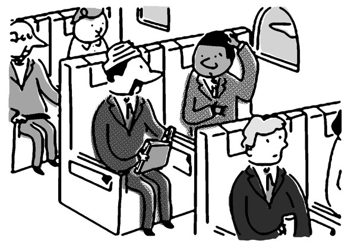
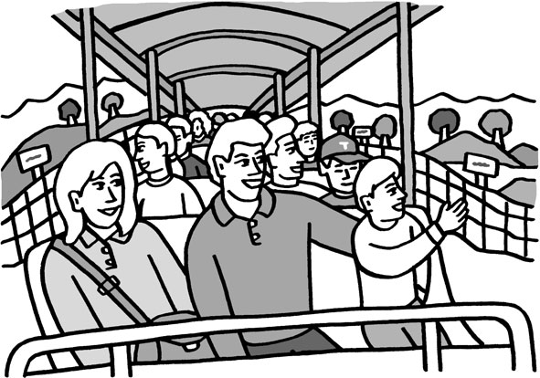

| [音声DL付]究極の英語リスニング Vol.1 1000語レベルで1万語[最初の1000語] 究極の英語リスニングシリーズ | |
| 株式会社アルク | |
| (2008) | |
参照項目から元の箇所に戻るには、お使いのビューワーの仕様に従ってください。または一旦目次を表示し、戻りたい箇所の近くの見出しをタップして戻ってください。
■ Foreword
はじめに
最初の1000語で、
かなりの内容が聞き取れる
『究極の英語リスニング 1000語レベルで１万語』は、アルクが編集した「標準語彙水準12000」（Standard Vocabulary List［略称SVL 12000］）をベースにした、全く新しいタイプのリスニング教材です。
本書の英文はSVLのLEVEL 1、つまり入門レベルの1000語だけ＊で構成されています。とにかく効率良くリスニング力を伸ばしたい、あるいは、ニュース英語に手を出してみたけれど、難しすぎて挫折してしまった──そんな方にこの本はオススメです。音声の内容は、日常生活や旅行、仕事の場面での会話や説明、有名な絵画や観光地の紹介、小説のダイジェスト版など多岐にわたります。内容をきちんと理解して、楽しみながらリスニングに取り組むことを目標としてください。
簡単な単語だけで構成されているからと言って、内容が簡単ということはありません。基本的な単語が持つ多彩な意味に驚くこともあるでしょう。本書を通して、リスニング力をアップし、さらに語彙力も増強してください。
＊固有名詞は除く
■ Contents
目次
■ Features
本書の特徴
1
基本中の基本はじめの1000語のみで構成！
SVL 12000
LEVEL 10~12
→超上級の3000語
LEVEL 7~9
→上級の3000語
LEVEL 4~6
→中級の3000語
LEVEL 3
→ちょっと踏み込む1000語
LEVEL 2
→日常生活をカバーする1000語
LEVEL 1 ※本書のレベル
→基本中の基本の1000語
標準語彙水準12000（SVL 12000）は、日本人英語学習者にとって有用な英単語を全12段階にレベル分けした語彙リストです。本書は、SVL 12000の入門レベルに相当する、LEVEL 1の単語1000語だけ*を使った英文で構成されています。
この1000語は、英語の基礎を成す必須単語で、どのような英文にも登場する、基本的かつ重要な語ばかりです。しかし、知っている単語であっても、意外と聞き取りは難しいもの。特に日常で使われる大事な単語は、英文の中で繰り返し出現しますから、この機会に音とともにしっかり顔なじみになっておいてください。
＊固有名詞は除く
2
バリエーション豊かな英文で学習できる！
本書に収録されている英文は全部で50本。話される内容はもちろん、長さ、速さ、発音など、さまざまな面でバリエーション豊かな英文です。使用される語は基本中の基本の1000語でも、話される内容はオトナを対象としたもの。簡単な日常会話や旅行の場面ばかりとは限りません。
それぞれの英文は、速さや長さによって3段階の難易度に分けられています。ご自身の実力に合った英文から取り組むのも1つのテです。じっくりと耳を澄ませて、会話の内容を聞き取りましょう。
3
3つのMODEでキッチリ聞き取り！
本書では１つの英文に対し、以下の３つのMODEを用意しています。

ヒントなしで英文を聞きます。何も見ずに英文を聞いて、内容が把握できるか確認しましょう。
↓

語彙ヒントを見て、分からない語句を確認してから英文に取り組みます。
↓

日本語訳を見て、内容を理解してから英文を聞きます。
MODE 1で内容を100％理解できれば、その英文は卒業。でも、中には一度では把握できないものもあるかもしれません。そんなときは、音声を繰り返し聞いたり、MODE 2 や3のヒントを頼りに聞いたりしてみましょう。あきらめずに繰り返し聞くことで、英語に耳が慣れ、少しずつ聞き取れる部分が増えてきます。最初は難易度が低い英文から取り組み、少しずつレベルを上げることで、英文の聞き取り能力をアップしてください。
■ How to use
本書の使い方
▶語数
取り上げる英文の総語数です。
▶難易度
取り上げる英文の難易度です。以下の3段階に分かれています。
★☆☆：易。130WPM（１分間に130語）未満のスピードで読まれている、200語未満の英文です。
★★☆：普通。130WPM以上、165WPM未満のスピードで読まれている300語未満の英文です（130WPM未満でも、200語～300語の英文はここに分類されます）。
★★★：難。165WPM以上のスピードで読まれている英文です（165WPM未満でも、300語以上の英文は、ここに分類されます）。
▶状況
取り上げる英文の状況や背景を説明しています。
▶チャレンジMODE
ヒントなし
何も見ずに英文を聞くMODEです。一度で大まかな内容が把握できなければ、何度か聞いても構いません。内容を把握できたと思ったら、「聞き取れた？ 確認してみよう」に答えてみましょう。
語彙ヒント
定型表現などを紹介しています。MODE 1で英文理解の妨げとなった語句を確認してから、もう一度英文を聞いてください。その後、MODE 1では分からなかった「確認してみよう」の質問に答えましょう。
和訳ヒント
MODE 1と2では内容が理解できなかった場合、和訳を見て英文の内容を理解します。その後で、もう一度英文を聞き、答えを導ける部分が聞き取れた場合に、「確認してみよう」の質問に答えましょう。
▶音声
DLvol.1_01
無料でダウンロードできる音声の対応するトラック番号です。
▶聞き取れた？ 確認してみよう
MODE 1で聞いた英文をどの程度理解できているか、Q&A形式で確認します。質問は3つ。答えは英語で書き取りましょう。つづりが分からなければ、カタカナでもOKです。
▶話されていた英文はコレだ!
英文のトランスクリプション（音声を文字で書き起こしたもの）です。各単語がどのように発音されていたのか、文字を見ながら音声を聞いて、確認しましょう。下線部は「聞き取れた？ 確認してみよう」の答えを導ける部分です。
▶解答例
「聞き取れた？ 確認してみよう」の解答例と訳です。
無料ダウンロード音声について
本書に対応するMP3音声は、すべて無料でダウンロードしていただけます。
音声ダウンロードの方法
※PC専用のサイトです。まずはこちらにアクセス！
アルク ダウンロードセンター
http://www.alc.co.jp/dl/
（2015年2月時点の情報。今後詳細が変更になる可能性があります）
① 「ダウンロードリスト」の「英語」の中から、「究極の英語リスニング vol.1 無料ダウンロード音声」をクリック。
② 申し込みフォームに必要事項をご記入の上送信。
③ メールで「ダウンロードページURL」の案内が届きます。
④ 届いたURLにアクセスして、圧縮ファイルをダウンロードしてください。
ダウンロード音声ファイルについて
圧縮ファイルを解凍ソフトで展開の上、iTunesなどの音声再生ソフトで取りこんでご利用ください。音声再生ソフトでのファイルの取り込み方法や携帯音楽プレーヤーでの利用方法については、ソフトやプレーヤーに付属するマニュアルでご確認ください。
音声ファイルは、音声再生ソフトで次のように表示されます。
出版社名（アーティスト名）：「ALC PRESS INC.」と表示。
書名（アルバム名）：『究極の英語リスニング vol.1』
ダウンロードした音声のトラック名は
［vol.1_01］のように、［巻数_トラック番号］のルールで表示されます。本書の該当のトラック番号を確認して再生し、学習してください。
第１章
CHAPTER 1
日常会話に耳を澄ませよう!
まずは、日常的な場面での会話を聞いて力試し。
なくした物を探したり、旅行の相談をしたり、けんかをしたり。
話し手は常に2人です。2人の関係を想像しながら、
内容の聞き取りに挑戦しましょう。
第１章
日常会話に耳を澄ませよう!
語数：100／聞き取り難易度：★☆☆
語数：124／聞き取り難易度：★☆☆
語数：117／聞き取り難易度：★☆☆
語数：128／聞き取り難易度：★☆☆
語数：140／聞き取り難易度：★☆☆
語数：137／聞き取り難易度：★☆☆
語数：140／聞き取り難易度：★☆☆
語数：144／聞き取り難易度：★☆☆
語数：182／聞き取り難易度：★★☆
語数：177／聞き取り難易度：★★☆
語数：231／聞き取り難易度：★★☆
語数：264／聞き取り難易度：★★☆
語数：176／聞き取り難易度：★★★
語数：162／聞き取り難易度：★★★
語数：342／聞き取り難易度：★★★
第１章 日常会話に耳を澄ませよう!
01僕のアレ知らない？
語数：100／難易度：★☆☆
仕事に出掛けようとした男性が、ある物を探している。
女性に何を尋ねているのか、聞き取ろう！
MODE1 ヒントなしでチャレンジ！
男性は何を探しているのだろうか。一度で内容を把握できなかったら、繰り返し聞いてみよう。
DLvol.1_01
◉ 聞き取れた？ 確認してみよう
以下の質問に答えて、どの程度会話の内容を聞き取れたか、確認してみよう。解答はできるだけ英語のまま、つづりが分からない場合は、カタカナで書き取ろう。
① 男性は何をしている？
② 女性はどこを探すようアドバイスしている？（ヒント：4カ所）
③ 探し物は結局、どこにあった？
Unit 01 僕のアレ知らない？
MODE2 語彙を確かめてチャレンジ！
聞き取りづらい語句や不規則変化する動詞などに目を通してから、もう一度音声を聞いてみよう。内容が把握できたら、再度「確認してみよう」に挑戦！
□Have you 〜?: 〜しましたか。
□seen: see（〜を見る）の過去分詞
□Oh, no.: もう。
□Not again.: またなの。
□It seems like 〜: 〜のように思える
□every day: 毎日
□Don't: Do notの略
□get angry: 怒る
□just: （命令文で）ちょっと、（強調して）本当に
□help 〜 find ...: 〜が......を探すのを手伝う
□knew: know（〜を知っている）の過去形
□wouldn't: would notの略
□If I knew that, they wouldn't be lost, would they?: それが分かっていたら、なくなっているわけないだろう？（仮定法過去と付加疑問が組み合わさった文）
□Did you 〜?: 〜しましたか。
□they're: they areの略
□next to 〜: 〜の脇に、〜の隣に
□can't: can notの略
DLvol.1_01
◉ 聞き取れた？ 確認してみよう
以下の質問に答えて、どの程度会話の内容を聞き取れたか、確認してみよう。解答はできるだけ英語のまま、つづりが分からない場合は、カタカナで書き取ろう。
① 男性は何をしている？
② 女性はどこを探すようアドバイスしている？（ヒント：4カ所）
③ 探し物は結局、どこにあった？
Unit 01 僕のアレ知らない？
MODE3 和訳を読んでチャレンジ！
どんな内容の会話だったのか、和訳に目を通して確認。その後、もう一度音声を聞いて、「確認してみよう」の質問の答えとなる部分が聞き取れたら、書き出してみよう。
男性：僕の鍵を見なかった？
女性：もう。またなの。毎日のように鍵をなくしてる感じよね。
男：怒らないで。捜すのをちょっと手伝ってよ。
女：どこに置いたの？
男：それが分かっていたら、なくなっているわけないだろう？
女：もう、どこに置いたのかなんて知らないわよ。テレビの後ろは見た？
男：見たよ。そこにはないんだ。
女：ベッドの脇に置いたんじゃない？
男：いいや。そこも見た。
女：台所の辺りは見た？
男：ああ。どこもかしこも捜したんだ。でも本当に見つけられないんだよ！
女：ポケットの中は見た？
男：あ......あった。ありがとう。
DLvol.1_01
◉ 聞き取れた？ 確認してみよう
以下の質問に答えて、どの程度会話の内容を聞き取れたか、確認してみよう。解答はできるだけ英語のまま、つづりが分からない場合は、カタカナで書き取ろう。
① 男性は何をしている？
② 女性はどこを探すようアドバイスしている？（ヒント：4カ所）
③ 探し物は結局、どこにあった？
Unit 01 僕のアレ知らない？
◉ 話されていた 英文はコレだ！
最後に、会話のトランスクリプション（音声を文字で書き起こしたもの）を確認しよう。下線部が、「確認してみよう」の答えを導ける部分だ。
DLvol.1_01
Man:①Have you seen my keys?
Woman: Oh, no. Not again. It seems like you lose your keys every day.
M: Don't get angry. Just help me find them.
W: Where did you put them?
M: If I knew that, they wouldn't be lost, would they?
W: Well, I don't know where you put them.②Did you look behind the television?
M: Yes, I did. They're not there.
W:②Did you put them next to the bed?
M: No. I looked there.
W:②Did you look around the kitchen?
M: Yes. I looked everywhere. I just can't find them!
W:②③Did you look inside your pockets?
M: Oh...③here they are. Thank you.
Unit 01 僕のアレ知らない？
◉ 解答例
① 男性は何をしている？
He is looking for his keys.
（鍵を捜している）
② 女性はどこを探すようアドバイスしている？（ヒント：4カ所）
behind the television（テレビの裏）、next to the bed（ベッドの脇）、around the kitchen（台所の辺り）、inside his pockets（男性のポケットの中）
③ 探し物は結局、どこにあった？
They were in the man's pocket.
（男性のポケットの中にあった）
再チャレンジGO!
第１章 日常会話に耳を澄ませよう!
02具合が悪いんです
語数：124／難易度：★☆☆
男性が、医者を訪れて不調を訴えている。
男性と医者のやり取りを聞いてみよう。
MODE1 ヒントなしでチャレンジ！
男性はどんな問題を抱えているのだろうか。
一度で内容を把握できなければ、繰り返し聞いてみよう。
DLvol.1_02
◉ 聞き取れた？ 確認してみよう
以下の質問に答えて、どの程度内容を聞き取れたか確認してみよう。解答はできるだけ英語のまま書こう。
① 男性の症状はどんなもの？
② 男性の不調の原因は何だと考えられる？
③ 医者は男性に、今晩どうするように告げている？
Unit 02 具合が悪いんです
MODE2 語彙を確かめてチャレンジ！
聞き取りづらい語句や熟語などに目を通してから、もう一度音声を聞いてみよう。内容が把握できたら、再度「確認してみよう」に挑戦！
□Good afternoon.: こんにちは。
□How are you today?: 今日はどうされましたか。
□I'm: I amの略
□feel sick: 具合が悪い、気分が悪い
□couldn't: could notの略
□last night: 夕べ、昨晩
□feel bad: 具合が悪い、気分が悪い
□ate: eat（〜を食べる）の過去形
□Chinese restaurant: 中華料理店
□had: have（〜を食べる）の過去形
□there was something wrong with 〜: 〜に何か問題があった
□I'll: I willの略
□make you 〜: あなたを〜させる
□feel better: 気分が前より良い
□Can I 〜?: 〜してもいいですか。
□go out: 外出する
□stay home: 家にいる
□as much 〜 as: できるだけたくさんの〜
□come back and see me again.: また来てください。
DLvol.1_02
◉ 聞き取れた？ 確認してみよう
以下の質問に答えて、どの程度内容を聞き取れたか確認してみよう。解答はできるだけ英語のまま書こう。
① 男性の症状はどんなもの？
② 男性の不調の原因は何だと考えられる？
③ 医者は男性に、今晩どうするように告げている？
Unit 02 具合が悪いんです
MODE3 和訳を読んでチャレンジ！
どんな内容の会話だったのか、和訳に目を通して確認。その後、もう一度音声を聞いて、「確認してみよう」の質問の答えとなる部分が聞き取れたら、書き出してみよう。
医者：こんにちは。今日はどうされました？
男性：あまり具合が良くないんです。気分が悪くて、夕べは眠れませんでした。
医：いつごろから具合が悪くなったんですか。
男：夕食を食べ終わるまでは元気でした。
医：夕食に何を食べました？
男：中華料理店で食べました。
医：何か魚を食べましたか。
男：はい、食べました。野菜とご飯と一緒に魚を食べました。
医：野菜とご飯は大丈夫でしょう。ですが、魚に何か問題があったのかもしれませんね。気分が良くなるお薬を出しましょう。
男：今晩は外出してもいいでしょうか。
医：今日は家にいて、できるだけたくさん水分を取ってください。明日になっても気分が良くならなかったら、また来てください。それと、魚は食べないでくださいね！
男：分かりました。どうもありがとうございました。
DLvol.1_02
◉ 聞き取れた？ 確認してみよう
以下の質問に答えて、どの程度内容を聞き取れたか確認してみよう。解答はできるだけ英語のまま書こう。
① 男性の症状はどんなもの？
② 男性の不調の原因は何だと考えられる？
③ 医者は男性に、今晩どうするように告げている？
Unit 02 具合が悪いんです
◉ 話されていた 英文はコレだ！
最後に、会話のトランスクリプションを確認しよう。下線部が、「確認してみよう」の答えを導ける部分だ。
DLvol.1_02
Doctor: Good afternoon. How are you today?
Man: I'm not very well.①I feel sick and I couldn't sleep last night.
D: When did you start to feel bad?
M: I was fine until after dinner.
D: What did you eat for dinner?
M: I ate in a Chinese restaurant.
D: Did you eat any fish?
M: Yes, I did. I had fish with vegetables and rice.
D: Vegetables and rice should be OK. But②perhaps there was something wrong with the fish. I'll give you something to make you feel better.
M: Can I go out tonight?
D:③You should stay home today and drink as much water as you can. If you don't feel better tomorrow, come back and see me again. And don't eat any fish!
M: I understand. Thank you very much.
Unit 02 具合が悪いんです
◉ 解答例
① 男性の症状はどんなもの？
He feels sick and couldn't sleep last night.
（気分が悪くて、夕べは眠れなかった）
② 男性の不調の原因は何だと考えられる？
Perhaps there was something wrong with the fish.
（魚に何か問題があったのかもしれない）
③ 医者は男性に、今晩どうするように告げている？
He should stay home and drink as much water as he can.
（家にいて、できるだけたくさん水分を取る）
再チャレンジGO!
第１章 日常会話に耳を澄ませよう!
032人の計画
語数：117／難易度：★☆☆
仕事から帰ってきた夫が、妻に相談をしている。
どんな内容の相談なのか、聞き取ろう！
MODE1 ヒントなしでチャレンジ！
男性は何をしたいのだろうか。
DLvol.1_03
◉ 聞き取れた？ 確認してみよう
以下の質問に答えて、どの程度内容を聞き取れたか確認してみよう。解答はできるだけ英語のまま書こう。
① 2人は何の相談をしている？
② 女性が会いたいと言っている相手は誰？
③ 2人は目的地で何をするつもり？
Unit 03 2人の計画
MODE2 語彙を確かめてチャレンジ！
聞き取りづらい語句や短縮形などに目を通してから、もう一度音声を聞いてみよう。内容が把握できたら、再度「確認してみよう」に挑戦！
□What do you think about 〜?: 〜についてどう思いますか。
□Grand Canyon: グランド・キャニオン（アメリカ・アリゾナ州の大峡谷）
□summer vacation: 夏休み
□this year: 今年
□I'd: I wouldの略
□I'd love to 〜: とても〜したい
□I've: I haveの略
□I've always wanted to 〜: ずっと〜したかった
□take off: 休暇を取る
□drive to 〜: 〜まで車で行く
□Arizona: アリゾナ州（アメリカ南西部の州）
□I'd like to 〜: 〜したい
□stop in〜: 〜に立ち寄る
□Phoenix: フェニックス（アリゾナ州の州都）
□I'm sure〜: きっと〜だろう
□they'd: they wouldの略
□be happy to 〜: 〜してうれしい
□It's: It hasの略
□It's been a long time since 〜: 〜してからすいぶん時間がたっている
□get to 〜: 〜に着く
□call: 電話をかける
□we're: we areの略
DLvol.1_03
◉ 聞き取れた？ 確認してみよう
以下の質問に答えて、どの程度内容を聞き取れたか確認してみよう。解答はできるだけ英語のまま書こう。
① 2人は何の相談をしている？
② 女性が会いたいと言っている相手は誰？
③ 2人は目的地で何をするつもり？
Unit 03 2人の計画
MODE3 和訳を読んでチャレンジ！
どんな内容の会話だったのか、和訳に目を通して確認。その後、もう一度音声を聞いて、「確認してみよう」の質問の答えとなる部分が聞き取れたら、書き出してみよう。
男性：今年の夏休みにグランド・キャニオンに行くっていうのはどう？
女性：本当に？ ぜひ行きたいわ。ずっとグランド・キャニオンを見てみたかったのよ。
男：僕もだよ。7月に2週間、休みが取れると思うんだ。アリゾナまで車で行ってもいいね。
女：それ、いいわね。フェニックスに寄って、おばさんとおじさんにも会いたいわ。
男：君と会えたら、きっと喜ぶと思うよ。長い間会っていないからね。
女：それに、グランド・キャニオンに着いたら、馬に乗れるし、キャンプにも行けるわ。
男：いい考えだね！ 次の週末にテントを買うよ。
女：おばさんとおじさんに会いに行くって電話するわね。素晴らしい休暇になりそう！
DLvol.1_03
◉ 聞き取れた？ 確認してみよう
以下の質問に答えて、どの程度内容を聞き取れたか確認してみよう。解答はできるだけ英語のまま書こう。
① 2人は何の相談をしている？
② 女性が会いたいと言っている相手は誰？
③ 2人は目的地で何をするつもり？
Unit 03 2人の計画
◉ 話されていた 英文はコレだ！
最後に、会話のトランスクリプションを確認しよう。下線部が、「確認してみよう」の答えを導ける部分だ。
DLvol.1_03
Man:①What do you think about going to the Grand Canyon for summer vacation this year?
Woman: Could we really? I'd love to. I've always wanted to see the Grand Canyon.
M: Me, too. I think I can take off two weeks in July. We could drive to Arizona.
W: That would be great.②I'd like to stop in Phoenix and visit my aunt and uncle.
M: I'm sure they'd be happy to see you. It's been a long time since you visited them.
W:③And when we get to the Grand Canyon, we can ride horses and go camping.
M: Good idea! I'll buy a tent next weekend.
W: I'll call my aunt and uncle to tell them we're coming. This will be wonderful!
Unit 03 2人の計画
◉ 解答例
① 2人は何の相談をしている？
They are talking about going to the Grand Canyon for summer vacation this year.
（今年の夏休みにグランド・キャニオンに行くことについて相談している）
② 女性が会いたいと言っている相手は誰？
She'd like to visit her aunt and uncle.
（おばさんとおじさんに会いたい）
③ 2人は目的地で何をするつもり？
They will ride horses and go camping.
（馬に乗ったりキャンプに行ったりする）
再チャレンジGO!
第１章 日常会話に耳を澄ませよう!
04薬をください！
語数：128／難易度：★☆☆
街角のある店に、男性が駆け込んで何かを訴えている。
どんな内容なのか、聞き取ろう！
MODE1 ヒントなしでチャレンジ！
男性はどんな問題を抱えているのだろうか。
DLvol.1_04
◉ 聞き取れた？ 確認してみよう
以下の質問に答えて、どの程度内容を聞き取れたか確認してみよう。解答はできるだけ英語のまま書こう。
① 男性はなぜ店にやってきた？
② 店員は、男性の不調の原因は何だと推測している？（ヒント：4つ）
③ 結局、男性の不調の原因は何だった？
Unit 04 薬をください！
MODE2 語彙を確かめてチャレンジ！
聞き取りづらい語句や不規則変化する動詞などに目を通してから、もう一度音声を聞いてみよう。内容が把握できたら、再度「確認してみよう」に挑戦！
□Can you 〜?: 〜してもらえますか。
□have a cold: 風邪をひいている
□catch a cold: 風邪をひく
□have a big lunch: たっぷり昼ごはんを食べる
□this morning: 今朝
□drink: 酒を飲む
□went: go（〜へ行く）の過去形
□go to bed: 寝る
□just a minute: ちょっと待って
□may I 〜, please?: 〜させていただけますか。
□have an idea: 思いつく
□here's: here isの略
□a little: 少し
□Do you mean 〜?: 〜ということですか。
DLvol.1_04
◉ 聞き取れた？ 確認してみよう
以下の質問に答えて、どの程度内容を聞き取れたか確認してみよう。解答はできるだけ英語のまま書こう。
① 男性はなぜ店にやってきた？
② 店員は、男性の不調の原因は何だと推測している？（ヒント：4つ）
③ 結局、男性の不調の原因は何だった？
Unit 04 薬をください！
MODE3 和訳を読んでチャレンジ！
どんな内容の会話だったのか、和訳に目を通して確認。その後、もう一度音声を聞いて、「確認してみよう」の質問の答えとなる部分が聞き取れたら、書き出してみよう。
男性1：頭に効くもの、何かありませんか。痛むんです。
男性2：頭を何かにぶつけましたか。
男1：いいえ、痛いだけです。
男2：風邪をひいてますか。
男1：いいえ。元気ですよ。風邪なんかひいたことありません。
男2：今日はしっかり食事を取りましたか。
男1：はい。2時間前にたっぷり昼ご飯を食べました。それに、今朝は朝ご飯も食べましたよ。
男2：夕べはお酒を飲みすぎましたか。
男1：いいえ！ お酒は飲まないんです。夕食を食べて早めに寝ました。
男2：ちょっとお待ちください。帽子を見せていただけますか。
男1：帽子？ どうして帽子を見たいんですか。
男2：ちょっと思いついたんです。
男1：分かりました。はいどうぞ。
男2：ご気分はどうですか。
男1：あっ！ 少し良くなりました。つまり......？
男2：はい、帽子が小さすぎるんだと思います。それが頭痛の原因だったんですよ。
DLvol.1_04
◉ 聞き取れた？ 確認してみよう
以下の質問に答えて、どの程度内容を聞き取れたか確認してみよう。解答はできるだけ英語のまま書こう。
① 男性はなぜ店にやってきた？
② 店員は、男性の不調の原因は何だと推測している？（ヒント：4つ）
③ 結局、男性の不調の原因は何だった？
Unit 04 薬をください！
◉ 話されていた 英文はコレだ！
最後に、会話のトランスクリプションを確認しよう。下線部が、「確認してみよう」の答えを導ける部分だ。
DLvol.1_04
Man1:①Can you give me anything for my head? It hurts.
Man2: Did you hit your head on something?
M1: No. It just hurts.
M2:②Do you have a cold?
M1: No. I'm fine. I never catch colds.
M2:②Did you eat enough today?
M1: Yes. I had a big lunch two hours ago. And I ate breakfast this morning.
M2:②Did you drink too much last night?
M1: No! I never drink. I had dinner and went to bed early.
M2: Just a minute, may I see your hat, please?
M1: My hat? Why do you want to see my hat?
M2: I've just had an idea.
M1: OK. Here's my hat.
M2: Now how do you feel?
M1: Oh! I feel a little better. Do you mean...?
M2: Yes,②③I think your hat is too small. It was making your head hurt.
Unit 04 薬をください！
◉ 解答例
① 男性はなぜ店にやってきた？
Because his head hurts.
（頭が痛いから）
② 店員は、男性の不調の原因は何だと推測している？（ヒント：4つ）
He has a cold.（風邪をひいている）、He didn't eat enough today.（今日はしっかり食事を取らなかった）、He drank too much last night.（夕べお酒を飲みすぎた）、His hat is too small.（帽子が小さすぎる）
③ 結局、男性の不調の原因は何だった？
His hat is too small.
（帽子が小さすぎる）
再チャレンジGO!
第１章 日常会話に耳を澄ませよう!
05忘れ物はない？
語数：140／難易度：★☆☆
今日の登場人物は、世話焼きの母親とその息子だ。
２人のやり取りを聞いてみよう。
MODE1 ヒントなしでチャレンジ！
母親はどんな世話を焼いているのだろうか。
DLvol.1_05
◉ 聞き取れた？ 確認してみよう
以下の質問に答えて、どの程度内容を聞き取れたか確認してみよう。解答はできるだけ英語のまま書こう。
① 今日はどんな日？
② 母親は、息子のかばんに何を入れた？（ヒント：10種類）
③ 息子はなぜ最後に怒った？
Unit 05 忘れ物はない？
MODE2 語彙を確かめてチャレンジ！
聞き取りづらい語句や不規則変化する動詞などに目を通してから、もう一度音声を聞いてみよう。内容が把握できたら、再度「確認してみよう」に挑戦！
□I know: そうですね
□Mom: ママ
□Are you ready?: 用意はできていますか。
□done: do（〜する）の過去分詞
□bought: buy（〜を買う）の過去形
□juice bottle: ジュース用のボトル、水筒
□Will you 〜?: 〜しますか。
□ride to 〜: 〜まで乗り物で行く
□make sure〜: 〜を確認する
□do one's homework: 〜の宿題をする
□get ready: 用意をする
□there's: there isの略
□left: leave（〜を残しておく）の過去分詞
DLvol.1_05
◉ 聞き取れた？ 確認してみよう
以下の質問に答えて、どの程度内容を聞き取れたか確認してみよう。解答はできるだけ英語のまま書こう。
① 今日はどんな日？
② 母親は、息子のかばんに何を入れた？（ヒント：10種類）
③ 息子はなぜ最後に怒った？
Unit 05 忘れ物はない？
MODE3 和訳を読んでチャレンジ！
どんな内容の会話だったのか、和訳に目を通して確認。その後、もう一度音声を聞いて、「確認してみよう」の質問の答えとなる部分が聞き取れたら、書き出してみよう。
母：今日は新しい学校での初めての登校日ね。
息子：そうだね、ママ。
母：用意はできた？ やらなきゃいけないことは、全部やった？
子：うん、ママ。
母：学校用の新しいシャツとズボンを買っておいたわ。洋服は洗って、部屋に置いてあるし。
子：ありがとう、ママ。
母：ペンを3本、鉛筆を2本、ノートを4冊、辞書、テープ、教科書、バスケットボール、傘、水筒、それにサンドイッチを通学かばんに入れておいたわ。
子：すごいね、ママ。
母：自転車もきれいにしておいたわよ。クラスメートのトムと待ち合わせて、一緒に登校するの？
子：うん、ママ。
母：トムのお母さんに電話して、トムに夕食を食べにうちに来てくれるよう、確認したわよ、そうすれば一緒に宿題をできるでしょう。
子：ありがとう、ママ。
母：ほかに何か用意することはない？
子：ママ、僕がやることはもう何もないよ。ママが全部やっちゃったから！
DLvol.1_05
◉ 聞き取れた？ 確認してみよう
以下の質問に答えて、どの程度内容を聞き取れたか確認してみよう。解答はできるだけ英語のまま書こう。
① 今日はどんな日？
② 母親は、息子のかばんに何を入れた？（ヒント：10種類）
③ 息子はなぜ最後に怒った？
Unit 05 忘れ物はない？
◉ 話されていた 英文はコレだ！
最後に、会話のトランスクリプションを確認しよう。下線部が、「確認してみよう」の答えを導ける部分だ。
DLvol.1_05
Mother:①Today will be your first day at your new school.
Son: I know, Mom.
M: Are you ready? Have you done everything you need to do?
S: Yes, Mom.
M: I bought you new school shirts and pants. And I washed your clothes and put them in your room.
S: Thanks, Mom.
M:②I put three pens, two pencils, four notebooks, a dictionary, some tape, your textbooks, your basketball, an umbrella, a juice bottle and a sandwich in your school bag.
S: Great, Mom.
M: I cleaned your bicycle. Will you meet your classmate, Tom, and ride to school together?
S: Yes, Mom.
M: I called Tom's mother to make sure he can come to dinner at our house so you can do your homework together.
S: Thanks, Mom.
M: Is there anything else you need to do to get ready?
S:③Mom, there's nothing left for me to do. You did everything!
Unit 05 忘れ物はない？
◉ 解答例
① 今日はどんな日？
The first day at the boy's new school.
（少年の新しい学校での初めての登校日）
② 母親は、息子のかばんに何を入れた？（ヒント：10種類）
three pens（ペンを3本）、two pencils（鉛筆を2本）、four notebooks（ノートを4冊）、a dictionary（辞書）、some tape（テープ）、textbooks（教科書）、a basketball（バスケットボール）、an umbrella（傘）、a juice bottle（水筒）、a sandwich（サンドイッチ）
③ 息子はなぜ最後に怒った？
Because there's nothing left for him to do. His mother did everything.
（彼がやることはもう何もないから。母親が全部やってしまった）
再チャレンジGO!
第１章 日常会話に耳を澄ませよう!
06新しいことを始めよう
語数：137／難易度：★☆☆
退屈を持て余している女性と、それをなだめる男性。
退屈の理由は何か、聞き取ろう！
MODE1 ヒントなしでチャレンジ！
女性は退屈を紛らわすために何をするだろうか。
DLvol.1_06
◉ 聞き取れた？ 確認してみよう
以下の質問に答えて、どの程度内容を聞き取れたか確認してみよう。解答はできるだけ英語のまま書こう。
① 女性が今まで続けてきた趣味は？
② 男性が提案して、女性に却下された趣味と、その理由は？
③ 女性が始めようと決めた趣味は？ いつ、どこで勉強できる？
Unit 06 新しいことを始めよう
MODE2 語彙を確かめてチャレンジ！
聞き取りづらい語句や熟語などに目を通してから、もう一度音声を聞いてみよう。内容が把握できたら、再度「確認してみよう」に挑戦！
□have been -ing: ずっと〜してきた
□paper doll: 紙人形
□for a long time: ずっと、長い間
□get tired of 〜: 〜に飽きる、〜が嫌になる
□Why don't you 〜?: 〜したらどうですか。
□some kind of 〜: 何らかの〜
□move around: 動き回る
□saw: see（〜を見る）の過去形
□taste: （酒などの）味利きをする
□That sounds like 〜: 〜のようだ、〜のように思える
□get good at 〜: 〜が上達する
□Good idea!: いい考えですね！
□every night: 毎晩
□where's: where isの略
□right away: 直ちに
□I hope 〜: 〜できるといい
DLvol.1_06
◉ 聞き取れた？ 確認してみよう
以下の質問に答えて、どの程度内容を聞き取れたか確認してみよう。解答はできるだけ英語のまま書こう。
① 女性が今まで続けてきた趣味は？
② 男性が提案して、女性に却下された趣味と、その理由は？
③ 女性が始めようと決めた趣味は？ いつ、どこで勉強できる？
Unit 06 新しいことを始めよう
MODE3 和訳を読んでチャレンジ！
どんな内容の会話だったのか、和訳に目を通して確認。その後、もう一度音声を聞いて、「確認してみよう」の質問の答えとなる部分が聞き取れたら、書き出してみよう。
女性：新しい趣味が必要だわ。ずっと紙人形を作ってきたけれど、飽きてきちゃった。
男性：何かスポーツでもしたらどう？
女：いいえ、体を動かすことはあまり好きじゃないもの。
男：新聞にワインについて書いてあるのを見たよ。ワインのテイスティングを勉強したらいいんじゃない。毎週火曜日の夜、町の大学で教室が開かれるらしいんだ。
女：面白そうね！ ワインは大好きなのよ。上達したら、ワイン・パーティーを開けるわ。
男：いい考えだね！ 僕はチーズが好きなのを知ってるだろう。ワインとチーズならよく合うよ。
女：それに、宿題をするのも楽しいわよ！ 毎晩練習できるわ。
男：新しい趣味を始めることにして良かったね。
女：新聞はどこ？ すぐに大学に電話してみるわ。その教室に入れるといいんだけど。
DLvol.1_06
◉ 聞き取れた？ 確認してみよう
以下の質問に答えて、どの程度内容を聞き取れたか確認してみよう。解答はできるだけ英語のまま書こう。
① 女性が今まで続けてきた趣味は？
② 男性が提案して、女性に却下された趣味と、その理由は？
③ 女性が始めようと決めた趣味は？ いつ、どこで勉強できる？
Unit 06 新しいことを始めよう
◉ 話されていた 英文はコレだ！
最後に、会話のトランスクリプションを確認しよう。下線部が、「確認してみよう」の答えを導ける部分だ。
DLvol.1_06
Woman: I think I need a new hobby.①I've been making paper dolls for a long time but I'm getting tired of them.
Man:②Why don't you try some kind of sport?
W:②No, I don't really like to move around.
M: I saw something in the newspaper about wine.③You can study how to taste wine. There will be a class every Tuesday evening at the college in town.
W:③That sounds like fun! I really like wine. If I can get good at it, we can have wine parties.
M: Good idea! You know I like cheese. Wine and cheese taste very good together.
W: And doing homework will be fun! We can practice every night.
M: I'm glad you decided to get a new hobby.
W: Where's the newspaper? I'll call the college right away. I hope I can get into that class.
Unit 06 新しいことを始めよう
◉ 解答例
① 女性が今まで続けてきた趣味は？
She has been making paper dolls.
（ずっと紙人形を作ってきた）
② 男性が提案して、女性に却下された趣味と、その理由は？
To try some kind of sport, but she doesn't like to move around.
（何かスポーツをすること、しかし彼女は体を動かすことはあまり好きではない）
③ 女性が始めようと決めた趣味は？ いつ、どこで勉強できる？
She will study how to taste wine. There will be a class every Tuesday evening at the college in town.
（ワインのテイスティングを勉強する。毎週火曜日の夜、町の大学で教室が開かれる）
再チャレンジGO!
第１章 日常会話に耳を澄ませよう!
07新しい車が欲しい
語数：140／難易度：★☆☆
女性は、今乗っている車に不満があるようだ。
今後どうしたいと思っているのか、聞いてみよう。
MODE1 ヒントなしでチャレンジ！
女性は今の車の何が不満なのだろうか。
DLvol.1_07
◉ 聞き取れた？ 確認してみよう
以下の質問に答えて、どの程度内容を聞き取れたか確認してみよう。解答はできるだけ英語のまま書こう。
① 女性が車の買い替えを考えるようになった原因は？
② 女性はどんな車を欲しいと思っている？
③ 男性は、女性の運転技術について何と言っている？
Unit 07 新しい車が欲しい
MODE2 語彙を確かめてチャレンジ！
聞き取りづらい語句や短縮形などに目を通してから、もう一度音声を聞いてみよう。内容が把握できたら、再度「確認してみよう」に挑戦！
□have to 〜: 〜しなければならない
□You're: You areの略
□You've: You haveの略
□It's time to 〜: 〜する時が来た
□I think 〜: 〜と思う
□they're: they areの略
□aren't: are notの略
□be tired of 〜: 〜が嫌になる、〜に飽きる
□power: 馬力
□It could be 〜: 〜かもしれない
□big thing: 大ごと、一大事
DLvol.1_07
◉ 聞き取れた？ 確認してみよう
以下の質問に答えて、どの程度内容を聞き取れたか確認してみよう。解答はできるだけ英語のまま書こう。
① 女性が車の買い替えを考えるようになった原因は？
② 女性はどんな車を欲しいと思っている？
③ 男性は、女性の運転技術について何と言っている？
Unit 07 新しい車が欲しい
MODE3 和訳を読んでチャレンジ！
どんな内容の会話だったのか、和訳に目を通して確認。その後、もう一度音声を聞いて、「確認してみよう」の質問の答えとなる部分が聞き取れたら、書き出してみよう。
女性：新しい車を買わなくちゃ。古いのはもう駄目よ。大きな音を立てるし、嫌な臭いがするのよね。
男性：そうだね。あの古い車に10年も乗っていたんだものね。買い換えてもいいころだよ。
女：小さな赤いスポーツカーを買おうと思うの。
男：何だって!? スポーツカーは速くて感じがいいけど、中が狭いよ。安くはないし。
女：お金がないのは分かっているけど、大きな車はもう嫌だわ。運転しにくいし、私は運転が下手なんだから。
男：君が運転がうまくないのは分かっているけど、スポーツカーはとても馬力があるんだよ。君には危ないかもしれない。
女：そうかもね。もう少し考えてみるわ。今晩決める必要もないし。
男：新車を買うのは大ごとだからね。慎重にしないと。
女：そうするわ。
DLvol.1_07
◉ 聞き取れた？ 確認してみよう
以下の質問に答えて、どの程度内容を聞き取れたか確認してみよう。解答はできるだけ英語のまま書こう。
① 女性が車の買い替えを考えるようになった原因は？
② 女性はどんな車を欲しいと思っている？
③ 男性は、女性の運転技術について何と言っている？
Unit 07 新しい車が欲しい
◉ 話されていた 英文はコレだ！
最後に、会話のトランスクリプション（音声を文字で書き起こしたもの）を確認しよう。下線部が、「確認してみよう」の答えを導ける部分だ。
DLvol.1_07
Woman: I have to buy a new car.①The old one is no good. It makes too much noise and smells bad.
Man: You're right. You've had that old car for about 10 years. It's time to get a new one.
W:②I think I'll get a small red sports car.
M: What?! Sports cars are fast and pretty but they don't have much space in them. And they're not cheap.
W: I know we aren't rich but I'm tired of having a big car. It's difficult to drive and I'm not a good driver.
M:③I know you're not a good driver, but sports cars have so much power. It could be dangerous for you.
W: You may be right. I'll think about it some more. I don't have to decide tonight.
M: Buying a new car is a big thing. You should be careful.
W: I will.
Unit 07 新しい車が欲しい
◉ 解答例
① 女性が車の買い替えを考えるようになった原因は？
The old one makes too much noise and smells bad.
（古いのは大きな音を立てるし、嫌な臭いがする）
② 女性はどんな車を欲しいと思っている？
A small red sports car.
（小さな赤いスポーツカー）
③ 男性は、女性の運転技術について何と言っている？
She's not a good driver.
（運転がうまくない）
再チャレンジGO!
第１章 日常会話に耳を澄ませよう!
08眠いんだけど
語数：144／難易度：★☆☆
男性が居間に陣取って眠気と戦っている。
妻との会話を聞き取ろう！
MODE1 ヒントなしでチャレンジ！
男性はなぜ眠れないのだろうか。
DLvol.1_08
◉ 聞き取れた？ 確認してみよう
以下の質問に答えて、どの程度内容を聞き取れたか確認してみよう。解答はできるだけ英語のまま書こう。
① 男性が眠りたくない理由は？
② 女性は男性に、何をするようアドバイスしている？
③ 男性が見たいと思っている番組の内容は？
Unit 08 眠いんだけど
MODE2 語彙を確かめてチャレンジ！
聞き取りづらい語句や不規則変化する動詞などに目を通してから、もう一度音声を聞いてみよう。内容が把握できたら、再度「確認してみよう」に挑戦！
□get sleepy: 眠くなる
□turn off 〜: （テレビなど）を消す
□show: （テレビなどの）番組
□all week: 1週間ずっと
□put in 〜: 〜を入れる
□work late: 残業する
□be too tired to 〜: 疲れすぎて〜できない
□the day after tomorrow: あさって
□forgotten: forget（〜を忘れる）の過去分詞
□I'll have forgotten: 忘れてしまっているだろう
□by then: それまでに
□look for 〜: 〜を探す
□be sure to 〜: きっと〜する
□all the same: みんな同じ
□They're: They areの略
□be different from 〜: 〜とは違う
□policeman's: policeman isの略
DLvol.1_08
◉ 聞き取れた？ 確認してみよう
以下の質問に答えて、どの程度内容を聞き取れたか確認してみよう。解答はできるだけ英語のまま書こう。
① 男性が眠りたくない理由は？
② 女性は男性に、何をするようアドバイスしている？
③ 男性が見たいと思っている番組の内容は？
Unit 08 眠いんだけど
MODE3 和訳を読んでチャレンジ！
どんな内容の会話だったのか、和訳に目を通して確認。その後、もう一度音声を聞いて、「確認してみよう」の質問の答えとなる部分が聞き取れたら、書き出してみよう。
男性：すごく眠くなってきたな。
女性：それなら、テレビを消して寝たら。
男：でも絶対にこの番組を見たいんだ。1週間、楽しみにしていたんだから。
女：ビデオを入れておけばいいじゃない。そうすれば明日見られるわよ。
男：明日は残業しなきゃいけないんだ。疲れちゃって見るどころじゃないよ。
女：なら、あさって見れば？
男：でも、それまでに番組の最初の方を忘れてしまうかもしれないじゃないか。
女：忘れるとは思えないわ。単純なストーリーでしょ。警官が銃を持った悪者を探している。きっと悪者を捕まえるわよ。こういった話はどれも同じだもの。
男：同じじゃないよ。この番組はほかのとは違うから人気があるんだ。
女：そんな子どもみたいなこと言ってないで！ もう寝なさいよ！
男：いや、本当に、違うんだってば。この番組では、警官がナイフを持った馬を探しているんだ。
DLvol.1_08
◉ 聞き取れた？ 確認してみよう
以下の質問に答えて、どの程度内容を聞き取れたか確認してみよう。解答はできるだけ英語のまま書こう。
① 男性が眠りたくない理由は？
② 女性は男性に、何をするようアドバイスしている？
③ 男性が見たいと思っている番組の内容は？
Unit 08 眠いんだけど
◉ 話されていた 英文はコレだ！
最後に、会話のトランスクリプションを確認しよう。下線部が、「確認してみよう」の答えを導ける部分だ。
DLvol.1_08
Man: I'm getting really sleepy.
Woman: So turn off the television and go to bed.
M: But①I really want to see this show. I've been waiting all week to see it.
W:②Put in a videotape. Then you can watch the show tomorrow.
M: Tomorrow I have to work late. I'll be too tired to watch it.
W: So watch it the day after tomorrow.
M: But I'll have forgotten the first part of the show by then.
W: I don't think you'll forget. It's a simple story. A policeman is looking for a bad man with a gun. He is sure to catch him. These stories are all the same.
M: They're not all the same. This show is popular because it's different from other shows.
W: Oh, don't be such a baby! Go to bed!
M: No really, it's different.③In this show the policeman's looking for a horse with a knife.
Unit 08 眠いんだけど
◉ 解答例
① 男性が眠りたくない理由は？
Because he wants to see a television show.
（テレビ番組が見たいから）
② 女性は男性に、何をするようアドバイスしている？
To put in a videotape.
（ビデオを入れておくこと）
③ 男性が見たいと思っている番組の内容は？
The policeman is looking for a horse with a knife.
（警官がナイフを持った馬を探している）
再チャレンジGO!
第１章 日常会話に耳を澄ませよう!
09私のモノなのに！
語数：182／難易度：★★☆
ここでは、女性が男性に怒っている様子を聞く。
なぜ怒っているのか、聞き取ってみよう。
MODE1 ヒントなしでチャレンジ！
２人のいさかいの原因は何なのだろうか。
ここから会話がスピードアップするので、気を付けて！
DLvol.1_09
◉ 聞き取れた？ 確認してみよう
以下の質問に答えて、どの程度内容を聞き取れたか確認してみよう。解答はできるだけ英語のまま書こう。
① 男性は、女性の何を持ち出した？
② 男性が、女性の物を持ち出した理由は？
③ 男性は、女性の何を見て責めている？
Unit 09 私のモノなのに！
MODE2 語彙を確かめてチャレンジ！
聞き取りづらい語句や不規則変化する動詞などに目を通してから、もう一度音声を聞いてみよう。内容が把握できたら、再度「確認してみよう」に挑戦！
□Why did you 〜?: なぜ〜したんですか。
□ask 〜 not to ...: 〜に......しないように頼む
□many times: 何回も
□brought: bring（〜を持ってくる）の過去形
□put 〜 back: 〜を元へ戻す
□doesn't: does notの略
□It doesn't matter to 〜: 〜にとっては問題でない
□that's: that isの略
□got: get（〜になる）の過去形
□get wet: 濡れる
□on one's way to 〜: 〜へ行く途中で
□Would it be better if 〜?: 〜の方が良かったんですか。
□point: 重要なこと、論点
□took: take（〜を持っていく）の過去形
□Would you have 〜?: 〜しましたか。
□each other: お互いに
□didn't: did notの略
□Why didn't you 〜?: なぜ〜しなかったんですか。
□put 〜 on: 〜を着る
DLvol.1_09
◉ 聞き取れた？ 確認してみよう
以下の質問に答えて、どの程度内容を聞き取れたか確認してみよう。解答はできるだけ英語のまま書こう。
① 男性は、女性の何を持ち出した？
② 男性が、女性の物を持ち出した理由は？
③ 男性は、女性の何を見て責めている？
Unit 09 私のモノなのに！
MODE3 和訳を読んでチャレンジ！
どんな内容の会話だったのか、和訳に目を通して確認。その後、もう一度音声を聞いて、「確認してみよう」の質問の答えとなる部分が聞き取れたら、書き出してみよう。
女性：どうして今朝、私の大きな青い傘を持っていったの？
男性：雨が降っていたし、自分のが見つからなかったから。
女：私の傘を持っていかないで、って何度も言ったでしょ。
男：持って帰ってきて、返しておいたじゃないか。
女：そうね、でも傘ならたくさんあるじゃない。どうして私のを持っていかなきゃいけないの？
男：何で問題なの？ 傘は傘じゃないか。
女：あなたにとっては問題でないことでも、私にとっては問題なのよ。あれは一番いい傘だし、今日使いたかったの。ほかのは小さすぎるのよ。仕事に行くまでに濡れてしまったじゃない。
男：僕が濡れた方が良かったの？
女：重要なのはそこじゃないのよ。あの傘は私のなの。持っていく前に私に断るべきだったわ。
男：使っていい、って言った？
女：さあね、でもこれはルールを作った方がいいと思うの。私の物は私の物、あなたの物はあなたの物。使う前にお互い、相手に聞かなければいけないようにするのよ。
男：分かったよ、いいアイデアだね。君は僕の緑のシャツを着ているよ。どうして着る前に僕に断らなかったの？
女：わ......わ......わ......私......
DLvol.1_09
◉ 聞き取れた？ 確認してみよう
以下の質問に答えて、どの程度内容を聞き取れたか確認してみよう。解答はできるだけ英語のまま書こう。
① 男性は、女性の何を持ち出した？
② 男性が、女性の物を持ち出した理由は？
③ 男性は、女性の何を見て責めている？
Unit 09 私のモノなのに！
◉ 話されていた 英文はコレだ！
最後に、会話のトランスクリプションを確認しよう。下線部が、「確認してみよう」の答えを導ける部分だ。
DLvol.1_09
Woman:①Why did you take my big, blue umbrella this morning?
Man:②It was raining and I couldn't find mine.
W: I have asked you many times not to take my umbrella.
M: I brought it home again and put it back.
W: Yes, but we have so many umbrellas. Why did you have to take mine?
M: Why does it matter? An umbrella is an umbrella.
W: It doesn't matter to you but it does matter to me. That's my best umbrella and I wanted to use it today. The other ones are too small. I got wet on my way to work.
M: Would it be better if I got wet?
W: That's not the point. That umbrella is mine. You should have asked me before you took it.
M: Would you have said yes?
W: I don't know but I think we should have a rule about this. My things are mine and your things are yours. We should ask each other before we take things.
M: OK, that's a good idea.③You're wearing my green shirt. Why didn't you ask me before you put it on?
W: I... I... I... I....
Unit 09 私のモノなのに！
◉ 解答例
① 男性は、女性の何を持ち出した？
He took her big, blue umbrella.
（彼女の大きな青い傘を持っていった）
② 男性が、女性の物を持ち出した理由は？
Because it was raining and he couldn't find his.
（雨が降っていて、自分のが見つからなかったから）
③ 男性は、女性の何を見て責めている？
His green shirt she is wearing.
（彼女が着ている男性の緑のシャツ）
再チャレンジGO!
第１章 日常会話に耳を澄ませよう!
10クリスマスの贈り物
語数：177／難易度：★★☆
クリスマスを前に、母親と娘が何か相談している。
どんな話をしているのか、聞いてみよう。
MODE1 ヒントなしでチャレンジ！
2人は何の相談をしているのだろうか。
DLvol.1_10
◉ 聞き取れた？ 確認してみよう
以下の質問に答えて、どの程度内容を聞き取れたか確認してみよう。解答はできるだけ英語のまま書こう。
① 娘はクリスマス・プレゼントに何をもらえる？
② 母親は娘にどんなリクエストをした？
③ 娘は母親に何をプレゼントする？
Unit 10 クリスマスの贈り物
MODE2 語彙を確かめてチャレンジ！
聞き取りづらい語句や不規則変化する動詞などに目を通してから、もう一度音声を聞いてみよう。内容が把握できたら、再度「確認してみよう」に挑戦！
□close to〜: 〜に近い
□the end of〜: 〜の終わり
□thought: think（考える）の過去形
□Christmas: クリスマス
□like: 例えば〜のような
□Like what?: 例えばどんな物ですか。
□We'll: We willの略
□make: （物が）〜になる
□get busy: 忙しくなる
□I would like you to〜: あなたに〜してほしい
□I have an idea.: 考えがあります。
□do the wash: 洗濯をする
DLvol.1_10
◉ 聞き取れた？ 確認してみよう
以下の質問に答えて、どの程度内容を聞き取れたか確認してみよう。解答はできるだけ英語のまま書こう。
① 娘はクリスマス・プレゼントに何をもらえる？
② 母親は娘にどんなリクエストをした？
③ 娘は母親に何をプレゼントする？
Unit 10 クリスマスの贈り物
MODE3 和訳を読んでチャレンジ！
どんな内容の会話だったのか、和訳に目を通して確認。その後、もう一度音声を聞いて、「確認してみよう」の質問の答えとなる部分が聞き取れたら、書き出してみよう。
母：11月の終わりに近づいているわね。クリスマスに何が欲しいか考えた？
娘：学校のものが必要なの。
母：例えば？
娘：ペン、ノート、それにもっと大きな通学かばんね。
母：どうしてもっと大きなかばんがいるの？ 9月に大きなのを買ってあげたじゃない。
娘：たくさん本を持って歩かなきゃいけならないから。それにバスケットボール用の特別な服もいるの。
母：分かったわ。もっと大きなかばんを買ってあげましょう。何か楽しむことで欲しいものはないの？
娘：ピアノのレッスンをすごく受けたいのよ。
母：それはとてもすてきなクリスマス・プレゼントになりそうね。
娘：嬉しい！ お母さんはクリスマスに何が欲しい？
母：そうね、いつも宿題があることは分かっているけど、お母さんは仕事でとても忙しいことがあるでしょう。もっと家の手伝いをしてもらいたいの。
娘：いいこと思いついたわ。チケットを作ってあげる。それに「今日は私が洗濯をします」とか「今日は私が買い物をします」って書いておくの。お母さんが忙しいときは、それを使って。チケットを渡してくれれば、必ず手伝うわ。
母：なんて頭がいいんでしょう！ ありがとう。
DLvol.1_10
◉ 聞き取れた？ 確認してみよう
以下の質問に答えて、どの程度内容を聞き取れたか確認してみよう。解答はできるだけ英語のまま書こう。
① 娘はクリスマス・プレゼントに何をもらえる？
② 母親は娘にどんなリクエストをした？
③ 娘は母親に何をプレゼントする？
Unit 10 クリスマスの贈り物
◉ 話されていた 英文はコレだ！
最後に、会話のトランスクリプションを確認しよう。下線部が、「確認してみよう」の答えを導ける部分だ。
DLvol.1_10
Mother: It's close to the end of November. Have you thought about what you want for Christmas?
Daughter: I need some things for school.
M: Like what?
D: Pens, notebooks and a bigger school bag.
M: Why do you need a bigger bag? I bought you a big one in September.
D: I have to carry so many books. And I need special clothes for basketball practice.
M:①OK. We'll get you a bigger bag. Don't you want anything fun?
D:①I'd really like to take piano lessons.
M:①I think that would make a very nice Christmas present.
D: Great! What do you want for Christmas?
M: Well, I know you always have homework to do, but I get very busy with work sometimes.②I would really like you to help me more at home.
D: I have an idea.③I'll make you some tickets. They will say, "Today I will do the wash," or "Today I will do the shopping." You can use them when you get busy. Just give me a ticket and I promise I will help you.
M: You are a clever girl. Thank you!
Unit 10 クリスマスの贈り物
◉ 解答例
① 娘はクリスマス・プレゼントに何をもらえる？
They'll get her a bigger school bag and piano lessons.
（もっと大きなかばんとピアノのレッスンを買ってもらえる）
② 母親は娘にどんなリクエストをした？
To help her more at home.
（もっと家の手伝いをする）
③ 娘は母親に何をプレゼントする？
Tickets saying "Today I will do the wash," or "Today I will do the shopping."
（「今日は私が洗濯をします」や「今日は私が買い物をします」と書いてあるチケット）
再チャレンジGO!
第１章 日常会話に耳を澄ませよう!
11隣は空いてますか
語数：231／難易度：★★☆
今回は、バスの中で知り合った２人の会話を聞く。
どんな話をしているのか、聞き取ってみよう。
MODE1 ヒントなしでチャレンジ！
2人の関係などを想像しながら聞いてみよう。
DLvol.1_11
◉ 聞き取れた？ 確認してみよう
以下の質問に答えて、どの程度内容を聞き取れたか確認してみよう。解答はできるだけ英語のまま書こう。
① ２人の目的地は？
② ２人は何をしに行く？
③ ２人は目的地へ着いたら何でどこへ移動する？
Unit 11 隣は空いてますか
MODE2 語彙を確かめてチャレンジ！
聞き取りづらい語句や熟語などに目を通してから、もう一度音声を聞いてみよう。内容が把握できたら、再度「確認してみよう」に挑戦！
□It would be nice to 〜: 〜だとうれしい
□New York: ニューヨーク（アメリカ北東部の州、または市）
□Manhattan: マンハッタン島（ニューヨーク市内の島）
□have never been〜: 一度も〜へ行ったことがない
□move away: （転居のために）去る
□change one's job: 転職する
□must have been 〜: きっと〜だったに違いない
□at first: 最初は
□What do you do?: お仕事は何をされているのですか。
□next week: 来週
□heard: hear（〜を聞く）の過去分詞
□isn't: is notの略
□many different kinds of 〜: いろいろな異なる種類の〜
□in that case: その場合は
□take a taxi: タクシーに乗る
□bus station: バス発着所、バス停
□Would you mind 〜?: 〜しても構いませんか。
□I'd be glad to 〜: 喜んで〜する
DLvol.1_11
◉ 聞き取れた？ 確認してみよう
以下の質問に答えて、どの程度内容を聞き取れたか確認してみよう。解答はできるだけ英語のまま書こう。
① ２人の目的地は？
② ２人は何をしに行く？
③ ２人は目的地へ着いたら何でどこへ移動する？
Unit 11 隣は空いてますか
MODE3 和訳を読んでチャレンジ！
どんな内容の会話だったのか、和訳に目を通して確認。その後、もう一度音声を聞いて、「確認してみよう」の質問の答えとなる部分が聞き取れたら、書き出してみよう。
女性1：こんにちは。こちらに座ってもよろしいですか。
女性2：もちろん！ 長いこと1人で座っていたんです。話し相手ができるならうれしいわ。
女1：それはどうも！ どちらへ行かれるんですか。
女2：ニューヨークへ行くんです。
女1：まあ、私も。ニューヨークに住んでらっしゃるの？
女2：いいえ、友だちに会いに行くんですよ。彼女、マンハッタンに住んでいるんです。私は行ったことがないんですけど。
女1：私は以前、ニューヨークに住んでいたんですが、4年前に引っ越したんですよ。夫が転職したので、引っ越さざるを得なくなって。
女2：それは大変だったでしょうね。
女1：そうですね、最初は大変でした。知り合いもいませんでしたしね、でも今は新しい友だちもできて、仕事も見つかりました。
女2：何をなさっているんですか。
女1：パーティーの企画です。子どものお誕生日パーティーや、特別な祝日のパーティーなどを企画してるんです。
女2：楽しそうですね！
女1：楽しんでますよ。子どもたちが笑っているのや、みんながニコニコしているのを見るのが好きなので。みんなが幸せなら、私も幸せなんです。来週のパーティーに使う特別なチョコレートとチーズを探しにニューヨークに行くところなんですよ。
女2：ニューヨークは買い物にもってこいの場所だって聞きましたよ。
女1：ええ、そうなんです！ 安くはありませんが、いろいろな種類のお店がありますから。まずマンハッタンに行こうと思っているんです。
女2：それなら、バス停から一緒にタクシーに乗りましょうよ。良かったら、そうしませんか。
女1：喜んで！ お友だちの家を探すお手伝いをしますね。
女2：うれしいわ！ どうもありがとう。
DLvol.1_11
◉ 聞き取れた？ 確認してみよう
以下の質問に答えて、どの程度内容を聞き取れたか確認してみよう。解答はできるだけ英語のまま書こう。
① ２人の目的地は？
② ２人は何をしに行く？
③ ２人は目的地へ着いたら何でどこへ移動する？
Unit 11 隣は空いてますか
◉ 話されていた 英文はコレだ！
最後に、会話のトランスクリプションを確認しよう。下線部が、「確認してみよう」の答えを導ける部分だ。
DLvol.1_11
Woman1: Hello. May I sit here?
Woman2: Sure! I've been sitting alone for a long time. It would be nice to talk to someone.
W1: Great! Where are you going?
W2:①I'm going to New York.
W1:①Oh, me, too. Do you live in New York?
W2: No,②I'm going to visit a friend. She lives in Manhattan. I've never been there.
W1: I once lived in New York but I moved away four years ago. My husband changed his job so we had to move.
W2: That must have been difficult.
W1: Well, at first it was difficult. I didn't know anybody but now I have some new friends and a new job.
W2: What do you do?
W1: I plan parties, like birthday parties for children and special holiday parties.
W2: That sounds like fun!
W1: I enjoy it. I like to see children laughing and people smiling. When they are happy, I am happy.②I'm going to New York to look for some special chocolate and cheese for a party next week.
W2: I've heard that New York is a great place for shopping.
W1: Oh, yes! It isn't cheap but there are many different kinds of stores.③I think I'll go to Manhattan first.
W2: In that case,③we could take a taxi together from the bus station. Would you mind doing that?
W1: I'd be glad to! I can help you find your friend's house.
W2: That would be wonderful! Thank you so much.
Unit 11 隣は空いてますか
◉ 解答例
① ２人の目的地は？
New York
（ニューヨーク）
② ２人は何をしに行く？
１人目：To look for some special chocolate and cheese for a party next week.
（来週のパーティーに使う特別なチョコレートとチーズを探すため）
２人目：To visit a friend.
（友だちに会うため）
③ ２人は目的地へ着いたら何でどこへ移動する？
They will take a taxi together from the bus station to Manhattan.
（バス停からマンハッタンまでタクシーで行く）
再チャレンジGO!
第１章 日常会話に耳を澄ませよう!
12農場へ行こう！
語数：264／難易度：★★☆

女性が男性に何か報告をしている。
どんな内容か、聞いてみよう。
MODE1 ヒントなしでチャレンジ！
女性はどんな話をしているのだろうか。
DLvol.1_12
◉ 聞き取れた？ 確認してみよう
以下の質問に答えて、どの程度内容を聞き取れたか確認してみよう。解答はできるだけ英語のまま書こう。
① サリーとは誰？
② サリーは家で何を作っている？（ヒント：３種類）
③ いつサリーの家へ遊びに行く？
Unit 12 農場へ行こう！
MODE2 語彙を確かめてチャレンジ！
聞き取りづらい語句や定型表現などに目を通してから、もう一度音声を聞いてみよう。内容が把握できたら、再度「確認してみよう」に挑戦！
□you two: 君たち2人
□write letters: 手紙をやり取りする
□for years: 何年も
□all the time: いつも
□move to 〜: 〜へ引っ越す
□all of us: 私たちみんな
□next month: 来月
□California: カリフォルニア州（アメリカ西海岸の州）
□field: 畑
□full of 〜: 〜でいっぱいの
□they've: they haveの略
□every day: 毎日
□city girl: 都会っ子
□used to 〜: 以前は〜したものだった
□go tell 〜: 〜に言いに行く（go and tellの口語表現）
DLvol.1_12
◉ 聞き取れた？ 確認してみよう
以下の質問に答えて、どの程度内容を聞き取れたか確認してみよう。解答はできるだけ英語のまま書こう。
① サリーとは誰？
② サリーは家で何を作っている？（ヒント：３種類）
③ いつサリーの家へ遊びに行く？
Unit 12 農場へ行こう！
MODE3 和訳を読んでチャレンジ！
どんな内容の会話だったのか、和訳に目を通して確認。その後、もう一度音声を聞いて、「確認してみよう」の質問の答えとなる部分が聞き取れたら、書き出してみよう。
女性：私の大学時代からの古い友人のサリーを覚えている？
男性：もちろん、彼女のことは覚えているよ。君たち2人は、もう何年も手紙をやり取りしているじゃないか。君はいつも、彼女のことを話しているだろう。
女：そうなのよ。あのね、彼女、この近くの町の外にある農場に引っ越してきて、来月、私たちをそこに招待してくれたのよ。
男：農場だって！ 子どもたちにとって素晴らしいことになるだろうね。それに、君もサリーに会えるから、うれしいだろう。彼女、結婚しなかったっけ？
女：そう、1年ぐらい前にカリフォルニア出身の人と結婚したの。アレックスという人よ。彼に会いたいわ。サリーは牛や羊や鶏、馬を飼っていて、ジャガイモがいっぱいの畑と、リンゴの木も何本かあるって言っているわ。子どもたちは大喜びね。
男：子どもたちは農場に行ったことがないからね。いろいろな経験ができるだろうよ。あの子たち、牛乳は牛じゃなくて、スーパーマーケットにある箱から出てくると思っているんだから。
女：そうなのよ。子どもたちは、サリーが牛から搾った牛乳でバターやチーズを作るところも見られるわよ。毎日、鶏が産んだ卵を食べて、9月と10月には自分でリンゴジュースを作るんですって。
男：来月は10月だね！
女：そう。訪ねるには一番いい時期よ。
男：家族みんなが楽しめそうだね。でも、サリーは都会っ子だと思っていたけど。どうして農場に引っ越したの？
女：私もびっくりしたわ。都会が大好きだったのにね。彼女、つくづく都会は汚すぎるし、うるさいと思った、と言っているのよ。今では田舎が大好きなんですって。
男：そうか、彼女のところに行くのは素晴らしいアイデアだね。子どもたちに話しに行こう。
DLvol.1_12
◉ 聞き取れた？ 確認してみよう
以下の質問に答えて、どの程度内容を聞き取れたか確認してみよう。解答はできるだけ英語のまま書こう。
① サリーとは誰？
② サリーは家で何を作っている？（ヒント：３種類）
③ いつサリーの家へ遊びに行く？
Unit 12 農場へ行こう！
◉ 話されていた 英文はコレだ！
最後に、会話のトランスクリプションを確認しよう。下線部が、「確認してみよう」の答えを導ける部分だ。
DLvol.1_12
Woman: Do you remember Sally,①my old friend from when I was at college?
Man: Sure, I remember her. You two have been writing letters for years. You talk about her all the time.
W: Right. Well, she moved to a farm outside town near here and③she invited all of us to visit her next month.
M: A farm! That would be wonderful for the kids. And I'm sure you would be happy to see Sally again. Didn't she marry?
W: Yes, she married a nice man from California about a year ago. His name is Alex. I'd like to meet him. Sally says she has cows, sheep, chickens, some horses, a field full of potatoes and some apple trees. The kids would love it.
M: They've never been to a farm. They could learn many things. They think milk comes from a box in the supermarket, not from a cow.
W: I know. The kids could see how②Sally uses milk from the cows to make butter and cheese. She has fresh eggs from the chickens every day and②she makes her own apple juice in September and October.
M:③Next month is October!
W: Right. That would be the best time to visit.
M: It sounds like fun for everybody in the family. But I thought Sally was a city girl. Why did she move to a farm?
W: I was surprised, too. She used to love the city. She says she decided the city was too dirty and there was too much noise. Now she loves the country.
M: Well, visiting her sounds like a wonderful idea. Let's go tell the kids.
Unit 12 農場へ行こう！
◉ 解答例
① サリーとは誰？
The woman's old friend from when she was at college.
（女性の大学時代からの古い友人）
② サリーは家で何を作っている？（ヒント：３種類）
butter（バター）、cheese（チーズ）、apple juice（リンゴジュース）
③ いつサリーの家へ遊びに行く？
Next month in October.
（来月、10月に）
再チャレンジGO!
第１章 日常会話に耳を澄ませよう!
13両親へのプレゼント
語数：176／難易度：★★★
姉と弟が両親のために何か計画している様子。
どんな相談をしているのか、聞き取ろう。
MODE1 ヒントなしでチャレンジ！
2人はどんな計画を練っているのだろうか。
スピーディーな展開に頑張ってついていこう。
DLvol.1_13
◉ 聞き取れた？ 確認してみよう
以下の質問に答えて、どの程度内容を聞き取れたか確認してみよう。解答はできるだけ英語のまま書こう。
① 2人は何を計画している？
② 計画を実行するにあたり、2人の条件は？
③ 2人は何を買いに行く？（ヒント：6種類）
Unit 13 両親へのプレゼント
MODE2 語彙を確かめてチャレンジ！
聞き取りづらい語句や熟語などに目を通してから、もう一度音声を聞いてみよう。内容が把握できたら、再度「確認してみよう」に挑戦！
□Dad: パパ
□What do you think〜?: 〜は何だと思いますか。
□would like to 〜: 〜したい
□What do we know 〜?: 〜について私たちは何を知っていますか。
□how to cook: 料理法
□we'd: we hadの略
□We'd better 〜: 〜した方がいい
□taste good: おいしい
□How about 〜?: 〜はどうですか。
□kind of: やや、ある程度
□made: make（〜を作る）の過去分詞
□already made: 出来合いの
□All right.: そうですね。
DLvol.1_13
◉ 聞き取れた？ 確認してみよう
以下の質問に答えて、どの程度内容を聞き取れたか確認してみよう。解答はできるだけ英語のまま書こう。
① 2人は何を計画している？
② 計画を実行するにあたり、2人の条件は？
③ 2人は何を買いに行く？（ヒント：6種類）
Unit 13 両親へのプレゼント
MODE3 和訳を読んでチャレンジ！
どんな内容の会話だったのか、和訳に目を通して確認。その後、もう一度音声を聞いて、「確認してみよう」の質問の答えとなる部分が聞き取れたら、書き出してみよう。
少女：ママとパパは、18年前に結婚したのよね。何か特別なことをしましょうよ。
少年：2人のためにごちそうを作ろうよ。
少女：いい考えね。どんなものを食べたいかしら？
少年：それより、大きな問題があるよ。僕たち、何の料理法を知ってるっていうの？
少女：簡単なものを作った方がいいわね、失敗しないように。
少年：トマトとチーズのサラダは簡単だよ。
少女：そうね、簡単でおいしいし。サラダの次は何かお肉が必要だわ。
少年：焼いたチキンはどうかな？
少女：そうね、焼いたチキンに春野菜を添えましょう。ママはチキンが大好きだし、パパは野菜が大好きだから。
少年：それに、2人ともチョコレート・ケーキが好きだよね。
少女：どうかしら。ケーキは作るのがちょっと難しいわ。
少年：出来合いのものを買ってくればいいよ。
少女：分かったわ。必要な物のリストを作って、買い物に行きましょう。
少年：そうしよう。トマト、チーズ、鶏肉、野菜、それにチョコレート・ケーキが必要だね。
少女：お花も買いましょう。ママが喜ぶわよ。
少年：そうだね。スーパーはそんなに遠くないから、急げば、ママとパパが帰ってくるまでに全部用意できるね。
少女：そうね。行きましょう！
DLvol.1_13
◉ 聞き取れた？ 確認してみよう
以下の質問に答えて、どの程度内容を聞き取れたか確認してみよう。解答はできるだけ英語のまま書こう。
① 2人は何を計画している？
② 計画を実行するにあたり、2人の条件は？
③ 2人は何を買いに行く？（ヒント：6種類）
Unit 13 両親へのプレゼント
◉ 話されていた 英文はコレだ！
最後に、会話のトランスクリプションを確認しよう。下線部が、「確認してみよう」の答えを導ける部分だ。
DLvol.1_13
Girl: Mom and Dad married 18 years ago. Let's do something special for them.
Boy:①We could cook a nice dinner for them.
G: Good idea. What do you think they would like to eat?
B: I have a more important question. What do we know how to cook?
G:②We'd better make something easy so we don't make any mistakes.
B: Tomato and cheese salad is easy.
G: Yes, it's easy and it tastes good. After the salad, we need some kind of meat.
B: How about baked chicken?
G: Yes, baked chicken with spring vegetables. Mom loves chicken and Dad loves vegetables.
B: And they both love chocolate cake.
G: I don't know. Cake is kind of difficult to make.
B: We could buy one already made.
G: OK. Let's make a list of things we need and then we'll go shopping.
B: All right.③We need tomatoes, cheese, chicken, vegetables and chocolate cake.
G:③Let's get some flowers, too. Mom would like that.
B: You're right. The supermarket isn't far from here. If we hurry, we can get everything done before Mom and Dad get home.
G: OK. Let's go!
Unit 13 両親へのプレゼント
◉ 解答例
① 2人は何を計画している？
To cook a nice dinner for their parents.
（両親のためにごちそうを作ること）
② 計画を実行するにあたり、2人の条件は？
They'd better make something easy so they don't make any mistakes.
（失敗しないよう、簡単なものを作った方がいい）
③ 2人は何を買いに行く？（ヒント：6種類）
tomatoes（トマト）、cheese（チーズ）、chicken（鶏肉）、vegetables（野菜）、chocolate cake（チョコレートケーキ）、flowers（花）
再チャレンジGO!
第１章 日常会話に耳を澄ませよう!
14夫婦で買い物
語数：162／難易度：★★★
夫婦がショッピングセンターで買い物をしている。
どんな会話をしているのか、聞いてみよう。
MODE1 ヒントなしでチャレンジ！
2人の間にどんなすれ違いがあるのだろうか。
DLvol.1_14
◉ 聞き取れた？ 確認してみよう
以下の質問に答えて、どの程度内容を聞き取れたか確認してみよう。解答はできるだけ英語のまま書こう。
① 2人はどんな店にいる？
② 女性は男性に何を勧めている？（ヒント：3種類）
③ 男性は何をすると言っている？
Unit 14 夫婦で買い物
MODE2 語彙を確かめてチャレンジ！
聞き取りづらい語句や熟語などに目を通してから、もう一度音声を聞いてみよう。内容が把握できたら、再度「確認してみよう」に挑戦！
□have one's eye on 〜: 〜に目をつけている
□look nice on 〜: 〜に似合う
□not really: あまり、それほどでも
□to be honest: 正直に言うと
□look good on 〜: 〜に似合う
□business suit: スーツ
□ask〜to ...: 〜に......するように頼む
□wasn't: was notの略
□go wait for 〜: 〜を待つ（go and wait for〜 の略）
□coffee shop: 喫茶店
□take one's time: ゆっくりやる
□in a hurry: 急いで
□go buy 〜: 〜を買いにいく（go and buyの略）
□see you later: また後で
DLvol.1_14
◉ 聞き取れた？ 確認してみよう
以下の質問に答えて、どの程度内容を聞き取れたか確認してみよう。解答はできるだけ英語のまま書こう。
① 2人はどんな店にいる？
② 女性は男性に何を勧めている？（ヒント：3種類）
③ 男性は何をすると言っている？
Unit 14 夫婦で買い物
MODE3 和訳を読んでチャレンジ！
どんな内容の会話だったのか、和訳に目を通して確認。その後、もう一度音声を聞いて、「確認してみよう」の質問の答えとなる部分が聞き取れたら、書き出してみよう。
女性：このピンクのシャツに、ずいぶん長いこと目をつけていたの。どう思う？
男性：似合うよ。
女：この緑のパンツはどうかしら？
男：あまり。正直言って、太って見えるよ。
女：まあ。それじゃ駄目ね。ほかのを試着してみるわ。あなたはあの青のシャツを着てみるといいわ。似合うと思うの。
男：色があまり好きじゃないな。君は青が似合うけど、僕には似合わないよ。僕は緑が好きだし。
女：そう。この緑のシャツを着てみて。
男：シャツはもういらないよ。
女：そうね、新しいスーツが必要なのよね。
男：持っているスーツで十分だよ。
女：何も欲しくないなら、なぜ一緒に買い物に来たの？
男：君が来て欲しいと言ったからじゃないか！ 僕が言い出したんじゃないよ！ あそこの喫茶店で君を待つことにするよ。
女：本当に？
男：どうぞごゆっくり。僕は急いでいないから。待ってる間に読む本を買いに行くよ。
女：分かったわ。じゃあ、後でね。
DLvol.1_14
◉ 聞き取れた？ 確認してみよう
以下の質問に答えて、どの程度内容を聞き取れたか確認してみよう。解答はできるだけ英語のまま書こう。
① 2人はどんな店にいる？
② 女性は男性に何を勧めている？（ヒント：3種類）
③ 男性は何をすると言っている？
Unit 14 夫婦で買い物
◉ 話されていた 英文はコレだ！
最後に、会話のトランスクリプションを確認しよう。下線部が、「確認してみよう」の答えを導ける部分だ。
DLvol.1_14
Woman:①I've had my eye on this pink shirt for a long time. What do you think?
Man: It looks nice on you.
W:①Do you like these green pants?
M: Not really. To be honest, they make you look fat.
W: Oh. That's not good. I'll try a different pair.①②You should try that blue shirt. I think it would look good on you.
M: I don't really like the color. Blue looks good on you, not on me. I like green.
W: OK.①②Try this green shirt.
M: I don't really want any more shirts.
W: Well,②you need a new business suit.
M: The suits I have are fine.
W: If you don't want to buy anything, why did you come to the store with me?
M: Because you asked me to come! It wasn't my idea!③I'll go wait for you in that coffee shop.
W: Are you sure?
M: Take your time. I'm not in a hurry.③I'll go buy a book to read while I wait.
W: OK. See you later.
Unit 14 夫婦で買い物
◉ 解答例
① 2人はどんな店にいる？
They're in a clothes store.
（洋服店にいる）
② 女性は男性に何を勧めている？（ヒント：3種類）
a blue shirt（青いシャツ）、a green shirt（緑のシャツ）、a business suit（スーツ）
③ 男性は何をすると言っている？
He'll wait for her in the coffee shop and read a book.
（本を読みながら喫茶店で彼女を待つ）
再チャレンジGO!
第１章 日常会話に耳を澄ませよう!
15うわさ話あれこれ
語数：342／難易度：★★★
ある午後、ジュディに友人のアンナから電話が。
どんな話をしているのか、聞き取ってみよう。
MODE1 ヒントなしでチャレンジ！
２人はどんな話をしているのだろうか。
DLvol.1_15
◉ 聞き取れた？ 確認してみよう
以下の質問に答えて、どの程度内容を聞き取れたか確認してみよう。解答はできるだけ英語のまま書こう。
① ジャック・アームストロングに何が起こった？
② ジュディが兄の家族に関して抱えている問題は？
③ 2人は電話の後、何をする？
Unit 15 うわさ話あれこれ
MODE2 語彙を確かめてチャレンジ！
聞き取りづらい語句や短縮形などに目を通してから、もう一度音声を聞いてみよう。内容が把握できたら、再度「確認してみよう」に挑戦！
□Hello?: もしもし？
□Thanks for〜: 〜してくれてありがとう
□be in the hospital: 入院中で
□get sick: 具合が悪くなる
□told: tell（〜を告げる）の過去形
□he's: he isの略
□all right: 大丈夫
□mean: 意地悪い
□take a long time: 長い時間がかかる
□said: say（［ある言葉］を口に出す）の過去形
□every time 〜: 〜するたびに
□stop -ing: 〜するのをやめる
□go out: （異性と）デートする
□every weekend: 毎週末
□she'll: she willの略
□I don't think she'll ever 〜: 彼女が〜するとは思えない
□even if 〜: たとえ〜しても
□spend time -ing: 〜するのに時間を費やす
□pick 〜 up: （車で人）を迎えに行く
DLvol.1_15
◉ 聞き取れた？ 確認してみよう
以下の質問に答えて、どの程度内容を聞き取れたか確認してみよう。解答はできるだけ英語のまま書こう。
① ジャック・アームストロングに何が起こった？
② ジュディが兄の家族に関して抱えている問題は？
③ 2人は電話の後、何をする？
Unit 15 うわさ話あれこれ
MODE3 和訳を読んでチャレンジ！
どんな内容の会話だったのか、和訳に目を通して確認。その後、もう一度音声を聞いて、「確認してみよう」の質問の答えとなる部分が聞き取れたら、書き出してみよう。
ジュディ：もしもし？
アンナ：こんにちは、ジュディ。アンナよ。元気？
ジ：元気よ。電話くれてありがとう。あなたと話したかったのよ。ジャック・アームストロングが入院したの、知ってた？
ア：いいえ、知らなかったわ。何があったの？
ジ：夕べ突然、すごく具合が悪くなって、病院に行ったんですって。私の妹の友人が病院で働いてるの。彼女が妹に話して、妹が私に話してくれたのよ。
ア：それは大変ね。彼はいい人よね。大丈夫だといいんだけど。彼と私の主人はいい友だちなのよ。
ジ：ご主人はお元気？
ア：ええ、元気よ。でも夕べは意地が悪かったのよ。私、食後用においしいケーキを作ったの。長い時間かけたのに、彼ったら、おいしくないって言ったのよ。私、傷ついて泣きそうになったわ。
ジ：それはひどいわね。
ア：まあ、今朝は仕事に出掛ける前に自分が悪かったと謝って、私にキスしてくれたけど、ときどき殺したくなるときがあるわよ。
ジ：その気持ち分かるわ。ときどき、兄嫁には本当に腹が立つことがあるのよ。わが家に来るように招待するたびに、理由を見つけて断ってくるの。次の木曜日に兄とその家族を夕食に招待したんだけど、断られたわ。
ア：ただ断られたの？
ジ：子どもたちの宿題がたくさんあるからって言ってたけど、私、信じないわよ。私も彼らに来るように言うのをやめないとね。断られるたびに、傷つくから。
ア：感じの良くない女性っているわよね。夕べ、町でギルダ・マーフィーを見掛けたわよ。黒髪の背の高い男性と一緒だったわ。
ジ：彼女、毎週末違う人とデートしているのよ。いろいろな人とデートするのが本当に好きなのね。結婚なんか絶対にしないんでしょうね。
ア：彼女と結婚する人なんている？ 結婚したとしても、家族と一緒に家にいることなんてないって断言できるわ。
ジ：それに、暇な時間はすべて買い物に費やしているし。
ア：私なんか、買い物に行く時間なんて全然ないわ。子どもの世話で忙しすぎて。もう子どもたちを学校へ迎えに行かなくちゃ。
ジ：私は夕食の支度をしなくちゃ。またおしゃべりしましょうね！
ア：またね。
DLvol.1_15
◉ 聞き取れた？ 確認してみよう
以下の質問に答えて、どの程度内容を聞き取れたか確認してみよう。解答はできるだけ英語のまま書こう。
① ジャック・アームストロングに何が起こった？
② ジュディが兄の家族に関して抱えている問題は？
③ 2人は電話の後、何をする？
Unit 15 うわさ話あれこれ
◉ 話されていた 英文はコレだ！
最後に、会話のトランスクリプションを確認しよう。下線部が、「確認してみよう」の答えを導ける部分だ。
DLvol.1_15
Judy: Hello?
Anna: Hi, Judy. It's Anna. How are you?
J: I'm fine. Thanks for calling. I wanted to talk to you. Did you know Jack Armstrong is in the hospital?
A: No, I didn't know that. What happened?
J:①He suddenly got very sick and went to the hospital last night. My sister's friend works at the hospital. She told my sister and my sister told me.
A: That's too bad. He's a nice man. I hope he will be all right. He and my husband are good friends.
J: How is your husband?
A: Oh, he's fine. But last night he was mean to me. I made a nice cake to eat after dinner. It took me a long time but he said it didn't taste good. That hurt my feelings and I wanted to cry.
J: That's bad.
A: Well, this morning he said he was sorry and kissed me before he went to work, but sometimes I just want to kill him.
J: I know how you feel.②Sometimes my brother's wife makes me very angry. Every time I invite them to come here, she finds an excuse not to come. I invited my brother and his family to dinner next Thursday but his wife said no.
A: She just said no?
J: She said the kids have too much homework, but I don't believe her. I should learn to stop asking them to come. It always hurts my feelings when she says no.
A: Some women are just not very nice. I saw Gilda Murphy in town last night. She was with a tall man with black hair.
J: She goes out with a different man every weekend. She really likes to date different men. I don't think she'll ever marry.
A: Who would marry her? I'm sure she wouldn't stay home with her family even if she did marry.
J: And she spends all her free time shopping.
A: I don't have any free time for shopping. I'm too busy with my children.③I have to go pick them up at school now.
J: And③I have to cook dinner. Talk to you soon!
A: Goodbye.
Unit 15 うわさ話あれこれ
◉ 解答例
① ジャック・アームストロングに何が起こった？
He suddenly got very sick and went to the hospital last night.
（夕べ突然、すごく具合が悪くなって、病院へ行った）
② ジュディが兄の家族に関して抱えている問題は？
Every time she invites her brother's family to come, his wife finds an excuse not to come.
（兄の家族を家に招待するたびに、兄嫁は理由を見つけて断ってくる）
③ 2人は電話の後、何をする？
アンナ：To go pick her children up at school.
（子どもたちを学校へ迎えに行く）
ジュディ：To cook dinner.
（夕食の支度をする）
再チャレンジGO!
第２章
CHAPTER 2
旅先で聞き取る力が試される！
英語が必要となる場面といえば、
「旅行」が真っ先に思い浮かびますね。
この章では、旅行中の会話はもちろん、名所の案内なども
聞き取りの対象です。
第２章
旅先で聞き取る力が試される！
語数：119／聞き取り難易度：★☆☆
語数：173／聞き取り難易度：★☆☆
語数：183／聞き取り難易度：★☆☆
語数：162／聞き取り難易度：★☆☆
語数：120／聞き取り難易度：★☆☆
語数：295／聞き取り難易度：★★☆
語数：155／聞き取り難易度：★★☆
語数：245／聞き取り難易度：★★☆
語数：168／聞き取り難易度：★★☆
語数：270／聞き取り難易度：★★☆
語数：147／聞き取り難易度：★★★
語数：382／聞き取り難易度：★★★
語数：292／聞き取り難易度：★★★
第２章 旅先で聞き取る力が試される！
16忘れ物をしました
語数：119／難易度：★☆☆
女性が焦った様子で店に飛び込んできた。
彼女は何を忘れたのだろうか。
MODE1 ヒントなしでチャレンジ！
警備員はどんな説明をしているのだろうか。
一度で内容を把握できなければ、繰り返し聞いてみよう。
DLvol.1_16
◉ 聞き取れた？ 確認してみよう
以下の質問に答えて、どの程度内容を聞き取れたか確認してみよう。解答はできるだけ英語のまま書こう。
① 女性は何を捜している？
② 女性の忘れ物に入っていたものは？（ヒント：６種類）
③ 忘れ物はどこにあった？
Unit 16 忘れ物をしました
MODE2 語彙を確かめてチャレンジ！
聞き取りづらい語句や熟語などに目を通してから、もう一度音声を聞いてみよう。内容が把握できたら、再度「確認してみよう」に挑戦！
□left: leave（〜を置き忘れる）の過去形
□look like 〜: 〜のように見える
□That's the one!: それです!
□how did you know 〜?: 〜をどうやって知りましたか。
□right here: まさにここに
□You're welcome.: どういたしまして。
DLvol.1_16
◉ 聞き取れた？ 確認してみよう
以下の質問に答えて、どの程度内容を聞き取れたか確認してみよう。解答はできるだけ英語のまま書こう。
① 女性は何を捜している？
② 女性の忘れ物に入っていたものは？（ヒント：６種類）
③ 忘れ物はどこにあった？
Unit 16 忘れ物をしました
MODE3 和訳を読んでチャレンジ！
どんな内容の会話だったのか、和訳に目を通して確認。その後、もう一度音声を聞いて、「確認してみよう」の質問の答えとなる部分が聞き取れたら、書き出してみよう。
女性：すみません。夕べこちらに、バッグを忘れたと思うんですが。
男性：そうですか。どのような外見ですか。
女：大きな赤いかばんで、ピンクの花が付いています。
男：中に鉛筆とノートが入っていますか。
女：そうです！
男：それから、雑誌も入っていますか。
女：そう！
男：それから、チョコレートも？
女：ええ、そうです！
男：それと、小さなカレンダーと30ドルも入っていますか。
女：そう！ それです！
男：申し訳ございません。昨晩このレストランで、そのようなかばんは見掛けませんでしたよ。
女：何ですって？ でも、どうして分かった......
男：冗談ですよ。かばんはこちらにお預かりしています。
女：ああ！ 驚きましたよ。
男：誰にも盗まれずに、幸運でしたよ。もっとお気を付けくださいね。
女：そうですね。ありがとうございました。
男：どういたしまして。
DLvol.1_16
◉ 聞き取れた？ 確認してみよう
以下の質問に答えて、どの程度内容を聞き取れたか確認してみよう。解答はできるだけ英語のまま書こう。
① 女性は何を捜している？
② 女性の忘れ物に入っていたものは？（ヒント：６種類）
③ 忘れ物はどこにあった？
Unit 16 忘れ物をしました
◉ 話されていた 英文はコレだ！
最後に、会話のトランスクリプションを確認しよう。下線部が、「確認してみよう」の答えを導ける部分だ。
DLvol.1_16
Woman: Hello.①I think I left my bag here last night.
Man: I see. What does it look like?
W:①It's a big, red bag with pink flowers on it.
M:②Does it have a pencil and a notebook inside it?
W: Yes!
M:②And is there a magazine in it?
W: Yes!
M:②And some chocolate?
W: Yes, yes!
M:②And is there a small calendar and $30 in it?
W: Yes! That's the one!
M: I'm sorry.③We didn't find anything like that in this restaurant last night.
W: What? But how did you know...
M: I'm just joking.③We have your bag right here.
W: Oh! You surprised me.
M: You were very lucky that nobody took it. You should be more careful.
W: You are right. Thank you very much.
M: You're welcome.
Unit 16 忘れ物をしました
◉ 解答例
① 女性は何を捜している？
A big, red bag with pink flowers on it.
（ピンクの花が付いている大きな赤いかばん）
② 女性の忘れ物に入っていたものは？（ヒント：６種類）
a pencil（鉛筆）、a notebook（ノート）、a magazine（雑誌）、some chocolate（チョコレート）、a small calendar（小さなカレンダー）、$30（30ドル）
③ 忘れ物はどこにあった？
It was in the restaurant.
（レストランにあった）
再チャレンジGO!
第２章 旅先で聞き取る力が試される！
17ホテルにチェックイン
語数：173／難易度：★☆☆
ここはイギリスのホテルのフロント。
客の女性とフロント係の会話を聞き取ってみよう。
MODE1 ヒントなしでチャレンジ！
女性はどんな質問をしているのだろうか。
DLvol.1_17
◉ 聞き取れた？ 確認してみよう
以下の質問に答えて、どの程度内容を聞き取れたか確認してみよう。解答はできるだけ英語のまま書こう。
① 女性が希望しているのはどんな部屋？
② レストランの営業時間は？
③ 銀行はどこにある？
Unit 17 ホテルにチェックイン
MODE2 語彙を確かめてチャレンジ！
聞き取りづらい語句やイギリス英語特有の表現などに目を通してから、もう一度音声を聞いてみよう。内容が把握できたら、再度「確認してみよう」に挑戦！
□Welcome to〜: 〜へようこそ
□Excelsior Hotel: エクセルシオール・ホテル（架空のホテル名）
□How can I help you?: ご用件を承ります。
□I'd like 〜, please.: 〜をお願いします。
□Would you like 〜?: 〜はいかがですか
□go outside to 〜: 〜するために外へ行く
□There are no 〜: ここに〜はない
□Is there 〜?: 〜はありますか。
□second floor: ３階（イギリスの場合。アメリカでは「２階」を示す）
□go around the corner to the left: 四つ角を左に曲がる
□in front of 〜: 〜の前に
□bus stop: バス停
□third floor: ４階（イギリスの場合。アメリカでは「３階」を示す）
□desk: （ホテルなどの）フロント
□stay: 滞在
DLvol.1_17
◉ 聞き取れた？ 確認してみよう
以下の質問に答えて、どの程度内容を聞き取れたか確認してみよう。解答はできるだけ英語のまま書こう。
① 女性が希望しているのはどんな部屋？
② レストランの営業時間は？
③ 銀行はどこにある？
Unit 17 ホテルにチェックイン
MODE3 和訳を読んでチャレンジ！
どんな内容の会話だったのか、和訳に目を通して確認。その後、もう一度音声を聞いて、「確認してみよう」の質問の答えとなる部分が聞き取れたら、書き出してみよう。
男性：いらっしゃいませ。エクセルシオール・ホテルへようこそ。ご用件を承ります。
女性：部屋をお願いします。
男：ベッドは大小、どちらがよろしいですか。
女：大きい方をお願いします。それから、喫煙室がいいのですが。
男：申し訳ございません。当ホテルに喫煙室はございません。おたばこを吸われる際は、外でお願いしております。
女：分かりました。ホテル内にレストランはありますか。
男：はい。３階にございます。おいしいお食事を用意しております。
女：いつ開いていますか。
男：朝食は７時から11時までお召し上がりいただけます。ランチは12時に始まり、３時に終わります。夕食は６時から10時まででございます。また、お部屋でもお食事ができます。キッチンにお電話ください。
女：分かりました。近くに銀行はありますか。
男：はい、四つ角を左に曲がってください。バス停の前に銀行がございます。
女：そうですか。
男：お部屋は４階にございます。
女：部屋までどなたか荷物を運んでもらえますか。
男：もちろんです。ほかにご質問がございましたら、
フロントまでお電話ください。
女：ありがとう。
男：ごゆっくりおくつろぎください。
DLvol.1_17
◉ 聞き取れた？ 確認してみよう
以下の質問に答えて、どの程度内容を聞き取れたか確認してみよう。解答はできるだけ英語のまま書こう。
① 女性が希望しているのはどんな部屋？
② レストランの営業時間は？
③ 銀行はどこにある？
Unit 17 ホテルにチェックイン
◉ 話されていた 英文はコレだ！
最後に、会話のトランスクリプションを確認しよう。下線部が、「確認してみよう」の答えを導ける部分だ。
DLvol.1_17
Man: Hello. Welcome to the Excelsior Hotel. How can I help you?
Woman: I'd like a room, please.
M: Would you like a big bed or a small one?
W:①A big one, please. And I'd like a smoking room.
M: I'm sorry. There are no smoking rooms in this hotel. You have to go outside to smoke.
W: I understand. Is there a restaurant in the hotel?
M: Yes. It's on the second floor. It has very good food.
W: When is it open?
M:②You can have breakfast from 7 to 11 o'clock. Lunch starts at 12 o'clock and ends at 3 o'clock. Dinner is from 6 o'clock until 10 o'clock. You can also have food in your room. Just call the kitchen.
W: I see.③Is there a bank near here?
M:③Yes, go around the corner to the left. There's a bank in front of the bus stop.
W: Great.
M: Your room is on the third floor.
W: Can someone bring my bags to my room?
M: Sure. If you have any other questions, just call the desk.
W: Thank you.
M: Enjoy your stay.
Unit 17 ホテルにチェックイン
◉ 解答例
① 女性が希望しているのはどんな部屋？
A smoking room with a big bed.
（大きなベッドがある喫煙室）
② レストランの営業時間は？
7 to 11 o'clock（7時から11時）、12 to 3 o'clock（12時から3時）、6 to 10 o'clock（6時から10時）
③ 銀行はどこにある？
It's around the corner to the left in front of the bus stop.
（四つ角を左に曲がって、バス停の前にある）
再チャレンジGO!
第２章 旅先で聞き取る力が試される！
18タージ・マハル
語数：183／難易度：★☆☆
完ぺきなシンメトリーが美しいタージ・マハル
今回は、インドの観光名所、タージ・マハルの説明を聞こう。
この建築物には、どのような由来があるのだろうか。
MODE1 ヒントなしでチャレンジ！
タージ・マハルについてどんな説明がされているのだろうか。
DLvol.1_18
◉ 聞き取れた？ 確認してみよう
以下の質問に答えて、どの程度内容を聞き取れたか確認してみよう。解答はできるだけ英語のまま書こう。
① シャー・ジャハーンがタージ・マハルを建設した動機は？
② タージ・マハルは何年前に建てられた？
③ 最大の建築物の特徴は？
Unit 18 タージ・マハル
MODE2 語彙を確かめてチャレンジ！
聞き取りづらい語句や固有名詞などに目を通してから、もう一度音声を聞いてみよう。内容が把握できたら、再度「確認してみよう」に挑戦！
□Mughal: ムガール帝国（1526〜1858。インドで最後のイスラム帝国）
□Emperor Shah Jahan: シャー・ジャハーン帝（在位1628〜1658。ムガール帝国５代目の皇帝）
□Taj Mahal: タージ・マハル（インド北部のアグラにある廟堂）
□in one's memory: 〜を追悼して
□one of the most 〜: 最も〜なものの１つ
□Agra: アグラ（インド北部の都市で、ムガール帝国の首都）
□India: インド
□UNESCO World Heritage Site: ユネスコ世界遺産（人類が共有すべき普遍的な価値を持つものとしてユネスコ世界遺産リストに登録された遺跡や景観）
□Persian: ペルシア様式
□Turkish: トルコ様式
□Indian: インド様式
□Islamic: イスラム様式
□built: build（〜を建てる）の過去分詞
□Asian: アジアの
□20 thousand: ２万
□take: （時間など）を必要とする
□be proud of 〜: 〜に誇りを持つ
DLvol.1_18
◉ 聞き取れた？ 確認してみよう
以下の質問に答えて、どの程度内容を聞き取れたか確認してみよう。解答はできるだけ英語のまま書こう。
① シャー・ジャハーンがタージ・マハルを建設した動機は？
② タージ・マハルは何年前に建てられた？
③ 最大の建築物の特徴は？
Unit 18 タージ・マハル
MODE3 和訳を読んでチャレンジ！
どんなことが説明されていたのか、和訳に目を通して確認。その後、もう一度音声を聞いて、「確認してみよう」の質問の答えとなる部分が聞き取れたら、書き出してみよう。
ムガール帝国のシャー・ジャハーン帝の３番目の妃が亡くなったとき、彼は悲しみに暮れました。妃はとても美しく、皇帝は彼女を非常に愛していたので、彼女を追慕してタージ・マハルを建立することにしました。タージ・マハルは世界で最も美しい建築物の１つです。インドのアグラにあり、ユネスコの世界遺産に指定されています。ほかのムガール帝国の建築物と同様、ペルシア、トルコ、インド、そしてイスラムの様式が異なる部分に混在しています。約350年前に建てられ、複数の建造物と庭から成っています。
最大の建築物は、てっぺんは丸く、まっすぐな壁で構成されています。それぞれの高さが40メートルを超す、高い４つの尖塔に囲まれています。建築物に使用されているさまざまな種類の石は、インド全土、さらにはアジアの国々から集められました。２万人が建築工事に携わり、象も利用されました。すべての建築物が完成するまでには長い年月がかかりました。
タージ・マハルは、インドで最も観光客に人気のある場所です。外国からも大勢の人々が訪れます。インド人はこの美しい建築物をとても誇りに思っています。
DLvol.1_18
◉ 聞き取れた？ 確認してみよう
以下の質問に答えて、どの程度内容を聞き取れたか確認してみよう。解答はできるだけ英語のまま書こう。
① シャー・ジャハーンがタージ・マハルを建設した動機は？
② タージ・マハルは何年前に建てられた？
③ 最大の建築物の特徴は？
Unit 18 タージ・マハル
◉ 話されていた 英文はコレだ！
最後に、説明文のトランスクリプションを確認しよう。下線部が、「確認してみよう」の答えを導ける部分だ。
DLvol.1_18
①When Mughal Emperor Shah Jahan's third wife died, he was very sad. She was very beautiful and he loved her very much so he decided to build the Taj Mahal in her memory. The Taj Mahal is one of the most beautiful buildings in the world. It is at Agra in India and has been named a UNESCO World Heritage Site. Like other Mughal buildings, different parts of it are Persian, Turkish, Indian and Islamic.②It was built about 350 years ago and has many buildings and a garden.
③The biggest building is round on top and has straight sides. There are four tall towers around it, each more than 40 meters tall. The different kinds of stone in the buildings came from all over India and other Asian countries. Twenty thousand people worked on the building and elephants helped with the building work. It took many years to finish all the buildings.
The Taj Mahal is the most popular place for visitors in India. Many people visit from other countries, too. The people of India are very proud of this beautiful place.
Unit 18 タージ・マハル
◉ 解答例
① シャー・ジャハーンがタージ・マハルを建設した動機は？
He was very sad when his third wife died, and he decided to build it in her memory.
（３番目の妃が亡くなったとき、彼は悲しみに暮れたため、皇帝は彼女を追慕してタージ・マハルを建立することにした）
② タージ・マハルは何年前に建てられた？
It was built about 350 years ago.
（約350年前に建てられた）
③ 最大の建築物の特徴は？
It is round on top and has straight sides. There are four tall towers around it, each more than 40 meters tall.
（てっぺんは丸く、まっすぐな壁で構成されている。それぞれの高さが40メートルを超す、高い４つの尖塔に囲まれている）
再チャレンジGO!
第２章 旅先で聞き取る力が試される！
19レストランで注文
語数：162／難易度：★☆☆
アメリカ人の夫婦があるレストランへやってきた。
店員とのやり取りを聞いてみよう。
MODE1 ヒントなしでチャレンジ！
テーブルに案内された２人はどんな注文をするだろうか。
DLvol.1_19
◉ 聞き取れた？ 確認してみよう
以下の質問に答えて、どの程度内容を聞き取れたか確認してみよう。解答はできるだけ英語のまま書こう。
① 男性客は、最初に何を頼んだ？
② 女性客がスープとサラダしか頼まなかった理由は？
③ 男性客は、食後に何を食べる？
Unit 19 レストランで注文
MODE2 語彙を確かめてチャレンジ！
聞き取りづらい語句などに目を通してから、もう一度音声を聞いてみよう。内容が把握できたら、再度「確認してみよう」に挑戦！
□sit down: 座る
□Can I get you 〜?: 〜をお持ちしましょうか。
□order: 〜を注文する
□I'd like 〜: 〜をお願いします
□iced tea: アイスティー
□be right back: すぐに戻る
□be ready to 〜: 〜する準備ができている
□what would you like?: あなたは何がほしいですか。
□in a few minutes: すぐに
DLvol.1_19
◉ 聞き取れた？ 確認してみよう
以下の質問に答えて、どの程度内容を聞き取れたか確認してみよう。解答はできるだけ英語のまま書こう。
① 男性客は、最初に何を頼んだ？
② 女性客がスープとサラダしか頼まなかった理由は？
③ 男性客は、食後に何を食べる？
Unit 19 レストランで注文
MODE3 和訳を読んでチャレンジ！
どんな内容の会話だったのか、和訳に目を通して確認。その後、もう一度音声を聞いて、「確認してみよう」の質問の答えとなる部分が聞き取れたら、書き出してみよう。
女性1：こちらのテーブルでよろしいですか。
男性：結構です、ありがとう。
女1：どうぞお掛けください。ご注文の前に何か飲み物をお持ちしましょうか。
男：はい、お願いします。私はアイスティーを、妻には白ワインのグラスをお願いします。
女1：かしこまりました。すぐにお持ちいたします。
（間）
女1：お飲み物でございます。ご注文はお決まりですか。
女性2：ええ。あまりおなかはすいていないんです。スープとサラダをお願いしようかしら。
女1：本日はビーフと野菜のスープでございます。とてもおいしいですよ。
女2：そう。それと、グリーン・サラダをいただきます。
女1：それで、お客さまはいかがなさいますか。
男：今日はいい魚は入っていますか。
女1：はい。新鮮でおいしゅうございます。バターで調理することも、オーブンで焼くこともできますが。
男：オーブンで焼いてください。
女1：ポテトかパンはいかがですか。
男：パンをください。それと、小さなサラダもいただきます。
女1：食後に何か甘いものはいかがですか。フルーツかケーキがございます。
女2：私はフルーツをお願いします。
男：あと、僕はケーキをもらいます。
女1：かしこまりました。すぐにサラダをお持ちします。
DLvol.1_19
◉ 聞き取れた？ 確認してみよう
以下の質問に答えて、どの程度内容を聞き取れたか確認してみよう。解答はできるだけ英語のまま書こう。
① 男性客は、最初に何を頼んだ？
② 女性客がスープとサラダしか頼まなかった理由は？
③ 男性客は、食後に何を食べる？
Unit 19 レストランで注文
◉ 話されていた 英文はコレだ！
最後に、会話のトランスクリプションを確認しよう。下線部が、「確認してみよう」の答えを導ける部分だ。
DLvol.1_19
Woman1: Is this table OK for you?
Man: This is fine, thank you.
W1: Please sit down. Can I get you something to drink before you order?
M: Yes, please.①I'd like some iced tea and my wife will have a glass of white wine.
W1: OK. I'll be right back.
(pause)
W1: Here are your drinks. Are you ready to order?
Woman2: Yes.②I'm not very hungry. I think I'll have soup and a salad.
W1: We have beef and vegetable soup tonight. It's very good.
W2: Great. I'll have that and a green salad.
W1: And what would you like?
M: Is the fish good today?
W1: Oh, yes. It's fresh and delicious. You can have it cooked in butter or baked.
M: Baked, please.
W1: Would you like a potato or bread?
M: Bread, please. And I'll have a small salad, too.
W1: How about something sweet after dinner? We have fruit or cake.
W2: I think I'd like some fruit.
M: And③I'll have the cake.
W1: OK. I'll be back in a few minutes with your salads.
Unit 19 レストランで注文
◉ 解答例
① 男性客は、最初に何を頼んだ？
He ordered iced tea for himself and a glass of white wine for his wife.
（自分にアイスティー、妻には白ワインのグラスを頼んだ）
② 女性客がスープとサラダしか頼まなかった理由は？
Because she's not very hungry.
（あまりおなかはすいていないから）
③ 男性客は、食後に何を食べる？
He'll have the cake.
（ケーキをもらう）
再チャレンジGO!
第２章 旅先で聞き取る力が試される！
20行き方を教えて
語数：120／難易度：★☆☆
ある男性が、ホテルのロビーで通行人を呼び止めた。
どんな話をしているのかを聞き取ろう。
MODE1 ヒントなしでチャレンジ！
３人はどこへの道順の話をしているのだろうか。
DLvol.1_20
◉ 聞き取れた？ 確認してみよう
以下の質問に答えて、どの程度内容を聞き取れたか確認してみよう。解答はできるだけ英語のまま書こう。
① 道を尋ねた男性の目的地は？
② 女性は、どのような交通手段を勧めている？
③ 道を尋ねた男性は結局、何を使って目的地へ行く？
Unit 20 行き方を教えて
MODE2 語彙を確かめてチャレンジ！
聞き取りづらい語句や固有名詞などに目を通してから、もう一度音声を聞いてみよう。内容が把握できたら、再度「確認してみよう」に挑戦！
□Do you know 〜?: 〜をご存じですか。
□City Art Museum: 市立美術館（架空の美術館名）
□front door: 正面玄関
□20th Street: 20丁目通り（架空の通り名）
□Westgate Station: ウェストゲート駅（架空の駅名）
□get a taxi: タクシーを使う
DLvol.1_20
◉ 聞き取れた？ 確認してみよう
以下の質問に答えて、どの程度内容を聞き取れたか確認してみよう。解答はできるだけ英語のまま書こう。
① 道を尋ねた男性の目的地は？
② 女性は、どのような交通手段を勧めている？
③ 道を尋ねた男性は結局、何を使って目的地へ行く？
Unit 20 行き方を教えて
MODE3 和訳を読んでチャレンジ！
どんな内容の会話だったのか、和訳に目を通して確認。その後、もう一度音声を聞いて、「確認してみよう」の質問の答えとなる部分が聞き取れたら、書き出してみよう。
男性１：市立美術館がどこにあるかご存じですか。
女性：ええ。正面玄関を出て、左へ曲がってください。100メートルほど歩いて地下鉄へ行ってください。20番通り行きの青い電車に乗ります。美術館はウェストゲート駅の近くですよ。
男性２：いや、いや、いや。それだと時間がかかる。ホテルの前に停まる12番のバスが美術館に行くよ。その方が速いだろう。
女：いいえ、この時間は通りに車がたくさんいるのよ。地下鉄の方が速いわ。
男２：でもバスに乗れば、歩かなくても済むじゃないか。
女：そうなんだけど、地下鉄の方が速いわよ。
男２：いや、違うね。バスの方が速いよ。
男１：怒らないでください！ 私、タクシーを使おうと思いますから。
DLvol.1_20
◉ 聞き取れた？ 確認してみよう
以下の質問に答えて、どの程度内容を聞き取れたか確認してみよう。解答はできるだけ英語のまま書こう。
① 道を尋ねた男性の目的地は？
② 女性は、どのような交通手段を勧めている？
③ 道を尋ねた男性は結局、何を使って目的地へ行く？
Unit 20 行き方を教えて
◉ 話されていた 英文はコレだ！
最後に、会話のトランスクリプションを確認しよう。下線部が、「確認してみよう」の答えを導ける部分だ。
DLvol.1_20
Man1:①Do you know where the City Art Museum is?
Woman: Yes. Go out the front door and turn left.②Walk about 100 meters to the subway. Take the blue train to 20th Street. The museum is near Westgate Station.
Man2: No, no, no. That will take a long time. The number 12 bus that stops in front of the hotel goes to the museum. That would be faster.
W: No, there are too many cars on the street at this time of day. The subway is faster.
M2: But if you take the bus, you don't have to walk.
W: True, but the subway is quicker.
M2: No, you're wrong. The bus is quicker.
M1: Please don't get angry!③I think I will just get a taxi.
Unit 20 行き方を教えて
◉ 解答例
① 道を尋ねた男性の目的地は？
the City Art Museum （市立美術館）
② 女性は、どのような交通手段を勧めている？
To walk to the subway and take the blue train to 20th Street.
（地下鉄まで歩いて、20番通り行きの青い電車に乗ること）
③ 道を尋ねた男性は結局、何を使って目的地へ行く？
He will get a taxi.
（タクシーを使う）
再チャレンジGO!
第２章 旅先で聞き取る力が試される！
21ピサの斜塔
語数：295／難易度：★★☆
今回は、ピサの斜塔がどのような歴史を歩んできたのか、聞き取ってみよう。
MODE1 ヒントなしでチャレンジ！
どんな説明がされているのだろうか。
DLvol.1_21
◉ 聞き取れた？ 確認してみよう
以下の質問に答えて、どの程度内容を聞き取れたか確認してみよう。解答はできるだけ英語のまま書こう。
① ピサの斜塔が傾いている理由は？
② ピサの斜塔を建設するために、何年かかった？
③ ピサの斜塔があることで、ピサの町にはどんな利点がある？
Unit 21 ピサの斜塔
MODE2 語彙を確かめてチャレンジ！
聞き取りづらい語句や固有名詞などに目を通してから、もう一度音声を聞いてみよう。内容が把握できたら、再度「確認してみよう」に挑戦！
□Leaning Tower: 斜塔
□Pisa: ピサ（イタリア北西部の都市）
□bell tower: 鐘楼
□Italy: イタリア
□be made of〜: 〜でできている
□even: 水平な
□little by little: 少しずつ
□step: 階段
□at that time: 当時
□note: 音
□fall:（建物などが）崩壊する、倒れる
□in the near future: 近い将来
DLvol.1_21
◉ 聞き取れた？ 確認してみよう
以下の質問に答えて、どの程度内容を聞き取れたか確認してみよう。解答はできるだけ英語のまま書こう。
① ピサの斜塔が傾いている理由は？
② ピサの斜塔を建設するために、何年かかった？
③ ピサの斜塔があることで、ピサの町にはどんな利点がある？
Unit 21 ピサの斜塔
MODE3 和訳を読んでチャレンジ！
どんなことが説明されていたのか、和訳に目を通して確認。その後、もう一度音声を聞いて、「確認してみよう」の質問の答えとなる部分が聞き取れたら、書き出してみよう。
ピサの斜塔は、イタリアのピサにある大きな教会の隣に建つ、とても古い鐘楼です。塔は筒型で、外側も内側もさまざまな種類の石で造られています。灰色の石もあれば緑の石もあります。ピンクや茶色、白い種類の石もあります。塔は、建築物の下の地面が水平でないため、まっすぐではありません。建設が始まったときには塔はまっすぐでしたが、少しずつ動き出したのです。高い方の側の高さは57メートル近くありますが、低い側は56メートルにも達しません。294段の階段がありますが、危険なので現在は階段を上ることはできません。塔を建設するのに約200年かかりました。それほど長い時間を要したのは、当時のイタリアでは戦争が頻発していたからです。戦争中は作業を中断しなければなりませんでした。
塔は７階層あり、鐘楼が付いています。鐘楼には７つの鐘があります。それぞれ別の音を奏でるのです。イタリア人は塔が近い将来、倒れるのではないかと心配していたので、さまざまな国から集まった人々が塔を補強するために共同で働きました。今ではその作業は終了しており、塔は今後300年間傾くことはないはずです。塔はピサの人にとって非常に重要な存在です。それを見るために多くの人々が同市を訪れるからです。
晴れた日に芝生やベンチに座ってただ塔を眺めるのは、素晴らしい体験です。塔がまっすぐでないことは奇妙に思えますが、それでも実に美しい建築物なのです。この世界と同じように、まっすぐではなくても、美しいのです。
DLvol.1_21
◉ 聞き取れた？ 確認してみよう
以下の質問に答えて、どの程度内容を聞き取れたか確認してみよう。解答はできるだけ英語のまま書こう。
① ピサの斜塔が傾いている理由は？
② ピサの斜塔を建設するために、何年かかった？
③ ピサの斜塔があることで、ピサの町にはどんな利点がある？
Unit 21 ピサの斜塔
◉ 話されていた 英文はコレだ！
最後に、説明文のトランスクリプションを確認しよう。下線部が、「確認してみよう」の答えを導ける部分だ。
DLvol.1_21
The Leaning Tower of Pisa is a very old bell tower next to a big church in the city of Pisa in Italy. The tower is round and made of many types of stone, both outside and inside. Some of the stone is gray, some is green. There are also pink, brown and white kinds of stone.①The tower is not straight because the ground under the building is not even. When they first started building the tower, it was straight, but little by little, it started to move. On the tallest side, it is almost 57 meters tall, but on the low side, it is not even 56 meters tall. It has 294 steps, but people can not climb the steps now because it is too dangerous.②It took almost 200 years to build the tower. It took such a long time because there were many wars in Italy at that time. The work had to stop when there was a war.
The tower has seven floors and a bell tower. There are seven bells in the tower. Each bell plays a different note. The Italian people were afraid the tower would fall in the near future, so a group of people from different countries worked together to make the tower stronger. Now that work is finished and the tower should not move again for 300 years.③The tower is very important to the people of Pisa because many visitors come to the city to see it.
It is wonderful to sit on the grass or on a bench on a beautiful day and just look at the tower. It seems funny that it is not straight, but it is still a beautiful building. Like the world, it isn't straight, but it's still beautiful.
Unit 21 ピサの斜塔
◉ 解答例
① ピサの斜塔が傾いている理由は？
Because the ground under the building is not even.
（建築物の下の地面が水平でないから）
② ピサの斜塔を建設するために、何年かかった？
It took almost 200 years.
（約200年かかった）
③ ピサの斜塔があることで、ピサの町にはどんな利点がある？
Many visitors come to the city to see it.
（それを見るために多くの人々が同市を訪れる）
再チャレンジGO!
第２章 旅先で聞き取る力が試される！
22ルームサービス
語数：155／難易度：★★☆
ここでは、電話で何かを注文する場面を取り上げる。
男性は何が必要なのか、聞き取ってみよう。
MODE1 ヒントなしでチャレンジ！
男性は何を頼んだのだろうか。
DLvol.1_22
◉ 聞き取れた？ 確認してみよう
以下の質問に答えて、どの程度内容を聞き取れたか確認してみよう。解答はできるだけ英語のまま書こう。
① メニューはどこにある？
② 男性がルームサービスで取るものは？（ヒント：４種類）
③ 配膳までどれくらい時間がかかる？
Unit 22 ルームサービス
MODE2 語彙を確かめてチャレンジ！
聞き取りづらい語句などに目を通してから、もう一度音声を聞いてみよう。内容が把握できたら、再度「確認してみよう」に挑戦！
□Room Service: ルームサービス係
□list of the food: メニュー
□found: find（〜を見つける）の過去分詞
□Let's see.: ええと。
□be gone: なくなる
□How about〜then?: では、〜はいかがですか。
□How long will it take to 〜?: 〜にどれくらい時間がかかりますか。
□be ready: 準備ができる
DLvol.1_22
◉ 聞き取れた？ 確認してみよう
以下の質問に答えて、どの程度内容を聞き取れたか確認してみよう。解答はできるだけ英語のまま書こう。
① メニューはどこにある？
② 男性がルームサービスで取るものは？（ヒント：４種類）
③ 配膳までどれくらい時間がかかる？
Unit 22 ルームサービス
MODE3 和訳を読んでチャレンジ！
どんな内容の会話だったのか、和訳に目を通して確認。その後、もう一度音声を聞いて、「確認してみよう」の質問の答えとなる部分が聞き取れたら、書き出してみよう。
女性：ルームサービス係です。ご用件を承ります。
男性：716号室の者だけど。部屋で夕食を取りたいんだ。
女：何を召し上がりますか。
男：何があるの？
女：机の中に当方で扱っているメニューがございます。
男：見てみよう。あった！ 見つけたよ。ええと。野菜スープとビーフ・サンドイッチをもらおうかな。
女：申し訳ございません。野菜スープは終わってしまいました。トマトスープならございますが。
男：それなら結構だ。トマトスープは嫌いなんだ。
女：では、サンドイッチと一緒に、グリーンサラダはいかがですか。
男：それは良さそうだね。それと赤ワインをもらおう。
女：かしこまりました。食後に甘いものはいかがですか。
男：そうだね、頼むよ。おいしいチョコレートケーキを大きく一切れね。
女：よろしいかと思います。私どものチョコレートケーキはおいしいですよ。
男：部屋まで運んでくるのにどのくらい時間がかかる？
女：そうですね、今、込んでおりますが、30分ほどでご準備できると思います。
男：分かった。よろしく。
女：ありがとうございました。
DLvol.1_22
◉ 聞き取れた？ 確認してみよう
以下の質問に答えて、どの程度内容を聞き取れたか確認してみよう。解答はできるだけ英語のまま書こう。
① メニューはどこにある？
② 男性がルームサービスで取るものは？（ヒント：４種類）
③ 配膳までどれくらい時間がかかる？
Unit 22 ルームサービス
◉ 話されていた 英文はコレだ！
最後に、会話のトランスクリプションを確認しよう。下線部が、「確認してみよう」の答えを導ける部分だ。
DLvol.1_22
Woman: Room Service. How can I help you?
Man: I'm in room 716. I'd like dinner in my room.
W: What would you like?
M: What do you have?
W:①There should be a list of the food we have in your desk.
M: Let me look. Oh, yes! I've found it. Let's see.②I would like vegetable soup and a beef sandwich.
W: I'm sorry.②The vegetable soup is all gone. We have tomato soup.
M: No, thanks. I don't like tomato soup.
W:②How about a green salad with your sandwich then?
M:②That sounds nice. And I'd like some red wine.
W: OK. Would you like something sweet for after dinner?
M:②Yes, please. A nice, big piece of chocolate cake.
W: Good idea. Our chocolate cake is delicious.
M: How long will it take to bring the food to my room?
W: Well, we are very busy now but③I think it will be ready in about 30 minutes.
M: Fine. Thank you very much.
W: Thank you.
Unit 22 ルームサービス
◉ 解答例
① メニューはどこにある？
It's in the desk.
（机の中にある）
② 男性がルームサービスで取るものは？（ヒント：４種類）
a beef sandwich（ビーフ・サンドイッチ）、a green salad（グリーンサラダ）、some red wine（赤ワイン）、a big piece of chocolate cake（おいしいチョコレートケーキを大きく一切れ）
③ 配膳までどれくらい時間がかかる？
It takes about 30 minutes.
（30分ほどかかる）
再チャレンジGO!
第２章 旅先で聞き取る力が試される！
23花の都フィレンツェ
語数：245／難易度：★★☆
ミケランジェロの丘からフィレンツェ市街を一望
ここでは、イタリアのフィレンツェの説明を聞く。
どのような特徴があるのか、聞いてみよう。
MODE1 ヒントなしでチャレンジ！
フィレンツェについてどんな説明がされているのだろうか。
DLvol.1_23
◉ 聞き取れた？ 確認してみよう
以下の質問に答えて、どの程度内容を聞き取れたか確認してみよう。解答はできるだけ英語のまま書こう。
① フィレンツェの建築物は主に何でできている？
② 夕方にお薦めの観光コースはどこ？
③ フィレンツェを訪れる最もいい時期は？
Unit 23 花の都フィレンツェ
MODE2 語彙を確かめてチャレンジ！
固有名詞や定型表現などに目を通してから、もう一度音声を聞いてみよう。内容が把握できたら、再度「確認してみよう」に挑戦！
□Florence: フィレンツェ（イタリア中部の都市）
□Duomo: ドゥオーモ（1296年着工。175年かけて建設されたフィレンツェの大聖堂。別名「花の聖母教会」）
□Uffizi: ウフィッツィ美術館（イタリア最大の美術館。イタリア・ルネサンス絵画の宝庫）
□Michelangelo: ミケランジェロ（1475〜1564。イタリア・ルネサンス期の彫刻家・画家・建築家・詩人。代表作は「最後の審判」「ダビデ像」「ピエタ」など）
□Leonardo da Vinci: レオナルド・ダ・ヴィンチ（1452〜1519。イタリア・ルネサンス期を代表する万能の天才。代表作は「最後の晩餐」「モナ・リザ」など）
□Italian: イタリアの
□Arno River: アルノ川（フィレンツェ中心部を流れる川）
□numbers of: たくさんの
□fall in love with 〜: 〜のとりこになる、〜に心を奪われる
DLvol.1_23
◉ 聞き取れた？ 確認してみよう
以下の質問に答えて、どの程度内容を聞き取れたか確認してみよう。解答はできるだけ英語のまま書こう。
① フィレンツェの建築物は主に何でできている？
② 夕方にお薦めの観光コースはどこ？
③ フィレンツェを訪れる最もいい時期は？
Unit 23 花の都フィレンツェ
MODE3 和訳を読んでチャレンジ！
どんなことが説明されていたのか、和訳に目を通して確認。その後、もう一度音声を聞いて、「確認してみよう」の質問の答えとなる部分が聞き取れたら、書き出してみよう。
フィレンツェは、イタリアの最も美しい都市の１つです。非常に古い都市でもあります。とても長く、興味深い歴史があるのです。また、多くの美しい建築物があります。最も有名なのが、「ドゥオーモ」と呼ばれる大きな教会です。建物や通りの多くは石造りです。
おいしい食べ物もたくさんあります。朝にはカフェのテーブルに座って、焼きたてのパンとコーヒーを楽しむことができます。朝食後は、美術館を訪れ、多数の名画を鑑賞するとよいでしょう。最も有名な美術館は、素晴らしいウフィッツィ美術館です。ミケランジェロやレオナルド・ダ・ヴィンチの作品が収蔵されています。
美術館を訪れた後は、ショッピングをしましょう。フィレンツェでの買い物は楽しいものです。イタリア製のシャツや靴など、さまざまな面白い商品を手に入れることができます。ディナーとしてフィレンツェのレストランは、新鮮なサラダや肉料理など、いろいろなおいしい料理を準備しています。赤や白のワインとともに、ゆっくりと存分にディナーを楽しみましょう。
夕方にはアルノ川沿いを散歩するとよいでしょう。夕日を受けて川面が金色に輝きます。あるいは丘に登って、眼下に広がる美しい街並みを眺めてみましょう。フィレンツェを見るには、歩いて回るのが一番です。小さな店をのぞくことができます。緑豊かな庭に咲く美しい花を楽しめます。フィレンツェを訪れる最もいい季節は、秋か春です。多くの素晴らしいホテルがあり、観光の手助けをしてくれるガイドがたくさんいます。フィレンツェのとりこになるのは、簡単です！ 特別な街なのですから。
DLvol.1_23
◉ 聞き取れた？ 確認してみよう
以下の質問に答えて、どの程度内容を聞き取れたか確認してみよう。解答はできるだけ英語のまま書こう。
① フィレンツェの建築物は主に何でできている？
② 夕方にお薦めの観光コースはどこ？
③ フィレンツェを訪れる最もいい時期は？
Unit 23 花の都フィレンツェ
◉ 話されていた 英文はコレだ！
最後に、説明文のトランスクリプションを確認しよう。下線部が、「確認してみよう」の答えを導ける部分だ。
DLvol.1_23
Florence is one of the most beautiful cities in Italy. It is also very old. It has a very long and interesting history. It also has many beautiful buildings. The most famous one is the large church called the Duomo.①Many of the buildings and streets are made of stone.
There are many delicious things to eat, too. In the morning, you can sit at a café table eating fresh bread and drinking coffee. After breakfast, you can visit museums and see many famous pictures. The most famous museum is the wonderful Uffizi. It has pictures by Michelangelo and Leonardo da Vinci.
After visiting the museums, try some shopping. Shopping in Florence is fun. You can buy many interesting things, like Italian shirts and shoes. For dinner, Florence's restaurants have fresh salads, meat dishes and many other delicious things to eat. Enjoy a long, slow dinner with a bottle of red or white wine.
②In the evening, take a walk along the Arno River. The evening sun makes the river look golden.②Or climb a hill and see the pretty city below you. The best way to see Florence is to walk. You can see small shops. You can enjoy pretty flowers in green gardens.③The best seasons to visit Florence are autumn or spring. There are many nice hotels and numbers of guides who can help you find things. It is easy to fall in love with Florence! It is a very special place.
Unit 23 花の都フィレンツェ
◉ 解答例
① フィレンツェの建築物は主に何でできている？
Many of them are made of stone.
（その多くは石造りである）
② 夕方にお薦めの観光コースはどこ？
To take a walk along the Arno River or to climb a hill and see the pretty city below you.
（アルノ川沿いに散歩することか、丘に登って、眼下に広がる美しい街並みを眺めること）
③ フィレンツェを訪れる最もいい時期は？
The best season to visit Florence are autumn or spring.
（フィレンツェを訪れる最もいい季節は秋か春である）
再チャレンジGO!
第２章 旅先で聞き取る力が試される！
24何がご入用ですか
語数：168／難易度：★★☆
今回は、機長のアナウンスと、それに続く、客室乗務員と乗客のやり取りを聞いてみよう。
MODE1 ヒントなしでチャレンジ！
さまざまな角度から与えられる情報をキッチリと受け取ろう。
DLvol.1_24
◉ 聞き取れた？ 確認してみよう
以下の質問に答えて、どの程度内容を聞き取れたか確認してみよう。解答はできるだけ英語のまま書こう。
① この飛行機の目的地までの飛行時間は？
② 男性が女性に、最初に頼んだものは？
③ 男性は食事に何を選んだ？
Unit 24 何がご入用ですか
MODE2 語彙を確かめてチャレンジ！
聞き取りづらい語句や固有名詞などに目を通してから、もう一度音声を聞いてみよう。内容が把握できたら、再度「確認してみよう」に挑戦！
□choose to fly with 〜: 〜をご利用いただき（飛行機内のアナウンスの決まり文句）
□Wayup Airlines: ウェイアップ航空（架空の航空会社名）
□captain: 機長
□take〜to fly to...: ......までは飛行機で〜かかる
□Los Angeles: ロサンゼルス（アメリカ・カリフォルニア州の都市）
□Could I have〜?: 〜をいただけますか。
□Do you have〜?: 〜はありますか。
□What kind of 〜?: どんな種類の〜？
□be going to 〜: 〜するつもりだ
□get some sleep: ひと眠りする
DLvol.1_24
◉ 聞き取れた？ 確認してみよう
以下の質問に答えて、どの程度内容を聞き取れたか確認してみよう。解答はできるだけ英語のまま書こう。
① この飛行機の目的地までの飛行時間は？
② 男性が女性に、最初に頼んだものは？
③ 男性は食事に何を選んだ？
Unit 24 何がご入用ですか
MODE3 和訳を読んでチャレンジ！
どんな内容の会話だったのか、和訳に目を通して確認。その後、もう一度音声を聞いて、「確認してみよう」の質問の答えとなる部分が聞き取れたら、書き出してみよう。
パイロット：おはようございます。ウェイアップ航空をご利用いただき、ありがとうございます。本機の機長はショーン・マクドナルドです。ロサンゼルスまでの飛行時間は、４時間10分です。当機は安全でございますが、ロサンゼルスに到着するまで、お席を離れないようにお願いいたします。ご用の際は、私どもにお知らせください。
男性：すみません。オレンジジュースをいただけますか。
女性：かしこまりました。氷はお入れしますか。
男：はい、お願いします。
女：新聞か雑誌をお持ちしましょうか。
男：日本語のものはありますか。
女：申し訳ございません。英語のものしかございません。
男：いえ、結構です。新聞をいただきます。昼食は何時ですか。
女：この飛行機では昼食はお出ししておりませんが、サンドイッチかクッキーならご購入いただけます。
男：サンドイッチは、どんな種類がありますか。
女：ビーフ・サンドイッチとチーズ・サンドイッチをご用意しています。
男：おいくらですか。
女：５ドルです。
男：そう。チーズ・サンドイッチをください。
女：ほかにご入用のものはありますか。
男：いや。結構です。食べたら、ひと眠りしますよ。
DLvol.1_24
◉ 聞き取れた？ 確認してみよう
以下の質問に答えて、どの程度内容を聞き取れたか確認してみよう。解答はできるだけ英語のまま書こう。
① この飛行機の目的地までの飛行時間は？
② 男性が女性に、最初に頼んだものは？
③ 男性は食事に何を選んだ？
Unit 24 何がご入用ですか
◉ 話されていた 英文はコレだ！
最後に、会話のトランスクリプションを確認しよう。下線部が、「確認してみよう」の答えを導ける部分だ。
DLvol.1_24
Pilot: Good morning. Thank you for choosing to fly with Wayup Airlines. The captain of this airplane is Sean McDonald.①It will take us four hours and ten minutes to fly to Los Angeles. Though the airplane is safe, we ask you to stay in your seat until we arrive in Los Angeles. If you want anything, please let us know.
Man: Excuse me.②Could I have some orange juice?
Woman: OK. Would you like ice in it?
M: Yes, please.
W: Can I get you a newspaper or magazine?
M: Do you have anything in Japanese?
W: I'm sorry. We only have English ones.
M: That's OK. I'll take a newspaper. What time is lunch?
W: We don't have lunch on this airplane, but you can buy a sandwich or some cookies.
M: What kind of sandwiches do you have?
W: We have beef sandwiches and cheese sandwiches.
M: How much are they?
W: Five dollars.
M: OK.③I'll have a cheese sandwich.
W: Can I get you anything else?
M: No, thank you. After I eat, I'm going to get some sleep.
Unit 24 何がご入用ですか
◉ 解答例
① この飛行機の目的地までの飛行時間は？
It will take four hours and ten minutes.
（４時間10分かかる）
② 男性が女性に、最初に頼んだものは？
He asked for some orange juice.
（オレンジジュースを頼んだ）
③ 男性は食事に何を選んだ？
He'll have a cheese sandwich.
（チーズ・サンドイッチをもらう）
再チャレンジGO!
第２章 旅先で聞き取る力が試される！
25ウェストミンスター寺院
語数：270／難易度：★★☆
ここでは、ウェストミンスター寺院の説明を聞こう。
どのような歴史を持っているのか、聞き取ってほしい。
MODE1 ヒントなしでチャレンジ！
寺院について、どんな説明がされているのだろうか。
DLvol.1_25
◉ 聞き取れた？ 確認してみよう
以下の質問に答えて、どの程度内容を聞き取れたか確認してみよう。解答はできるだけ英語のまま書こう。
① ウェストミンスター寺院で最も古い部分は、何年前に建てられた？
② 寺院にある特別ないすは、何のためのもの？
③ 寺院の中で禁止されていることは？
Unit 25 ウェストミンスター寺院
MODE2 語彙を確かめてチャレンジ！
数多く登場する固有名詞などに目を通してから、もう一度音声を聞いてみよう。内容が把握できたら、再度「確認してみよう」に挑戦！
□Westminster Abbey: ウェストミンスター寺院（イギリス・ロンドンにあるイギリス国教会の教会。イギリス国王の戴冠式が行われる）
□London: ロンドン（イギリスの首都）
□United Kingdom: 連合王国（いわゆる「イギリス」のこと）
□body: 遺体
□kept: keep（〜を保存する）の過去分詞
□William Pitt: ウィリアム・ピット（18〜19世紀のイギリスの政治家。父親は大ピット、息子は小ピットと呼ばれ、親子で首相を務めた）
□Isaac Newton: アイザック・ニュートン（1642〜1727。イギリスの数学者・物理学者・天文学者。万有引力の法則を発見）
□Charles Darwin: チャールズ・ダーウィン（1809〜1882。イギリスの博物学者。進化論を提唱）
□Poet's Corner: 詩人のコーナー（詩人が多く埋葬されている区画）
□wrote: write（〜を書く）の過去形
□Geoffrey Chaucer: ジェフリー・チョーサー（1343ごろ〜1400。イギリスの詩人。代表作は『カンタベリー物語』）
□Robert Browning: ロバート・ブラウニング（1812〜1889。イギリスの詩人）
□Rudyard Kipling: ラドヤード・キプリング（1865〜1936。イギリスの小説家・詩人。代表作は『ジャングル・ブック』。1907年、ノーベル文学賞受賞）
□Charles Dickens: チャールズ・ディケンズ（1812〜1870。イギリスの小説家。代表作は『クリスマス・キャロル』『二都物語』など）
□Thomas Hardy: トーマス・ハーディー（1840〜1928。イギリスの作家・詩人。代表作は『テス』）
□Jane Austen: ジェーン・オースティン（1775〜1817。イギリスの作家。代表作は『高慢と偏見』など）
□Bronte sisters: ブロンテ姉妹（19世紀イギリスの小説家姉妹。姉シャーロットの代表作は『ジェーン・エア』、妹エミリーの代表作は『嵐が丘』、末妹アンの代表作は『アグネス・グレー』）
□Winston Churchill: ウィンストン・チャーチル（1875〜1965。イギリスの政治家。1940〜1945年と1951〜1955年に首相を務める。文筆家でもあり、1953年、ノーベル文学賞受賞）
□William Shakespeare: ウィリアム・シェークスピア（1564〜1616。イギリスの劇作家・詩人。代表作は『ハムレット』『ロミオとジュリエット』『真夏の夜の夢』など）
□Martin Luther King, Jr.: マーチン・ルーサー・キング・ジュニア（1929〜1968。アメリカの牧師・黒人解放運動指導者。1964年、ノーベル平和賞受賞）
□look up: 上を見る
□key ring: キーホルダー
DLvol.1_25
◉ 聞き取れた？ 確認してみよう
以下の質問に答えて、どの程度内容を聞き取れたか確認してみよう。解答はできるだけ英語のまま書こう。
① ウェストミンスター寺院で最も古い部分は、何年前に建てられた？
② 寺院にある特別ないすは、何のためのもの？
③ 寺院の中で禁止されていることは？
Unit 25 ウェストミンスター寺院
MODE3 和訳を読んでチャレンジ！
どんなことが説明されていたのか、和訳に目を通して確認。その後、もう一度音声を聞いて、「確認してみよう」の質問の答えとなる部分が聞き取れたら、書き出してみよう。
ウェストミンスター寺院はロンドンにある美しい教会です。そのほとんどの建物は約700年前に建てられたものですが、約1000年前の建物も一部に残っています。とても大きくて静寂に包まれています。
ウェストミンスター寺院は石造りです。新しい王や女王が座る特別ないすがあります。イギリスの国王や女王が亡くなると、遺体はウェストミンスター寺院に埋葬されます。そのほかにも多くの著名人がここに眠っており、ウィリアム・ピットやアイザック・ニュートン、チャールズ・ダーウィンといった人がいます。「詩人のコーナー」と呼ばれる、本や物語を残した有名人が埋葬されている一画もあります。ジェフリー・チョーサー、ロバート・ブラウニング、ラドヤード・キプリング、チャールズ・ディケンズ、それからトーマス・ハーディーなどです。また、ジェーン・オースティンやブロンテ姉妹、ウィンストン・チャーチル、ウィリアム・シェークスピア、マーチン・ルーサー・キング・ジュニアなどの有名人をしのぶための、特別な表示もあります。ウェストミンスター寺院見学の際は、寺院やそうした著名人にまつわる物語をテープガイドで聞けます。８カ国語のテープが用意されています＊。
ウェストミンスター寺院は世界遺産です。毎日とても多くの人々が見学に訪れますが、内部は常に静かでひんやりしています。古い石の床を歩くのは心地よいものです。上を見上げると、建物がとても高いのだと実感できます。時には、音楽や特別な講演を聞くことができます。さらに、博物館と美しい庭園もあります。寺院の売店では、本やキーホルダーといった、お土産を売っています。寺院内では写真撮影や電話の使用はご遠慮ください。
ウェストミンスター寺院は、どんな方でも歓迎します。ロンドンを訪れて、ウェストミンスター寺院を訪れないなんて、ありえませんから！
＊2008年現在。
DLvol.1_25
◉ 聞き取れた？ 確認してみよう
以下の質問に答えて、どの程度内容を聞き取れたか確認してみよう。解答はできるだけ英語のまま書こう。
① ウェストミンスター寺院で最も古い部分は、何年前に建てられた？
② 寺院にある特別ないすは、何のためのもの？
③ 寺院の中で禁止されていることは？
Unit 25 ウェストミンスター寺院
◉ 話されていた 英文はコレだ！
最後に、説明文のトランスクリプションを確認しよう。下線部が、「確認してみよう」の答えを導ける部分だ。
DLvol.1_25
Westminster Abbey is a beautiful church in London.①Most of it is about 700 years old but some parts of it are about 1,000 years old. It is very large and quiet.
Westminster Abbey is made of stone.②It has a special chair where new kings and queens sit. And when the United Kingdom's kings and queens die, their bodies are put in Westminster Abbey. Many other famous people's bodies are also kept here, such as William Pitt, Isaac Newton and Charles Darwin. There is a special place called Poet's Corner for famous people who wrote books and stories. Some of them are Geoffrey Chaucer, Robert Browning, Rudyard Kipling, Charles Dickens and Thomas Hardy. And there are special signs to help us remember other famous people like Jane Austen, the Bronte sisters, Winston Churchill, William Shakespeare and Martin Luther King, Jr. If you visit Westminster Abbey, you can listen to tape guides that tell stories about the church and these famous people. The tapes are made in eight different languages.
Westminster Abbey is a World Heritage Site. Many, many people visit it every day, but it stays quiet and cool inside. To walk on the old, stone floors feels very good. If you look up, you can see that the building is very, very tall. Sometimes you can listen to music or a special speaker. There is also a museum and a beautiful garden. The shop sells presents like books and key rings.③Please do not take pictures or use telephones inside the church.
Everyone is welcome to visit Westminster Abbey. You can't visit London and not visit Westminster Abbey!
Unit 25 ウェストミンスター寺院
◉ 解答例
① ウェストミンスター寺院で最も古い部分は、何年前に建てられた？
It was built about 1,000 years ago.
（約1000年前に建てられた）
② 寺院にある特別ないすは、何のためのもの？
New kings and queens sit on it.
（新しい王や女王が座る）
③ 寺院の中で禁止されていることは？
To take pictures or to use telephones.
（写真撮影や電話を使用すること）
再チャレンジGO!
第２章 旅先で聞き取る力が試される！
26キャー！ 助けて!!
語数：147／難易度：★★★
ここでは、パニックに陥っている女性が登場する。
彼女の問題は何なのか、聞き取ろう。
MODE1 ヒントなしでチャレンジ！
女性は、電話の受け手に何を訴えているのだろうか。
DLvol.1_26
◉ 聞き取れた？ 確認してみよう
以下の質問に答えて、どの程度内容を聞き取れたか確認してみよう。解答はできるだけ英語のまま書こう。
① 女性は部屋の中のどこで何を発見した？
② 男性は女性に何を約束した？
③ 女性は今、部屋の中のどこにいる？
Unit 26 キャー！ 助けて!!
MODE2 語彙を確かめてチャレンジ！
聞き取りづらい語句などに目を通してから、もう一度音声を聞いてみよう。内容が把握できたら、再度「確認してみよう」に挑戦！
□Excuse me?: 失礼ですが？
□run across〜: 〜を横切る
□Are you sure 〜?: 〜は確かですか。
□We have never had 〜: 今まで〜は一度もない
□in five minutes: 5分したら、5分後に
□get tired: 疲れる
□cleaning person: 清掃担当者
□in a second: すぐに
□stand: 〜を耐える
DLvol.1_26
◉ 聞き取れた？ 確認してみよう
以下の質問に答えて、どの程度内容を聞き取れたか確認してみよう。解答はできるだけ英語のまま書こう。
① 女性は部屋の中のどこで何を発見した？
② 男性は女性に何を約束した？
③ 女性は今、部屋の中のどこにいる？
Unit 26 キャー！ 助けて!!
MODE3 和訳を読んでチャレンジ！
どんな内容の会話だったのか、和訳に目を通して確認。その後、もう一度音声を聞いて、「確認してみよう」の質問の答えとなる部分が聞き取れたら、書き出してみよう。
女性：助けて！ 私の部屋にねずみがいるのよ！
男性：失礼ですが？
女：わ......わ......私、ねずみがバスルームの床を横切るのを見たんです。
男：確かにねずみでしたか。
女：私だって、ねずみを見れば分かるわよ。猫や犬じゃなかったんだから。
男：どのような外見でしたか。
女：ねずみのような外見よ！ 小さくて灰色で。
男：今はどこにいますか。
女：知るわけないでしょ。今はもう見えないもの。
男：大変申し訳ございません。今まで、部屋にねずみが出たことは一度もないのですが。
女：ともかく、ねずみを捕まえに、誰かを部屋によこしてもらえる？
男：はい、もちろん！ ただちに。５分で人をやります。
女：急いでちょうだい。ベッドの脇のいすの上に立っていて、疲れてきてるのよ。
男：本当に申し訳ございません。すぐに清掃担当者がお伺いします。
女：本当に急いでちょうだい。もう耐えられないわ！
DLvol.1_26
◉ 聞き取れた？ 確認してみよう
以下の質問に答えて、どの程度内容を聞き取れたか確認してみよう。解答はできるだけ英語のまま書こう。
① 女性は部屋の中のどこで何を発見した？
② 男性は女性に何を約束した？
③ 女性は今、部屋の中のどこにいる？
Unit 26 キャー！ 助けて!!
◉ 話されていた 英文はコレだ！
最後に、会話のトランスクリプションを確認しよう。下線部が、「確認してみよう」の答えを導ける部分だ。
DLvol.1_26
Woman: Help! There is a mouse in my room!
Man: Excuse me?
W: I... I...①I saw a mouse run across the bathroom floor.
M: Are you sure it was a mouse?
W: I know a mouse when I see one. It wasn't a cat or a dog.
M: What did it look like?
W: It looked like a mouse! It was small and gray.
M: Where is it now?
W: I don't know. I can't see it now.
M: That's very bad. We have never had a mouse in a room before.
W: Well,②can you send someone to my room to find it?
M: Yes, I will! Right away.②Someone will come to your room in five minutes.
W: Please hurry.③I'm standing on a chair next to the bed and I'm getting tired.
M: We are very sorry about this. A cleaning person will be there in a second.
W: Real quick, please. I can't stand it any more!
Unit 26 キャー！ 助けて!!
◉ 解答例
① 女性は部屋の中のどこで何を発見した？
She saw a mouse run across the bathroom floor.
（ねずみがバスルームの床を横切るのを見た）
② 男性は女性に何を約束した？
To send someone to the woman's room to find the mouse in five minutes.
（ねずみを捕まえに、５分で誰かを部屋によこす）
③ 女性は今、部屋の中のどこにいる？
She's standing on a chair next to the bed.
（ベッドの脇のいすの上に立っている）
再チャレンジGO!
第２章 旅先で聞き取る力が試される！
27グランド・キャニオン
語数：382／難易度：★★★
グランド・キャニオンでは崖の上から峡谷を見下ろす
今回のテーマは、アメリカのグランド・キャニオン。
この有名な大峡谷の歴史や特徴を聞いてみよう。
MODE1 ヒントなしでチャレンジ！
どんな説明がされているのか、聞いてみよう。
DLvol.1_27
◉ 聞き取れた？ 確認してみよう
以下の質問に答えて、どの程度内容を聞き取れたか確認してみよう。解答はできるだけ英語のまま書こう。
① グランド・キャニオンはどのようにして形作られた？
② スペイン人はなぜ、グランド・キャニオンから去った？
③ グランド・キャニオンで行える遊びは？（ヒント：６つ）
Unit 27 グランド・キャニオン
MODE2 語彙を確かめてチャレンジ！
固有名詞や定型表現などに目を通してから、もう一度音声を聞いてみよう。内容が把握できたら、再度「確認してみよう」に挑戦！
□United States: 合衆国
□be made by〜: 〜によって作られた
□Colorado River: コロラド川（ロッキー山脈に発源し、カリフォルニア湾に注ぐ川。全長2320キロメートル）
□cut through 〜: 〜を切り開く
□earth: 地表、地面
□for thousands of years: 何千年もの間、長い間
□Native Americans: ネイティブ・アメリカン、アメリカ先住民
□Anasazi: アナサジ族（ホピ族やプエブロ族の祖先と考えられている、ネイティブ・アメリカンの種族の１つ。ナバホ語で「古代人」の意味）
□Hopi: ホピ族（ネイティブ・アメリカンの種族の１つ）
□Paiute: パイユート族（ネイティブ・アメリカンの種族の１つ）
□be good at -ing: 〜が上手である
□European: ヨーロッパ人、白人
□Spanish: スペイン人
□get down to〜: 〜まで下りる
□in the end: 最後には
□give up〜: 〜をあきらめる（gaveはgiveの過去形）
□for fun: 楽しみのために、観光のために
□go across〜: 〜を横切る
□Grand Canyon Village: グランド・キャニオン・ビレッジ（サウス・リム［グランド・キャニオンの南側］にあるグランド・キャニオン観光の中心地。観光案内所やホテル、レストランなどがある）
□Grand Canyon National Park: グランド・キャニオン国立公園
□every year: 毎年
□American: アメリカ人
□Japanese: 日本人
□down the river: 川を下る
□fly over〜: 〜の上空を飛ぶ
□Las Vegas: ラスベガス（アメリカ・ネバダ州の都市）
□haven't: have notの略
DLvol.1_27
◉ 聞き取れた？ 確認してみよう
以下の質問に答えて、どの程度内容を聞き取れたか確認してみよう。解答はできるだけ英語のまま書こう。
① グランド・キャニオンはどのようにして形作られた？
② スペイン人はなぜ、グランド・キャニオンから去った？
③ グランド・キャニオンで行える遊びは？（ヒント：６つ）
Unit 27 グランド・キャニオン
MODE3 和訳を読んでチャレンジ！
どんなことが説明されていたのか、和訳に目を通して確認。その後、もう一度音声を聞いて、「確認してみよう」の質問の答えとなる部分が聞き取れたら、書き出してみよう。
グランド・キャニオンは、アメリカにある、最も素晴らしい自然の景観の１つです。コロラド川の水が長い年月をかけて岩や地面を削った結果できました。全長は277マイル（約443キロメートル）で、とても深く------深度が１マイル（約1600メートル）を超える所もあります。また、幅も広いのです。一番広い所で18マイル（約29キロメートル）、一番狭い所でも４マイル（約6.4キロメートル）あります。北側の方が南側よりも高いため、北に行くほど寒くなります。岩はさまざまな色で彩られ、日の光を浴びて非常に美しく見えます。
長い間、グランド・キャニオンにはネイティブ・アメリカンが住んでいました。これらの人々は、アナサジ、ホピ、パイユートなど、美しい名前を持っていました。アナサジ族は見事なバスケットを作ることで知られています。グランド・キャニオンの中やその周辺には、岩を利用したアナサジ族の建物の一部が今でも残っています。
グランド・キャニオンに最初にやってきたヨーロッパ人は、スペイン人でした。彼らは約400年前にやってきたものの、馬で川まで下る道を見つけることができませんでした。結局、彼らはあきらめました。その後200年間、ここを訪れる者はいませんでした。
人々は約120年前から、観光のためにグランド・キャニオンを訪れるようになりました。川を横切るための船がじきに登場しました。小さなホテルも建てられ、キャンプ用のテントが設置されました。その後もっと大きなホテルが建ち、グランド・キャニオン・ビレッジができました。現在では、大型ホテルやレストラン、店もあります。店ではネイティブ・アメリカンの人形や本、シャツ、石などを売っています。この場所は1919年にグランド・キャニオン国立公園になり、1979年に世界遺産になりました。
毎年多くの人々がグランド・キャニオンを訪れます。その大半はアメリカ人ですが、２パーセントは日本人です。川下りのボートツアーもあります。歩いたり走ったりすることを好む人もいます。キャンプや乗馬も人気です。さらに、グランド・キャニオンを上空から眺める遊覧飛行まであります。観光客は車、バスまたは列車でグランド・キャニオンに行くことができ、この場所を熟知しているガイドもいます。最寄りの大きな空港はラスベガスにあります。
世界には美しい景観がたくさんありますが、グランド・キャニオンのような場所はほかにありません。実際にその目で見なければ、それがどのくらい大規模で美しいかを理解することは、非常に難しいでしょう。
DLvol.1_27
◉ 聞き取れた？ 確認してみよう
以下の質問に答えて、どの程度内容を聞き取れたか確認してみよう。解答はできるだけ英語のまま書こう。
① グランド・キャニオンはどのようにして形作られた？
② スペイン人はなぜ、グランド・キャニオンから去った？
③ グランド・キャニオンで行える遊びは？（ヒント：６つ）
Unit 27 グランド・キャニオン
◉ 話されていた 英文はコレだ！
最後に、説明文のトランスクリプションを確認しよう。下線部が、「確認してみよう」の答えを導ける部分だ。
DLvol.1_27
The Grand Canyon is one of the most wonderful natural places in the United States.①It was made by the water in the Colorado River cutting through stone and earth for many thousands of years. It is 277 miles long and very deep－more than one mile in some places. It is wide, too. The widest part is 18 miles across and the narrowest part is four miles across. The north side is higher than the south side, so it is colder to the north. The rock has many different colors and looks very beautiful under the sun.
For thousands of years, Native Americans lived in the Grand Canyon. These groups of people had wonderful names, like Anasazi, Hopi and Paiute. The Anasazi are famous for being good at making baskets. There are still parts of many stone Anasazi buildings in and near the Grand Canyon.
②The first Europeans to visit this place were Spanish. They arrived about 400 years ago but they could not find a way to get down to the river with their horses. In the end, they gave up. Nobody returned for 200 years.
People started to visit the Grand Canyon for fun about 120 years ago. Soon there were boats to go across the river. Small hotels were built and there were tents for camping. Later there were larger hotels and the Grand Canyon Village was built. Now there are also large hotels, restaurants and shops. The shops sell Native American dolls, books, shirts, rocks and other things. It became Grand Canyon National Park in 1919, and it became a World Heritage Site in 1979.
Many people visit the Grand Canyon every year. Most of them are American, but 2 percent are Japanese.③There are boat trips down the river. People also like to walk or run there. Camping and horse riding are very popular, too. There are even airplanes that fly over the Grand Canyon. Visitors can get there by car, bus or train and there are guides who know the place very well. The nearest large airport is in Las Vegas.
There are many beautiful scenes in the world, but none of them are like the Grand Canyon. It is very difficult to understand how big and beautiful it is if you haven't seen it.
Unit 27 グランド・キャニオン
◉ 解答例
① グランド・キャニオンはどのようにして形作られた？
It was made by the water in the Colorado River cutting through stone and earth for many thousands of years.
（コロラド川の水が長い年月をかけて岩や地面を削った結果できた）
② スペイン人はなぜ、グランド・キャニオンから去った？
Because they could not find a way to get down to the river with their horses.
（馬で川まで下る道を見つけられなかったから）
③ グランド・キャニオンで行える遊びは？（ヒント：６つ）
boat trips down the river（川下りのボートツアー）、to walk（歩くこと）、to run（走ること）、camping（キャンプ）、horse riding（乗馬）、to fly over the Grand Canyon by airplanes（グランド・キャニオンを上空から眺める遊覧飛行）
再チャレンジGO!
第２章 旅先で聞き取る力が試される！
28チケットを予約
語数：292／難易度：★★★
今回は、ある公演のチケットが欲しい女性が登場する。
チケットセンターの担当者との会話を聞いてみよう。
MODE1 ヒントなしでチャレンジ！
女性は、チケットを手に入れることはできただろうか。
DLvol.1_28
◉ 聞き取れた？ 確認してみよう
以下の質問に答えて、どの程度内容を聞き取れたか確認してみよう。解答はできるだけ英語のまま書こう。
① 女性が見たいショーを見られない理由は？
② 男性は、どのような代案を出している？
③ 女性は、チケットに合計でいくら払う？
Unit 28 チケットを予約
MODE2 語彙を確かめてチャレンジ！
聞き取りづらい語句などに目を通してから、もう一度音声を聞いてみよう。内容が把握できたら、再度「確認してみよう」に挑戦！
□Ticket Central: チケット・セントラル（架空の会社名）
□Sunshine Theater: サンシャイン劇場（架空の劇場名）
□no more〜: それ以上〜ない
□that kind of〜: そのような〜
□same kind of 〜: 似たような〜
□Roxy Theater: ロキシー劇場（架空の劇場名）
□in fact: 実は
□Grand Station: グランド・ステーション（架空の駅名）
□Second Street: ２丁目通り（架空の通り名）
□French restaurant: フランス料理店
□if you want to 〜: もし〜したいならば
□Le Petit Chateau: ル・プチ・シャトー（架空の店名。フランス語で「小さな城」という意味）
□I'm glad 〜: 〜できてうれしい
□you'll: you willの略
□pick up〜: 〜を受け取る
□someone else: 誰かほかの人
DLvol.1_28
◉ 聞き取れた？ 確認してみよう
以下の質問に答えて、どの程度内容を聞き取れたか確認してみよう。解答はできるだけ英語のまま書こう。
① 女性が見たいショーを見られない理由は？
② 男性は、どのような代案を出している？
③ 女性は、チケットに合計でいくら払う？
Unit 28 チケットを予約
MODE3 和訳を読んでチャレンジ！
どんな内容の会話だったのか、和訳に目を通して確認。その後、もう一度音声を聞いて、「確認してみよう」の質問の答えとなる部分が聞き取れたら、書き出してみよう。
男性：はい。チケット・セントラルです。ご用件を承ります。
女性：サンシャイン劇場でやっている音楽公演の、明日の夜７時の回のチケットを２枚欲しいんですが。
男：申し訳ございません。来月までその公演のチケットは売り切れでございます。
女：来月！ でも、私は来週、いなくなるのに！
男：そのような音楽がお好きなら、ロキシー劇場で同じような公演がございますよ。出演者は有名ですし、彼らの音楽は素晴らしいんです。実は、私も明日その公演を見に行くんです。あさって木曜日の公演のチケットならまだありますよ。
女：面白そうね。教えてくださってどうもありがとう。公演は何時に始まりますか。
男：８時に開演します。
女：それで、ロキシー劇場はどこにあるんですか。
男：２丁目通りのグランド・ステーションの近くです。
女：まあ！ それって私のホテルのすぐ近くだわ。
男：公演の前にお食事をなさりたければ、ロキシー劇場の隣にとても良いフランス料理店がありますよ。「ル・プチ･シャトー」というところです。
女：とても助かるわ！ ありがとう。
男：お互い、同じような音楽が好きなので、お役に立ててうれしいですよ。きっとお楽しみいただけると思います。
女：チケットはおいくらですか。
男：一番良い席は１人30ドルです。もっとお安い25ドルと20ドルの席もございます。
女：演奏者の近くがいいので、30ドルの席を２枚ください。
男：かしこまりました。お名前をどうぞ。
女：田中恵子です。K、E、I、K、O、T、A、N、A、K、Aです。
男：ありがとうございます。ロキシー劇場の窓口でチケットを受け取って、料金をお支払いください。窓口は５時から開いておりますので、チケットは７時半までに受け取ってください。遅れた場合は、そのチケットをほかの方にお売りしてしまう場合もありますからね。
女：分かりました。本当にありがとう！
男：公演をお楽しみください。
DLvol.1_28
◉ 聞き取れた？ 確認してみよう
以下の質問に答えて、どの程度内容を聞き取れたか確認してみよう。解答はできるだけ英語のまま書こう。
① 女性が見たいショーを見られない理由は？
② 男性は、どのような代案を出している？
③ 女性は、チケットに合計でいくら払う？
Unit 28 チケットを予約
◉ 話されていた 英文はコレだ！
最後に、会話のトランスクリプションを確認しよう。下線部が、「確認してみよう」の答えを導ける部分だ。
DLvol.1_28
Man: Hello. This is Ticket Central. How can I help you?
Woman: I'd like two tickets for the music show at 7 o'clock tomorrow night at Sunshine Theater.
M: I'm sorry.①There are no more tickets for that show until next month.
W:①Next month! But I'm leaving next week!
M: Well,②if you like that kind of music, there is the same kind of show at the Roxy Theater. The musicians are famous and their music is wonderful. In fact, I'm going to that show tomorrow. We still have tickets for the show on Thursday, the day after tomorrow.
W: That sounds interesting. Thank you very much for telling me about it. What time does the show start?
M: It begins at 8 o'clock.
W: And where is the Roxy Theater?
M: It's near Grand Station on Second Street.
W: Oh! That's very near my hotel.
M: There's a very good French restaurant beside the Roxy Theater if you want to have dinner before the show. It's called 'Le Petit Chateau.'
W: You are giving me great help! Thank you.
M: I'm glad I can help because we like the same kind of music. I really think you'll enjoy the show.
W: How much are the tickets?
M: For the best seats, they're $30 each. There are cheaper seats for $25 and $20.
W: I like to be close to the musicians, so③I'll take two $30 tickets.
M: Great. Can I have your name, please?
W: I'm Keiko Tanaka. That's K-E-I-K-O T-A-N-A-K-A.
M: Thank you. You can pick up the tickets and pay for them at the desk at the Roxy Theater. The desk opens at 5 o'clock and you should get your tickets any time before 7:30, because if you are late, they may sell them to someone else.
W: I understand. Thank you so much!
M: Enjoy the show.
Unit 28 チケットを予約
◉ 解答例
① 女性が見たいショーを見られない理由は？
Because there are no more tickets for that show until next month, and she has to leave next week.
（来月までその公演のチケットは売り切れで、彼女は来週、いなくなるから）
② 男性は、どのような代案を出している？
The same kind of show at the Roxy Theater.
（ロキシー劇場での似た種類の公演）
③ 女性は、チケットに合計でいくら払う？
第３章
CHAPTER 3
1000語でできるお仕事いろいろ
ビジネスシーンでも、基本の1000語は大活躍。
同僚との会話や部下への指示、
そして見知らぬ人とのやり取りなど、
聞き取るべき内容は盛りだくさん。
OJT＊のつもりで話される内容を聞き取ってみましょう。
＊OJT：on-the-job trainingの略。職場での実務を通じて行う、従業員の教育訓練。
第３章
1000語でできるお仕事いろいろ
語数：126／聞き取り難易度：★☆☆
語数：156／聞き取り難易度：★☆☆
語数：167／聞き取り難易度：★☆☆
語数：119／聞き取り難易度：★★☆
語数：172／聞き取り難易度：★★☆
語数：183／聞き取り難易度：★★☆
語数：209／聞き取り難易度：★★☆
語数：171／聞き取り難易度：★★★
語数：187／聞き取り難易度：★★★
語数：219／聞き取り難易度：★★★
語数：266／聞き取り難易度：★★★
第３章 1000語でできるお仕事いろいろ
29こちらが新商品です
語数：126／難易度：★☆☆
ある女性が、会社の新商品を紹介している。
どんな商品なのか、詳しく聞いてみよう。
MODE1 ヒントなしでチャレンジ！
どんな特徴ある商品なのだろうか。一度で内容を把握できなければ、繰り返し聞いてみよう。
DLvol.1_29
◉ 聞き取れた？ 確認してみよう
以下の質問に答えて、どの程度内容を聞き取れたか確認してみよう。解答はできるだけ英語のまま書こう。
① 売り込んでいる商品は？
② この商品は、何を何件保存できる？
③ 商品の色には何がある？（ヒント：５色）
Unit 29 こちらが新商品です
MODE2 語彙を確かめてチャレンジ！
定型表現や固有名詞などに目を通してから、もう一度音声を聞いてみよう。内容が把握できたら、再度「確認してみよう」に挑戦！
□ladies and gentlemen: 皆さん（演説などでの呼び掛け）
□Ace Inventions Company: エース・インベンションズ社（架空の会社名）
□Mobile XTC Model telephone: XTC型携帯電話機（架空の商品名）
□be better than any other 〜: ほかのどんな〜よりも優れている
□hold: （物など）を収容できる
□be cut off: 中断される
□most of〜: ほとんどの〜
□switch to 〜: 〜へ取り換える、〜へ切り換える
DLvol.1_29
◉ 聞き取れた？ 確認してみよう
以下の質問に答えて、どの程度内容を聞き取れたか確認してみよう。解答はできるだけ英語のまま書こう。
① 売り込んでいる商品は？
② この商品は、何を何件保存できる？
③ 商品の色には何がある？（ヒント：５色）
Unit 29 こちらが新商品です
MODE3 和訳を読んでチャレンジ！
どんなことが説明されていたのか、和訳に目を通して確認。その後、もう一度音声を聞いて、「確認してみよう」の質問の答えとなる部分が聞き取れたら、書き出してみよう。
皆さん、おはようございます。エース・インベンションズ社にようこそ。本日は、わが社がこのたび開発したばかりの新製品、XTC型携帯電話機についてご説明したいと思います。この新型電話は、市場に出ておりますどのような機種よりも優れております。600件の電話番号を保存できます。国内ならばどこでも通話が可能で、通話が中断されるということもございません。美しい色を取り揃えております。金、黒、銀、青、ピンクです。連日、この電話機に対し、各地の販売店から多くのご注文をいただいております。XTC携帯はとても人気が高くなっております。私の家族全員、そして友人もほとんどが、この機種に切り替えました。この新しい電話機は楽しんでご利用いただけると思います。皆さんに、XTC携帯電話機をお試しいただければ幸いです。
DLvol.1_29
◉ 聞き取れた？ 確認してみよう
以下の質問に答えて、どの程度内容を聞き取れたか確認してみよう。解答はできるだけ英語のまま書こう。
① 売り込んでいる商品は？
② この商品は、何を何件保存できる？
③ 商品の色には何がある？（ヒント：５色）
Unit 29 こちらが新商品です
◉ 話されていた 英文はコレだ！
最後に、会話のトランスクリプションを確認しよう。下線部が、「確認してみよう」の答えを導ける部分だ。
DLvol.1_29
Good morning, ladies and gentlemen. Welcome to Ace Inventions Company.①Today, I want to tell you about the new Mobile XTC Model telephone that our company has just made. This new telephone is better than any other on the market.②It can hold 600 telephone numbers. You can listen to calls at any place in the country and your calls will never be cut off.③It comes in beautiful colors: gold, black, silver, blue and pink. Every day, we receive many new orders for these telephones from stores everywhere. The Mobile XTC is very popular. All my family and most of my friends have switched to it. We think you will enjoy using this new telephone. We hope you will all try the Mobile XTC telephone.
Unit 29 こちらが新商品です
◉ 解答例
① 売り込んでいる商品は？
The new Mobile XTC Model telephone that her company has just made.
（彼女の会社が開発したばかりの新製品、XTC型携帯電話機）
② この商品は、何を何件保存できる？
It can hold 600 telephone numbers.
（600件の電話番号を保存できる）
③ 商品の色には何がある？（ヒント：５色）
gold（金）、black（黒）、silver（銀）、blue（青）、pink（ピンク）
再チャレンジGO!
第３章 1000語でできるお仕事いろいろ
30お昼を一緒に
語数：156／難易度：★☆☆
ここでは、昼休み直前の同僚同士の会話を聞く。
昼休みにどんな計画をしているのか、聞き取ろう。
MODE1 ヒントなしでチャレンジ！
2人の昼休みの予定はどのようなものだろうか。
DLvol.1_30
◉ 聞き取れた？ 確認してみよう
以下の質問に答えて、どの程度内容を聞き取れたか確認してみよう。解答はできるだけ英語のまま書こう。
① 男性は女性の仕事について、どんなアドバイスをしている？
② 男性が、今日一緒にお昼に行けない理由は？
③ 男性は女性に、どんな提案をしている？
Unit 30 お昼を一緒に
MODE2 語彙を確かめてチャレンジ！
聞き取りづらい語句や不規則変化する動詞などに目を通してから、もう一度音声を聞いてみよう。内容が把握できたら、再度「確認してみよう」に挑戦！
□paper: 書類、資料
□sent: send（〜を送る）の過去形
□You'd: You hadの略
□You'd better 〜: 〜した方がいい
□won't: will notの略
□I want to〜: 〜したい
□Do you want to 〜?: 〜しませんか。
□make〜tired: 〜を疲れさせる
□Would you like to 〜?: 〜しませんか。
□Italian restaurant: イタリア料理店
DLvol.1_30
◉ 聞き取れた？ 確認してみよう
以下の質問に答えて、どの程度内容を聞き取れたか確認してみよう。解答はできるだけ英語のまま書こう。
① 男性は女性の仕事について、どんなアドバイスをしている？
② 男性が、今日一緒にお昼に行けない理由は？
③ 男性は女性に、どんな提案をしている？
Unit 30 お昼を一緒に
MODE3 和訳を読んでチャレンジ！
どんな内容の会話だったのか、和訳に目を通して確認。その後、もう一度音声を聞いて、「確認してみよう」の質問の答えとなる部分が聞き取れたら、書き出してみよう。
男性：明日の会議の資料の準備は終わった？
女性：ええ。会議の前に目を通しておく必要がある人に、今送ったわ。
男：スミスさんにも送った方がいいよ。
女：必要かしら？ 彼は会議に出席しないけど。
男：そうなんだけど、彼はみんなが何をしているのか知りたがるから。
女：分かったわ。今送るわ。後で一緒にお昼に行かない？
男：今日は駄目。スポーツセンターの新しいクラスに行ってみるつもりだから。その後、自分の席でサンドイッチを食べるつもりなんだ。
女：本当に運動が好きなのね。
男：毎日通いたいところだけど、時間がないんだよね。
女：毎日ですって！ 考えただけで、疲れちゃうわ。
男：明日、一緒にお昼を食べない？ スポーツセンターに行かないから。
女：そうね。近くに新しいイタリア料理店ができたんだけど、そこに行ってみたかったのよ。
男：分かった。それに、食べながら会議の打ち合わせもできるね。
DLvol.1_30
◉ 聞き取れた？ 確認してみよう
以下の質問に答えて、どの程度内容を聞き取れたか確認してみよう。解答はできるだけ英語のまま書こう。
① 男性は女性の仕事について、どんなアドバイスをしている？
② 男性が、今日一緒にお昼に行けない理由は？
③ 男性は女性に、どんな提案をしている？
Unit 30 お昼を一緒に
◉ 話されていた 英文はコレだ！
最後に、会話のトランスクリプションを確認しよう。下線部が、「確認してみよう」の答えを導ける部分だ。
DLvol.1_30
Man: Have you finished the papers for tomorrow's meeting?
Woman: Yes. I just sent them to everyone who needs to see them before the meeting.
M:①You'd better send some to Mr. Smith, too.
W: Is that necessary? He won't be at the meeting.
M: I know, but he wants to know what everyone is doing.
W: OK. I'll send him some now. Do you want to have lunch together later?
M:②I can't today. I'm going to try a new class at the sports center. I'm planning to have a sandwich at my desk after that.
W: You really like sports, don't you?
M: I want to go every day but I don't have time.
W: Every day! Just thinking about that makes me tired.
M:③Would you like to have lunch together tomorrow? I'm not going to the sports center.
W: Great. There's a new Italian restaurant near here that I want to try.
M: OK. And we can get ready for the meeting while we eat.
Unit 30 お昼を一緒に
◉ 解答例
① 男性は女性の仕事について、どんなアドバイスをしている？
To send the papers to Mr. Smith.
（スミスさんにも資料を送ること）
② 男性が、今日一緒にお昼に行けない理由は？
Because he is going to try a new class at the sports center.
（スポーツセンターの新しいクラスに行ってみるつもりだから）
③ 男性は女性に、どんな提案をしている？
To have lunch together tomorrow.
（明日、一緒にお昼を食べること）
再チャレンジGO!
第３章 1000語でできるお仕事いろいろ
31はじめまして
語数：167／難易度：★☆☆
今回は、新しく赴任してきた人物の自己紹介を聞く。
男性の経歴や今後の展望を聞いてみよう。
MODE1 ヒントなしでチャレンジ！
男性はどのような仕事をするのだろうか。
DLvol.1_31
◉ 聞き取れた？ 確認してみよう
以下の質問に答えて、どの程度内容を聞き取れたか確認してみよう。解答はできるだけ英語のまま書こう。
① 話し手は、今までどこにいた？
② 話し手は、前の勤務地でどんなことをしてきた？
③ 話し手は聞き手に、何をするよう薦めている？
Unit 31 はじめまして
MODE2 語彙を確かめてチャレンジ！
聞き取りづらい語句や不規則変化する動詞などに目を通してから、もう一度音声を聞いてみよう。内容が把握できたら、再度「確認してみよう」に挑戦！
□came: come（来る）の過去形
□Houston: ヒューストン（アメリカ・テキサス州の都市）
□It doesn't matter that 〜 if ...: ......ならば〜しても仕方がない
□a number of 〜: （漠然とした数を指して）相当数の〜
DLvol.1_31
◉ 聞き取れた？ 確認してみよう
以下の質問に答えて、どの程度内容を聞き取れたか確認してみよう。解答はできるだけ英語のまま書こう。
① 話し手は、今までどこにいた？
② 話し手は、前の勤務地でどんなことをしてきた？
③ 話し手は聞き手に、何をするよう薦めている？
Unit 31 はじめまして
MODE3 和訳を読んでチャレンジ！
どんな内容の自己紹介だったのか、和訳に目を通して確認。その後、もう一度音声を聞いて、「確認してみよう」の質問の答えとなる部分が聞き取れたら、書き出してみよう。
皆さん、こんにちは。私はヒューストンの事務所からやってきたばかりです。向こうではとても楽しく仕事をしていましたが、こちらでも楽しく仕事ができればいいと思っています。わが社の未来は、私にとってとても重要です。わが社の機械は人々の毎日の生活を楽にしており、私はそれをさらに良いものにしていきたいと思っています。この業界でトップを目指すのであれば、迅速に仕事を進め、かつ極めて慎重にならなければなりません。魅力的な会社であるとアピールする必要があります。もし誰も買ってくれなければ、良い機械を作っても仕方がないのです。
私はヒューストンで12年間働きました。あちらにいる間、工場で相当な数の変更を行いました。ここでも多くの変更があると思います。みんなで協力して会社を強固なものにし、働きやすい職場にしましょう。ご質問があれば、もしくはただおしゃべりするだけでも、いつでも私のオフィスに歓迎します。ドアはいつでも開かれています。ありがとうございました。
DLvol.1_31
◉ 聞き取れた？ 確認してみよう
以下の質問に答えて、どの程度内容を聞き取れたか確認してみよう。解答はできるだけ英語のまま書こう。
① 話し手は、今までどこにいた？
② 話し手は、前の勤務地でどんなことをしてきた？
③ 話し手は聞き手に、何をするよう薦めている？
Unit 31 はじめまして
◉ 話されていた 英文はコレだ！
最後に、自己紹介のトランスクリプションを確認しよう。下線部が、「確認してみよう」の答えを導ける部分だ。
DLvol.1_31
Hello, everyone.①I just came here from our office in Houston. I enjoyed working there very much and I hope I will enjoy working here, too. The future of this company is very important to me. Our machines make life easier for people every day, and I want to keep making them better. We have to work quickly and be very careful if we want to be the best in this business. We have to try to make the company look good. It doesn't matter that we make good machines if nobody buys them.
I worked in Houston for 12 years.②While I was there, I made a number of changes in our factory. I think there will be many changes here, too. We should all work together to make this a strong company and a nice place to work.③I invite you to come to my office any time if you have any questions or just want to talk. My door is always open. Thank you.
Unit 31 はじめまして
◉ 解答例
① 話し手は、今までどこにいた？
Their office in Houston.
（ヒューストンの事務所）
② 話し手は、前の勤務地でどんなことをしてきた？
He made a number of changes in the factory.
（工場のさまざまな点の変更を行った）
③ 話し手は聞き手に、何をするよう薦めている？
To come to his office any time if they have any questions or just want to talk.
（質問があれば、もしくはただおしゃべりするだけでも、オフィスへ行くこと）
再チャレンジGO!
第３章 1000語でできるお仕事いろいろ
32その頭、どうしたの!?
語数：119／難易度：★★☆
ある駅でばったり出会った同僚2人。
どんな話をしているのか、聞いてみよう。
MODE1 ヒントなしでチャレンジ！
女性は何がおかしいと思っているのだろうか。
DLvol.1_32
◉ 聞き取れた？ 確認してみよう
以下の質問に答えて、どの程度内容を聞き取れたか確認してみよう。解答はできるだけ英語のまま書こう。
① この会話が行われている時間帯はいつ？
② 女性はなぜ、笑っている？
③ 最後に男性は、女性に何を尋ねている？
Unit 32 その頭、どうしたの!?
MODE2 語彙を確かめてチャレンジ！
聞き取りづらい語句などに目を通してから、もう一度音声を聞いてみよう。内容が把握できたら、再度「確認してみよう」に挑戦！
□it's nothing: 何でもない
□laugh at〜: 〜を笑う
□what's: what isの略
□nothing's: nothing isの略
□Was it 〜?: 〜だったんですか。
□go straight to 〜: 〜に直行する
□bathroom: トイレ、お手洗い
□You'd better do something or 〜: 何とかした方がいい、さもなくば〜
□You don't 〜, do you?: 〜していませんよね？
□happen to 〜: ひょっとして〜する
DLvol.1_32
◉ 聞き取れた？ 確認してみよう
以下の質問に答えて、どの程度内容を聞き取れたか確認してみよう。解答はできるだけ英語のまま書こう。
① この会話が行われている時間帯はいつ？
② 女性はなぜ、笑っている？
③ 最後に男性は、女性に何を尋ねている？
Unit 32 その頭、どうしたの!?
MODE3 和訳を読んでチャレンジ！
どんな会話だったのか、和訳に目を通して確認。その後、もう一度音声を聞いて、「確認してみよう」の質問の答えとなる部分が聞き取れたら、書き出してみよう。
女性：おはよう。夕べはひどかったの？
男性：どうしてそんなことを聞くの？
女：あら、何でもないわ。
男：僕を見て笑っているじゃないか！ 何がそんなにおかしいの？
女：何もおかしくないわよ。
男：まだ笑ってるじゃないか！ 僕の顔に卵か何か付いてる？
女：あのね、髪型が今日はすごく変なのよ。寝るとき、まだ濡れてたの？
男：ああ、そうだったよ。夕べは遅くまで残業しなきゃいけなかったから。家に帰ってシャワーを浴びて、すぐに寝てしまったんだ。とても疲れていたから。髪型、本当に変？
女：トイレに行って鏡で見てみなさいよ。何とかした方がいいわよ、みんなに笑われるから。
男：ひょっとして僕がかぶれるような帽子、持ってないよね？
DLvol.1_32
◉ 聞き取れた？ 確認してみよう
以下の質問に答えて、どの程度内容を聞き取れたか確認してみよう。解答はできるだけ英語のまま書こう。
① この会話が行われている時間帯はいつ？
② 女性はなぜ、笑っている？
③ 最後に男性は、女性に何を尋ねている？
Unit 32 その頭、どうしたの!?
◉ 話されていた 英文はコレだ！
最後に、会話のトランスクリプションを確認しよう。下線部が、「確認してみよう」の答えを導ける部分だ。
DLvol.1_32
Woman:①Good morning. Did you have a bad night last night?
Man: Why are you asking me that?
W: Oh, it's nothing.
M: You're laughing at me! What's so funny?
W: Nothing's funny.
M: You're still laughing! Do I have egg on my face or something?
W: Well,②your hair looks really bad today. Was it wet when you went to bed?
M: Yes, it was. I had to work late last night. When I got home, I took a shower and went straight to bed. I was really tired. Does my hair really look bad?
W: Go to the bathroom and look in the mirror. You'd better do something or everyone will laugh at you.
M:③You don't happen to have a hat I could wear, do you?
Unit 32 その頭、どうしたの!?
◉ 解答例
① この会話が行われている時間帯はいつ？
In the morning.
（朝に）
② 女性はなぜ、笑っている？
Because his hair really looks bad.
（髪型がすごく変だから）
③ 最後に男性は、女性に何を尋ねている？
If she happen to have a hat he could wear.
（彼がかぶれるような帽子を持っているか）
再チャレンジGO!
第３章 1000語でできるお仕事いろいろ
33不在の間に
語数：172／難易度：★★☆
男性が秘書に指示を出している。
何を頼んでいるのか、聞き取ってみよう。
MODE1 ヒントなしでチャレンジ！
秘書は、何をしなければいけないのだろうか。
DLvol.1_33
◉ 聞き取れた？ 確認してみよう
以下の質問に答えて、どの程度内容を聞き取れたか確認してみよう。解答はできるだけ英語のまま書こう。
① 話し手は、いつ、何のために、どれくらいの期間不在になる？
② 話し手は、何を注文するよう指示している？（ヒント：2種類）
③ 聞き手がサム・ジョーンズに伝えなければいけないことは？
Unit 33 不在の間に
MODE2 語彙を確かめてチャレンジ！
聞き取りづらい語句などに目を通してから、もう一度音声を聞いてみよう。内容が把握できたら、再度「確認してみよう」に挑戦！
□As you know,: 知っての通り、
□be away on 〜: 〜で不在にする
□business trip: 出張
□type: 〜をキーボードで打つ、タイプする
□Jason's Bookshop: ジェイソンズ書店（架空の店名）
□library: 倉庫、資料室（イギリス発音のため[láibri]と言われている）
□XYZ Company: XYZ社（架空の会社名）
□post office: 郵便局
□stamp: 切手
□don't forget to 〜: 〜するのを忘れないで
□broken: break（壊れる）の過去分詞
□find out〜: 〜を調べる
□diary: 予定表
DLvol.1_33
◉ 聞き取れた？ 確認してみよう
以下の質問に答えて、どの程度内容を聞き取れたか確認してみよう。解答はできるだけ英語のまま書こう。
① 話し手は、いつ、何のために、どれくらいの期間不在になる？
② 話し手は、何を注文するよう指示している？（ヒント：2種類）
③ 聞き手がサム・ジョーンズに伝えなければいけないことは？
Unit 33 不在の間に
MODE3 和訳を読んでチャレンジ！
どんなことを指示していたのか、和訳に目を通して確認。その後、もう一度音声を聞いて、「確認してみよう」の質問の答えとなる部分が聞き取れたら、書き出してみよう。
知っての通り、私はこれから3日間出張で不在になる。私の留守の間、やっておいてもらいたいことがいくつかあるんだ。机の上に置いてある手紙を、タイプして発送して欲しい。ペンを16箱と鉛筆を4箱注文し、紙屋さんの隣のジェイソンズ書店に注文した本を受け取ってくれ。会社の資料室に行って、通りの向かい側にある大きな茶色のビルに関する書類を捜しておくように。XYZ社に電話して、来週火曜日のスミス氏との会合が何時になるのか問い合わせてくれ。私はその日の午後いっぱいなら空いている。明日は、郵便局に行って切手を買ってきて。これは重要なことなんだが、必ずサム・ジョーンズに2月16日月曜日の会合の件を電話してくれ。彼は本当に忙しいんだから、このことは絶対に忘れないで。私のオフィス用のいすが壊れたままだ。新しいいすがいつ来るのか確認して欲しい。それから私の予定表を見て、私が何か忘れてないか確認してくれ！
DLvol.1_33
◉ 聞き取れた？ 確認してみよう
以下の質問に答えて、どの程度内容を聞き取れたか確認してみよう。解答はできるだけ英語のまま書こう。
① 話し手は、いつ、何のために、どれくらいの期間不在になる？
② 話し手は、何を注文するよう指示している？（ヒント：2種類）
③ 聞き手がサム・ジョーンズに伝えなければいけないことは？
Unit 33 不在の間に
◉ 話されていた 英文はコレだ！
最後に、男性の指示のトランスクリプションを確認しよう。下線部が、「確認してみよう」の答えを導ける部分だ。
DLvol.1_33
As you know,①I will be away on a business trip for the next three days. While I'm away, there are some things I would like you to do. Please type and send the letters I left on my desk.②Please order 16 boxes of pens and four boxes of pencils and pick up the books I ordered from Jason's Bookshop next to the paper store. Go to the company library and find the papers about the big brown building across the street. Call XYZ Company about what time my meeting with Mr. Smith will be next Tuesday. I am free all afternoon that day. Tomorrow, go to the post office and buy some stamps. This is important:③don't forget to call Sam Jones about our meeting on Monday, February 16. I know he is very busy so please don't forget to do this. My office chair is still broken. Please find out when the new one will come. And please look in my diary to make sure I didn't forget anything!
Unit 33 不在の間に
◉ 解答例
① 話し手は、いつ、何のために、どれくらいの期間不在になる？
He will be away on a business trip for the next three days.
（これから３日間、出張でいなくなる）
② 話し手は、何を注文するよう指示している？（ヒント：2種類）
16 boxes of pens（ペンを16箱）、four boxes of pencils（鉛筆を４箱）
③ 聞き手がサム・ジョーンズに伝えなければいけないことは？
About their meeting on Monday, February 16.
（２月16日月曜日の会合の件）
再チャレンジGO!
第３章 1000語でできるお仕事いろいろ
34お願いがあるの
語数：183／難易度：★★☆
オフィスで仕事にいそしむ女性２人。
２人の現在の懸案は何なのか、聞いてみよう。
MODE1 ヒントなしでチャレンジ！
会話をしている2人は、どんな問題を抱えているのだろうか。
DLvol.1_34
◉ 聞き取れた？ 確認してみよう
以下の質問に答えて、どの程度内容を聞き取れたか確認してみよう。解答はできるだけ英語のまま書こう。
① マイケル・バートルビーは、なぜ電話を掛けてくる？
② マイケル・バートルビーは今週、何回電話を掛けてきた？
③ 1人目の女性は、2人目の女性に何を依頼している？
Unit 34 お願いがあるの
MODE2 語彙を確かめてチャレンジ！
熟語などに目を通してから、もう一度音声を聞いてみよう。内容が把握できたら、再度「確認してみよう」に挑戦！
□get a call from 〜: 〜から電話を受ける
□worry about〜: 〜について心配する
□order from 〜: 〜に注文する
□It's no fun -ing: 〜するのは楽しくない
□on time: 期日に間に合って、時間通りに
□promise to 〜: 〜と約束する
□〜, right?: 〜でしょう？
□Will you do something for me?: お願いがあるんですが。
□I don't mind -ing: 〜するのは構わない
□It would be better if 〜: 〜ならばもっと良かったのに
□You know: あのね
DLvol.1_34
◉ 聞き取れた？ 確認してみよう
以下の質問に答えて、どの程度内容を聞き取れたか確認してみよう。解答はできるだけ英語のまま書こう。
① マイケル・バートルビーは、なぜ電話を掛けてくる？
② マイケル・バートルビーは今週、何回電話を掛けてきた？
③ 1人目の女性は、2人目の女性に何を依頼している？
Unit 34 お願いがあるの
MODE3 和訳を読んでチャレンジ！
どんな会話だったのか、和訳に目を通して確認。その後、もう一度音声を聞いて、「確認してみよう」の質問の答えとなる部分が聞き取れたら、書き出してみよう。
女性1：マイケル・バートルビーから電話があったところよ。うちに注文した事務所用の机のことを心配していたわ。
女性2：彼と話すのは楽しくないわよね。彼、話が長すぎるのよ。人の話をまったく聞かないし。
女1：そうなの！ 彼、今週はもう3回も電話してきたわ。心配しないように言ったのよ。机は期日までに準備できるんだから。
女2：来週の木曜日までに納品すると約束したんでしょう？
女1：そうよ。でも火曜日には用意できるの。早めに送れるわね。頼みを聞いてもらえる？
女2：どんなこと？
女1：新しいショッピング・センター用の計画を月曜日までに仕上げなければならないの。彼が電話を掛けてきたら、代わりに相手をしてくれる？
女2：いいわよ。すごく忙しいの知ってるもの。彼の相手ならしてもいいわよ。こちらは何も話さなくて済むから。しゃべらせておけばいいわ。
女1：賢いわ。この仕事をよく分かっているわね。
女2：そうね、急いで覚えているところよ。ここで働くのが好きだから。
女1：ええ、いい仕事よね。マイケル・バートルビーと話さずに済むのなら、もっと良かったんだけど。
女2：あのね、どんないいことでも、嫌な点はあるわ。
女1：その通りね！
DLvol.1_34
◉ 聞き取れた？ 確認してみよう
以下の質問に答えて、どの程度内容を聞き取れたか確認してみよう。解答はできるだけ英語のまま書こう。
① マイケル・バートルビーは、なぜ電話を掛けてくる？
② マイケル・バートルビーは今週、何回電話を掛けてきた？
③ 1人目の女性は、2人目の女性に何を依頼している？
Unit 34 お願いがあるの
◉ 話されていた 英文はコレだ！
最後に、会話のトランスクリプションを確認しよう。下線部が、「確認してみよう」の答えを導ける部分だ。
DLvol.1_34
Woman1: I just got a call from Michael Bartleby.①He's worried about the new desks he ordered from us for his office.
Woman2: It's no fun talking to him. He likes to talk too much. He never listens.
W1: I know!②He has already called three times this week. I told him not to worry. The desks will be ready on time.
W2: We promised to send them by next Thursday, right?
W1: Right. But they will be ready on Tuesday. We can send them early. Will you do something for me?
W2: What is it?
W1: I have to finish the plans for the new shopping center by Monday.③If he calls again, will you talk to him?
W2: Sure. I know you're very busy. I don't mind talking to him. I don't really need to say anything. I'll just let him talk.
W1: You're very clever. You really understand this business.
W2: Well, I'm learning fast. I like working here.
W1: Yes, it's a good business. But it would be better if I didn't have to talk to Michael Bartleby.
W2: You know, for every good thing, there's usually something bad.
W1: That's true!
Unit 34 お願いがあるの
◉ 解答例
① マイケル・バートルビーは、なぜ電話を掛けてくる？
Because he's worried about the desks he ordered from them for his office.
（注文した事務所用の机のことが心配だから）
② マイケル・バートルビーは今週、何回電話を掛けてきた？
He called three times this week.
（今週３回電話してきた）
③ 1人目の女性は、2人目の女性に何を依頼している？
To talk to Michael Bartleby if he calls again.
（マイケル・バートルビーからまた電話が掛かってきたら、代わりに話す）
再チャレンジGO!
第３章 1000語でできるお仕事いろいろ
35会社案内
語数：209／難易度：★★☆
今回は、ある会社の紹介を聞く。
どんな歴史を持っているのかを聞き取ろう。
MODE1 ヒントなしでチャレンジ！
何を製造している会社なのだろうか。
DLvol.1_35
◉ 聞き取れた？ 確認してみよう
以下の質問に答えて、どの程度内容を聞き取れたか確認してみよう。解答はできるだけ英語のまま書こう。
① 紹介されている会社が製造している商品は？（ヒント：４つ）
② 会社の創業者は誰？
③ 工場はいつ見学できる？
Unit 35 会社案内
MODE2 語彙を確かめてチャレンジ！
聞き取りづらい語句などに目を通してから、もう一度音声を聞いてみよう。内容が把握できたら、再度「確認してみよう」に挑戦！
□in business: 商売を行って、営業中で
□began: begin（〜を始める）の過去形
□office building: オフィスビル
□take over 〜: 〜を引き継ぐ（tookはtakeの過去形）
□work for 〜: 〜で働く
□thousands of pounds of〜: 大量の、たくさんの〜
□by hand: （機械でなく）手で
□If you would like to 〜: 〜なさりたければ
□you are welcome: 歓迎します
□we welcome〜in: 〜を喜んで迎える
□Tuesdays: 毎週火曜日
□Thursdays: 毎週木曜日
DLvol.1_35
◉ 聞き取れた？ 確認してみよう
以下の質問に答えて、どの程度内容を聞き取れたか確認してみよう。解答はできるだけ英語のまま書こう。
① 紹介されている会社が製造している商品は？（ヒント：４つ）
② 会社の創業者は誰？
③ 工場はいつ見学できる？
Unit 35 会社案内
MODE3 和訳を読んでチャレンジ！
どんなことが説明されていたのか、和訳に目を通して確認。その後、もう一度音声を聞いて、「確認してみよう」の質問の答えとなる部分が聞き取れたら、書き出してみよう。
当社は1954年から営業しております。多くの優れた食品を製造しています。その多くは甘いものです。ジャム、ケーキ、クッキー、チョコレートなどを製造しています。わが社は、創業当時はとても小規模なものでした。私の祖母はいつも自宅でケーキを焼いていたのです。それをレストランに卸し始めました。間もなく、祖父母は店を開き、1970年には最初の工場を開きました。現在はこの町に2つの工場とオフィスビルを持っております。彼らの息子、つまり私の父が、1980年に経営を引き継ぎました。私は大学を卒業後、当社で働いております。
当社の工場では毎年、大量のバター、牛乳、卵、砂糖を使用しております。私どもでは製品を手作りしており、アメリカ全土で高い人気を集めています。また、多くのほかの国からも注文をいただいております。当社の製品は味が良く、値段も安いので、人気があると考えています。
当社の工場の1つを見学して、製品がどのように製造されているか、ご覧になりたいとお考えでしたら、ぜひどうぞ。毎週火曜日と木曜日の2時に見学者をお迎えしております。工場見学の後には製品をご試食いただいております。見学をご希望であれば、ぜひお電話ください。
DLvol.1_35
◉ 聞き取れた？ 確認してみよう
以下の質問に答えて、どの程度内容を聞き取れたか確認してみよう。解答はできるだけ英語のまま書こう。
① 紹介されている会社が製造している商品は？（ヒント：４つ）
② 会社の創業者は誰？
③ 工場はいつ見学できる？
Unit 35 会社案内
◉ 話されていた 英文はコレだ！
最後に、会話のトランスクリプションを確認しよう。下線部が、「確認してみよう」の答えを導ける部分だ。
DLvol.1_35
This company has been in business since 1954. We make many nice things to eat. Most of them are sweet.①We make jams, cakes, cookies and chocolate. The company was very small when it started.②My grandmother always made cakes at home. Then she began selling them to restaurants. Soon,②she and my grandfather opened a store, and in 1970 they opened their first factory. Now we have two factories and an office building in this town. Their son, my father, took over the business in 1980. I started working for the company after I finished college.
Our factories use thousands of pounds of butter, milk, eggs and sugar every year. We make our sweets by hand and they are very popular all over the United States. We receive orders from many other countries, too. We think our sweets are popular because they taste very good and our prices are low.
If you would like to visit one of our factories and see how we make our sweets, you are very welcome.③We welcome visitors in on Tuesdays and Thursdays at 2 o'clock. We will also give you some sweets to try after you have seen the factory. Please give me a call if you would like to visit.
Unit 35 会社案内
◉ 解答例
① 紹介されている会社が製造している商品は？（ヒント：４つ）
jams（ジャム）、cakes（ケーキ）、cookies（クッキー）、chocolate（チョコレート）
② 会社の創業者は誰？
The speaker's grandmother and grandfather.
（話し手の祖父母）
③ 工場はいつ見学できる？
On Tuesdays and Thursdays at 2 o'clock.
（毎週火曜日と木曜日の２時に）
再チャレンジGO!
第３章 1000語でできるお仕事いろいろ
36ちょっと片付けて
語数：171／難易度：★★★
散らかった部屋であきれ気味の女性2人。
片付けようとしている2人の会話を聞いてみよう。
MODE1 ヒントなしでチャレンジ！
女性2人は、何を片付けているのだろうか。
DLvol.1_36
◉ 聞き取れた？ 確認してみよう
以下の質問に答えて、どの程度内容を聞き取れたか確認してみよう。解答はできるだけ英語のまま書こう。
① 箱に入れる物は何？
② 雑誌はどうすればいい？
③ 片付ける女性がこの仕事を早く終わらせたい理由は？
Unit 36 ちょっと片付けて
MODE2 語彙を確かめてチャレンジ！
聞き取りづらい語句などに目を通してから、もう一度音声を聞いてみよう。内容が把握できたら、再度「確認してみよう」に挑戦！
□put 〜 away: 〜を片付ける
□I don't really know 〜: 〜がよく分からない
□where to 〜: どこに〜すべきか
□put 〜 in: 〜を入れる
□What should I do with 〜?: 〜についてはどうすればいいですか。
□throw 〜 away: 〜を捨てる
□over there: あそこの
□get started: 〜に取り掛かる
DLvol.1_36
◉ 聞き取れた？ 確認してみよう
以下の質問に答えて、どの程度内容を聞き取れたか確認してみよう。解答はできるだけ英語のまま書こう。
① 箱に入れる物は何？
② 雑誌はどうすればいい？
③ 片付ける女性がこの仕事を早く終わらせたい理由は？
Unit 36 ちょっと片付けて
MODE3 和訳を読んでチャレンジ！
どんな内容の会話だったのか、和訳に目を通して確認。その後、もう一度音声を聞いて、「確認してみよう」の質問の答えとなる部分が聞き取れたら、書き出してみよう。
女性1：このオフィスには物がありすぎるわ！ 片付けてもらえる？
女性2：どこに片付けたらいいのか、よく分からないんです。
女1：まず緑の書類を全部より分けて、こういった箱のどれかに入れて。2階の事務所にあるべきものなの。
女2：分かりました。雑誌はどうしましょう？
女1：日付を見て。6カ月以上前のものだったら、捨ててちょうだい。
女2：それで、ビデオテープは？ どこに片付けたらいいですか。
女1：ビデオ部門にあるべきものなのよ。
女2：了解しました。それと、あそこの本はどうしましょう？
女1：会社の資料室に返さなきゃいけないのよ。3階にあるから。それと、鉛筆やペンは、あの机の中にしまって。
女2：郵便は？
女1：宛名を見て、その人に渡してちょうだい。ここにみんなの座席表があるから。
女2：すぐに取り掛かります。
女1：今日中に終わらせられるといいわね。
女2：そう思います。今晩の野球の試合のチケットを持っているんです。早く終わらせたいですね。
DLvol.1_36
◉ 聞き取れた？ 確認してみよう
以下の質問に答えて、どの程度内容を聞き取れたか確認してみよう。解答はできるだけ英語のまま書こう。
① 箱に入れる物は何？
② 雑誌はどうすればいい？
③ 片付ける女性がこの仕事を早く終わらせたい理由は？
Unit 36 ちょっと片付けて
◉ 話されていた 英文はコレだ！
最後に、会話のトランスクリプションを確認しよう。下線部が、「確認してみよう」の答えを導ける部分だ。
DLvol.1_36
Woman1: There are too many things in this office! Would you please put them away?
Woman2: I don't really know where to put them.
W1: First,①take all the green papers and put them in one of those boxes. They should be in the office on the second floor.
W2: OK. What should I do with the magazines?
W1:②Look at the dates on them. If they are more than six months old, throw them away.
W2: And the videotapes? Where do they go?
W1: They should be in the video department.
W2: I understand. And what should I do with the books over there?
W1: They should go back to the company library. It's on the third floor. And all the pencils and pens should be inside that desk.
W2: What about the mail?
W1: Look at the names and give it to the right people. Here's a guide to where everyone's desks are.
W2: I'll get started right away.
W1: I hope you can finish it today.
W2: Me, too.③I have tickets for the baseball game tonight. I want to finish early.
Unit 36 ちょっと片付けて
◉ 解答例
① 箱に入れる物は何？
All the green papers.
（緑の書類すべて）
② 雑誌はどうすればいい？
She should look at the dates on them and if they are more than six months old, she should throw them away.
（日付を見て、６カ月以上前のものだったら、捨てなければならない）
③ 片付ける女性がこの仕事を早く終わらせたい理由は？
Because she has tickets for the baseball game tonight.
（今晩の野球の試合のチケットを持っているから）
再チャレンジGO!
第３章 1000語でできるお仕事いろいろ
37退職後の生活
語数：187／難易度：★★★
退職して時間を持て余している様子の男性。
時間をどう活用するつもりなのか、聞いてみよう。
MODE1 ヒントなしでチャレンジ！
男性は納得のいく時間の使い方が見つかるだろうか。
DLvol.1_37
◉ 聞き取れた？ 確認してみよう
以下の質問に答えて、どの程度内容を聞き取れたか確認してみよう。解答はできるだけ英語のまま書こう。
① 相談を持ち掛けている男性は、どんなスポーツが好き？
② 相談を持ち掛けている男性は、何をしたいと言っている？
③ 相談の聞き手の男性は、何をするよう具体的にアドバイスしている？（ヒント：４つ）
Unit 37 退職後の生活
MODE2 語彙を確かめてチャレンジ！
熟語などに目を通してから、もう一度音声を聞いてみよう。内容が把握できたら、再度「確認してみよう」に挑戦！
□get old: 年を取る
□feel like 〜: 〜のように感じる
□be around: 〜の近くにいる
□make too much noise: 大きな音を出しすぎる
□take a class: 授業を受ける
□It sounds to me like 〜: 私には〜のように思える
□go for a walk: 散歩に行く
□be good for one's body: 健康にいい
□be quiet: 静かにして
DLvol.1_37
◉ 聞き取れた？ 確認してみよう
以下の質問に答えて、どの程度内容を聞き取れたか確認してみよう。解答はできるだけ英語のまま書こう。
① 相談を持ち掛けている男性は、どんなスポーツが好き？
② 相談を持ち掛けている男性は、何をしたいと言っている？
③ 相談の聞き手の男性は、何をするよう具体的にアドバイスしている？（ヒント：４つ）
Unit 37 退職後の生活
MODE3 和訳を読んでチャレンジ！
どんな内容の会話だったのか、和訳に目を通して確認。その後、もう一度音声を聞いて、「確認してみよう」の質問の答えとなる部分が聞き取れたら、書き出してみよう。
男性1：年を取るのは本当に嫌だね。
男性2：いや、そう悪いもんでもないよ。好きなことをする時間ができるのがいいさ。
男1：スキーや野球が好きなんだ。今はどちらもできないんだよ。
男2：でもゴルフをしたり読書をしたりできるだろう。
男1：自分は何の役にも立っていないって感じるんだ。何か人のためになることをしたいんだよ。
男2：人のためにできることは、たくさんあるよ。病院は常に人手が足りないし。
男1：それはやったことがあるけれど、病人の近くにいるのは好きじゃない。
男2：図書館で手伝いだってできるだろう。子どもたちに本を読んであげる人を求めているよ。
男1：子どもといると疲れるな。うるさすぎるからね。
男2：何か役に立つことを学んだらどう？ クラスを取って料理を習ったり、写真の撮り方を勉強したりすればいいじゃないか。
男1：料理は好きじゃないし、カメラは持ってない。
男2：役に立ちたいと思っているようには思えないな。おしゃべりがしたいだけなんだろう。
男1：君こそおしゃべりだ。散歩に行くよ。
男2：それは役に立つね。健康にいいよ。
男1：もう、黙ってくれよ！
DLvol.1_37
◉ 聞き取れた？ 確認してみよう
以下の質問に答えて、どの程度内容を聞き取れたか確認してみよう。解答はできるだけ英語のまま書こう。
① 相談を持ち掛けている男性は、どんなスポーツが好き？
② 相談を持ち掛けている男性は、何をしたいと言っている？
③ 相談の聞き手の男性は、何をするよう具体的にアドバイスしている？（ヒント：４つ）
Unit 37 退職後の生活
◉ 話されていた 英文はコレだ！
最後に、会話のトランスクリプションを確認しよう。下線部が、「確認してみよう」の答えを導ける部分だ。
DLvol.1_37
Man1: I really don't like getting older.
Man2: Oh, it's not so bad. I like having time to do what I like to do.
M1:①I like to ski and play baseball. I can't do either of those things now.
M2: But you can play golf and read books.
M1: I just feel like I'm not useful.②I want to do something to help people.
M2: There are many things you can do to help people.③The hospital always needs people.
M1: I tried that but I don't like to be around sick people.
M2:③You could help at the library. They like people to read books to children.
M1: Kids make me tired. They make too much noise.
M2:③Why don't you learn to do something useful? You could take a class and learn to cook or study how to take photographs.
M1: I don't like to cook and I don't have a camera.
M2: It doesn't sound to me like you want to be useful. I think you just want to talk.
M1: I think you talk too much. I'm going to go for a walk.
M2: That would be useful. It's good for your body.
M1: Oh, be quiet!
Unit 37 退職後の生活
◉ 解答例
① 相談を持ち掛けている男性は、どんなスポーツが好き？
He likes to ski and play baseball.
（スキーと野球をするのが好き）
② 相談を持ち掛けている男性は、何をしたいと言っている？
He wants to do something to help people.
（何か人のためになることをしたい）
③ 相談の聞き手の男性は、何をするよう具体的にアドバイスしている？（ヒント：４つ）
help people at the hospital（病院で人の手伝いをする）、help at the library（図書館で手伝う）、learn to cook（料理を習う）、study how to take photographs（写真の撮り方を勉強する）
再チャレンジGO!
第３章 1000語でできるお仕事いろいろ
38移動時間の過ごし方
語数：219／難易度：★★★

飛行機の中で偶然隣り合った2人の男性。
若い男性は何が不安なのか、聞いてみよう。
MODE1 ヒントなしでチャレンジ！
出張する際に心得ておくべきことは何なのだろうか。
DLvol.1_38
◉ 聞き取れた？ 確認してみよう
以下の質問に答えて、どの程度内容を聞き取れたか確認してみよう。解答はできるだけ英語のまま書こう。
① 2人の目的地は？
② 2人目の男性は、ほかの国でのビジネスについて何が最も大切だとアドバイスをしている？
③ 1人目の男性は、目的地で何を食べる？
Unit 38 移動時間の過ごし方
MODE2 語彙を確かめてチャレンジ！
聞き取りづらい語句などに目を通してから、もう一度音声を聞いてみよう。内容が把握できたら、再度「確認してみよう」に挑戦！
□travel for business: 出張する
□Singapore: シンガポール
□be afraid〜: 〜と心配である
□Let me tell you something.: 1つ言っておきましょう。
□straight: 率直な
□for an hour or two: １時間か２時間
□different: さまざまな、別の
□Chinese food: 中華料理
□small things: ちょっとしたもの
□You never know when 〜: 〜のときがあるかもしれない
□That's why〜: だから〜
□in return: お返しとして
□I see what you mean.: おっしゃる意味が分かりました。
DLvol.1_38
◉ 聞き取れた？ 確認してみよう
以下の質問に答えて、どの程度内容を聞き取れたか確認してみよう。解答はできるだけ英語のまま書こう。
① 2人の目的地は？
② 2人目の男性は、ほかの国でのビジネスについて何が最も大切だとアドバイスをしている？
③ 1人目の男性は、目的地で何を食べる？
Unit 38 移動時間の過ごし方
MODE3 和訳を読んでチャレンジ！
どんな内容の会話だったのか、和訳に目を通して確認。その後、もう一度音声を聞いて、「確認してみよう」の質問の答えとなる部分が聞き取れたら、書き出してみよう。
男性1：本を持っていらしたんですね。それはいいアイデアですね。私も持ってくるべきでした。
男性2：出張のときはいつも本を持ち歩いているんです。
男1：私も出張ですが、今回が初めてなんですよ。
男2：私はしょっちゅう出張していますよ。好きですけどね。いろいろと面白い所に行けるので。シンガポールに行くのは3回目です。
男1：私は行ったことがないんです。失敗しないか、ちょっと心配で。
男2：1つ、申し上げておきましょう。ほかの国でビジネスをするときに最も大切なことは、人の話をよく聞くことです。正直に、率直に、でも話しすぎては駄目ですよ。
男1：ありがとうございます。覚えておきます。
男2：もう1つ大切なことは、時間を見つけて楽しむことですね、たとえ1時間でも2時間でも。そしてさまざまなものを食べてみることです。
男1：ええ、そうですね。シンガポールでは中華料理を食べようと思っているんです。
男2：とてもおいしいですよ。何かプレゼントを持ってきましたか。
男1：どんなプレゼントですか。
男2：ちょっとしたものでいいんです。ペンとか、きれいな紙とか。相手の自宅に夕食に招かれたり、プレゼントをもらったりするかもしれませんからね。だから、お返しになるものを持っていた方がいいんです。
男1：おっしゃる意味が分かりました。空港で何か買うことにします。いろいろ教えてくださってありがとうございました。隣の席になってよかったです。
男2：心配いりませんよ。きっとうまくいきますよ。
DLvol.1_38
◉ 聞き取れた？ 確認してみよう
以下の質問に答えて、どの程度内容を聞き取れたか確認してみよう。解答はできるだけ英語のまま書こう。
① 2人の目的地は？
② 2人目の男性は、ほかの国でのビジネスについて何が最も大切だとアドバイスをしている？
③ 1人目の男性は、目的地で何を食べる？
Unit 38 移動時間の過ごし方
◉ 話されていた 英文はコレだ！
最後に、会話のトランスクリプションを確認しよう。下線部が、「確認してみよう」の答えを導ける部分だ。
DLvol.1_38
Man1: You brought a book with you. That was a good idea. I should have brought one.
Man2: I always take a book on business trips.
M1: I'm on a business trip, too, but this is my first one.
M2: I often travel for business. I like it. I can visit interesting places.①This is my third trip to Singapore.
M1: I've never been there before. I'm a little afraid I will make mistakes.
M2: Let me tell you something.②The most important thing for business in another country is to listen. Be straight and honest but don't talk too much.
M1: Thanks. I'll remember that.
M2: Another important thing is to find some time to have some fun, even if it's only for an hour or two. And try different kinds of food.
M1: Oh, yes.③I want to try some Chinese food in Singapore.
M2: It's very good. Do you have any presents with you?
M1: What kind of presents?
M2: Small things, like pens or nice paper. You never know when someone will invite you to their house for dinner, or give you a present. That's why you should have something to give in return.
M1: I see what you mean. I'll get some things at the airport. You have helped me very much. I'm glad I'm sitting next to you.
M2: Don't worry. I'm sure you will be fine.
Unit 38 移動時間の過ごし方
◉ 解答例
① 2人の目的地は？
Singapore
（シンガポール）
② 2人目の男性は、ほかの国でのビジネスについて何が最も大切だとアドバイスをしている？
The most important thing is to listen.
（最も大切なことは、相手の話を聞くことである）
③ 1人目の男性は、目的地で何を食べる？
He will try some Chinese food.
（中華料理を食べようとしている）
再チャレンジGO!
第３章 1000語でできるお仕事いろいろ
39会議前のひとコマ
語数：266／難易度：★★★
会議室に部員が集まっている。
部長がどんな話をするのか、聞いてみよう。
MODE1 ヒントなしでチャレンジ！
部長から伝えられる連絡事項を聞いてみよう。
DLvol.1_39
◉ 聞き取れた？ 確認してみよう
以下の質問に答えて、どの程度内容を聞き取れたか確認してみよう。解答はできるだけ英語のまま書こう。
① ABC社は今後、どのような扱いを受ける？
② マーク・コノリーはなぜ異動してきた？
③ 親会社のメンバーとの会議はいつ開催される？
Unit 39 会議前のひとコマ
MODE2 語彙を確かめてチャレンジ！
聞き取りづらい語句などに目を通してから、もう一度音声を聞いてみよう。内容が把握できたら、再度「確認してみよう」に挑戦！
□ABC Company: ABC社（架空の会社名）
□be off: 成り立たない
□I don't think that we should 〜: 〜すべきではないと思う
□move to a new job: 転職する
□miss: （人がいないの）を寂しく思う
□Washington: ワシントン（ワシントン市とワシントン州いずれの可能性もある）
□make 〜 welcome: 〜を温かく迎える
□parent company: 親会社
□company picnic: 会社のピクニック（会社が従業員とその家族に感謝の気持ちを表す日）
□held: hold（〜を開催する）の過去分詞
□Greenway Park: グリーンウェー公園（架空の公園名）
□between A and B: AとBの間の
□Rockland Company: ロックランド社（架空の会社名）
DLvol.1_39
◉ 聞き取れた？ 確認してみよう
以下の質問に答えて、どの程度内容を聞き取れたか確認してみよう。解答はできるだけ英語のまま書こう。
① ABC社は今後、どのような扱いを受ける？
② マーク・コノリーはなぜ異動してきた？
③ 親会社のメンバーとの会議はいつ開催される？
Unit 39 会議前のひとコマ
MODE3 和訳を読んでチャレンジ！
どんなことが話されていたのか、和訳に目を通して確認。その後、もう一度音声を聞いて、「確認してみよう」の質問の答えとなる部分が聞き取れたら、書き出してみよう。
皆さん、おはようございます。楽しい週末を過ごされたことと思います。今日の会議を始める前に、いくつかお話ししておかなければならないことがあります。皆さんご存じの通り、ABC社に注文した機器は予定通りに納品されませんでした。同社に4回電話をしましたが、遅れたことに関してもっともな理由もありませんでした。これはつまり、わが社の営業計画が成り立たなくなっているということですから、今後ABC社を使うべきではないと思います。
お話の2つ目は、スーザン・ウェズリーについてです。彼女はアリゾナ州の会社に転職しました。よく働いてくれたので、とても残念に思います。マーク・コノリーが彼女の仕事を引き継ぎます。マークはここに来る前は、わが社のワシントン事務所で12年間働いていました。彼を温かく迎えて、ここでの仕事に慣れるよう、手助けをしてあげてください。
3つ目として、9月27日木曜日に親会社の人との会議があります。会議までに、この重要書類を読んでおいてください。たくさんの質問が出るでしょうが、それに回答しなければなりませんので。
最後にお知らせするのは、良いニュースです。会社のピクニックがこの土曜日にグリーンウェー公園で行われます。おいしい食べ物や飲み物がたくさんふるまわれます。子どもたちが遊べるようなゲームも用意しています。また、わが社とロックランド社の野球の試合も行われます。会社のピクニックはいつもとても楽しいのですから、家族を連れて土曜日の12時ごろに公園にお集まりください。
ご静聴ありがとう。では会議を始めましょう。
DLvol.1_39
◉ 聞き取れた？ 確認してみよう
以下の質問に答えて、どの程度内容を聞き取れたか確認してみよう。解答はできるだけ英語のまま書こう。
① ABC社は今後、どのような扱いを受ける？
② マーク・コノリーはなぜ異動してきた？
③ 親会社のメンバーとの会議はいつ開催される？
Unit 39 会議前のひとコマ
◉ 話されていた 英文はコレだ！
最後に、女性の話のトランスクリプションを確認しよう。下線部が、「確認してみよう」の答えを導ける部分だ。
DLvol.1_39
Good morning, everyone. I hope you all had a nice weekend. Before we begin today's meeting, I have several things to tell you. As you all know, the machines we ordered from ABC Company did not arrive on time. I called them four times, and they had no good excuse for arriving late. This now means our business plan is off so①I don't think that we should use ABC Company any more in the future.
The second thing I want to talk about is Susan Wesley. She has moved to a new job in Arizona. She worked very well, and we will all miss her.②Marc Connolly is the person who will be taking over her job. Marc worked in our Washington office for 12 years before he came here. Please make him welcome and help him learn about what we do here.
Third,③we will have a meeting with the people from our parent company on Thursday, September 27. Please read these important papers before the meeting. There will be many questions, and we must answer them.
The last thing I want to say is good news. The company picnic will be held this Saturday at Greenway Park. We will have many good things to eat and drink. There will be games for your children to play. We will also have a baseball game between our team and the team from Rockland Company. The company picnic is always great fun, so please bring your families to the park around 12 o'clock on Saturday.
Thank you for listening to me. Now let's begin the meeting.
Unit 39 会議前のひとコマ
◉ 解答例
① ABC社は今後、どのような扱いを受ける？
They will not be used any more in the future.
（今後使われない）
② マーク・コノリーはなぜ異動してきた？
Because he has to take over Susan Wesley's job.
（スーザン・ウェズリーの仕事を引き継がなければいけないから）
③ 親会社のメンバーとの会議はいつ開催される？
On Thursday, September 27.
（９月27日木曜日に）
再チャレンジGO!
第４章
CHAPTER 4
長文の聞き取りに挑戦！
最後の章では、日本の文化や有名画家の生涯、
ある小説のダイジェスト版など、
さまざまな説明や物語を英語で聞きます。
長めの英文が多くなっています。
集中力を途切れさせずに、しっかり取り組んでください。
第４章
長文の聞き取りに挑戦！
語数：210／聞き取り難易度：★★☆
語数：210／聞き取り難易度：★★☆
語数：215／聞き取り難易度：★★☆
語数：176／聞き取り難易度：★★☆
語数：216／聞き取り難易度：★★☆
語数：228／聞き取り難易度：★★☆
語数：276／聞き取り難易度：★★☆
語数：217／聞き取り難易度：★★☆
語数：270／聞き取り難易度：★★☆
語数：541／聞き取り難易度：★★★
語数：643／聞き取り難易度：★★★
第４章 長文の聞き取りに挑戦！
40大仏は平安の象徴
語数：210／難易度：★★☆
今回のテーマは「大仏」。
ただし、大仏の話だけではないので、要注意！
MODE1 ヒントなしでチャレンジ！
どこの大仏の話なのか、把握しながら聞こう。一度で内容を把握できなければ、繰り返し聞いてみよう。
DLvol.1_40
◉ 聞き取れた？ 確認してみよう
以下の質問に答えて、どの程度内容を聞き取れたか確認してみよう。解答はできるだけ英語のまま書こう。
① 奈良と鎌倉の大仏の大きさは何メートル？
② トレドとベルサイユは、奈良とどんな関係？
③ 大仏は人々に、どのようなことを伝えていると考える人がいる？
Unit 40 大仏は平安の象徴
MODE2 語彙を確かめてチャレンジ！
聞き取りづらい語句などに目を通してから、もう一度音声を聞いてみよう。内容が把握できたら、再度「確認してみよう」に挑戦！
□daibutsu: 大仏
□Buddha:仏陀、仏
□Nara: 奈良
□Kamakura: 鎌倉
□two of the most famous〜: 最も有名な〜のうち２つの
□Todaiji Temple: 東大寺（奈良にある寺。745年建立）
□Kyoto: 京都
□Toledo: トレド（スペイン中部の都市）
□Spain: スペイン
□Versailles: ベルサイユ（フランスのパリ南西部の都市）
□France: フランス
□sister city: 姉妹都市
□Tokyo: 東京
□People say 〜: 〜と言われている
□try not to 〜: 〜しないよう努力する
□lives: life（人生）の複数形
DLvol.1_40
◉ 聞き取れた？ 確認してみよう
以下の質問に答えて、どの程度内容を聞き取れたか確認してみよう。解答はできるだけ英語のまま書こう。
① 奈良と鎌倉の大仏の大きさは何メートル？
② トレドとベルサイユは、奈良とどんな関係？
③ 大仏は人々に、どのようなことを伝えていると考える人がいる？
Unit 40 大仏は平安の象徴
MODE3 和訳を読んでチャレンジ！
どんなことが説明されていたのか、和訳に目を通して確認。その後、もう一度音声を聞いて、「確認してみよう」の質問の答えとなる部分が聞き取れたら、書き出してみよう。
大仏とは「大きな仏」という意味です。奈良と鎌倉にある大仏は、日本で見るべき最も有名なもののうちの２つです。どちらも高さは約15メートルです。鎌倉の大仏の顔の長さは２メートル半です。奈良の大仏は東大寺にあります。その頭は５メートル以上の長さがあります。どちらの大仏も非常に古くて大きなものです。
奈良は京都の近くにあります。小さな、とても美しい市です。古い家屋がたくさん立ち並んでいます。ユネスコの世界遺産です。スペインのトレド市、フランスのベルサイユ市は、奈良の姉妹都市です。鎌倉は東京の近くにあります。市の周りを山に囲まれ、木がたくさんあるため、緑豊かで涼しい土地です。
毎年、大勢の人が奈良と鎌倉の大仏を訪れます。大仏を立って見上げると、非常に穏やかで幸せな気持ちになれる、と言われています。大仏を見ていると、自分たちはこの大きな世界ではとても小さく、取るに足りない存在であることを思い出させてくれる、と考える人もいます。人生は素晴らしく、満ち足りていて豊かなものになり得るのです。大仏は、あまり悩まずに、楽しく人生を送るべきだと私たちに教えてくれます。
DLvol.1_40
◉ 聞き取れた？ 確認してみよう
以下の質問に答えて、どの程度内容を聞き取れたか確認してみよう。解答はできるだけ英語のまま書こう。
① 奈良と鎌倉の大仏の大きさは何メートル？
② トレドとベルサイユは、奈良とどんな関係？
③ 大仏は人々に、どのようなことを伝えていると考える人がいる？
Unit 40 大仏は平安の象徴
◉ 話されていた 英文はコレだ！
最後に、説明のトランスクリプションを確認しよう。下線部が、「確認してみよう」の答えを導ける部分だ。
DLvol.1_40
Daibutsu means "Big Buddha." The big Buddhas in Nara and Kamakura are two of the most famous things to see in Japan.①They are both about 15 meters tall. The face of the one at Kamakura is two and a half meters long. The one at Nara is in Todaiji Temple. Its head is more than five meters long. Bothdaibutsu are very old and very large.
Nara is near Kyoto. It is a small city and it is very beautiful. There are many old houses there. It is a UNESCO World Heritage Site.②The city of Toledo in Spain and the city of Versailles in France are sister cities of Nara. Kamakura is near Tokyo. There are mountains all around the city and many trees, so it is very green and cool.
Thousands of people visit thedaibutsu at Nara and Kamakura every year. People say that if you stand and look at adaibutsu, you can get a very quiet and happy feeling.③Some people think thedaibutsu help us remember that we are very small and not so important in the big world. Life can be wonderful, full and rich. Thedaibutsu show us that we should try not to worry too much and enjoy our lives.
Unit 40 大仏は平安の象徴
◉ 解答例
① 奈良と鎌倉の大仏の大きさは何メートル？
They are both about 15 meters tall.
（どちらも高さが約15メートルである）
② トレドとベルサイユは、奈良とどんな関係？
They are sister cities of Nara.
（奈良の姉妹都市である）
③ 大仏は人々に、どのようなことを伝えていると考える人がいる？
Some people think thedaibutsu help us remember that we are very small and not so important in the big world.
（大仏を見ていると、自分たちはこの大きな世界ではとても小さく、取るに足りない存在であることを思い出させてくれる、と考える人もいる）
再チャレンジGO!
第４章 長文の聞き取りに挑戦！
41あなたは犬派？ 猫派？
語数：210／難易度：★★☆
今回はペットショップが舞台。
犬と猫についての説明を聞いてみよう。
MODE1 ヒントなしでチャレンジ！
犬と猫をどう対比させて説明しているだろうか。
DLvol.1_41
◉ 聞き取れた？ 確認してみよう
以下の質問に答えて、どの程度内容を聞き取れたか確認してみよう。解答はできるだけ英語のまま書こう。
① ペットを飼うことの利点は？
② 犬と猫、共通のデメリットは？
③ 犬のサイズについてどんな説明がされている？
Unit 41 あなたは犬派？ 猫派？
MODE2 語彙を確かめてチャレンジ！
聞き取りづらい語句などに目を通してから、もう一度音声を聞いてみよう。内容が把握できたら、再度「確認してみよう」に挑戦！
□look after 〜: 〜の世話をする
□take 〜 for a walk: 〜を散歩に連れていく
□dog people: 犬好きの人々
□cat people: 猫好きの人々
□man: 人間
□as 〜 as ...: ......と同じくらい〜な
DLvol.1_41
◉ 聞き取れた？ 確認してみよう
以下の質問に答えて、どの程度内容を聞き取れたか確認してみよう。解答はできるだけ英語のまま書こう。
① ペットを飼うことの利点は？
② 犬と猫、共通のデメリットは？
③ 犬のサイズについてどんな説明がされている？
Unit 41 あなたは犬派？ 猫派？
MODE3 和訳を読んでチャレンジ！
どんなことが説明されていたのか、和訳に目を通して確認。その後、もう一度音声を聞いて、「確認してみよう」の質問の答えとなる部分が聞き取れたら、書き出してみよう。
犬よりも猫の方が好きな人がいます。猫よりも犬が好きな人もいます。多くの猫好きな人は犬が好きではなく、多くの犬好きな人は猫が好きではありません。多くの人が猫や犬について強い感情を持っています。犬も猫も温かくて柔らかです。どちらも人間のよき友であり、よいペットになります。ペットを飼うことは、世話の仕方を学ぶことができるので、子どもにとって良いことです。
猫の方が静かだから、犬よりも猫が好きだと言う人もいます。こういった人にとって犬は、騒々しいのです。犬好きの人は、猫はプライドが高すぎると思っています。猫派は、ペットを散歩させる必要がないことを幸いに思っています。犬派は公園に行くことや、犬と遊ぶことを楽しんでいます。猫も犬も家中に毛をまき散らします。犬はどんなときも遊ぶのが好きで、よく「人間の最高の友」と言われます。猫は自分がしたいことをして、ほとんどの時間を寝て過ごします。ほとんどの猫は小型ですが、犬の大きさはさまざまです。猫より小さなものもいれば、小さな馬ぐらい大きなものもいるのです！
この世のあらゆるものと同じように、猫と犬、どちらにもよい点と悪い点があります。
DLvol.1_41
◉ 聞き取れた？ 確認してみよう
以下の質問に答えて、どの程度内容を聞き取れたか確認してみよう。解答はできるだけ英語のまま書こう。
① ペットを飼うことの利点は？
② 犬と猫、共通のデメリットは？
③ 犬のサイズについてどんな説明がされている？
Unit 41 あなたは犬派？ 猫派？
◉ 話されていた 英文はコレだ！
最後に、説明のトランスクリプションを確認しよう。下線部が、「確認してみよう」の答えを導ける部分だ。
DLvol.1_41
Some people like cats more than dogs. Other people like dogs more than cats. Many people who like cats don't like dogs and many people who like dogs don't like cats. Many people have very strong feelings about cats and dogs. Both cats and dogs are warm and soft. Both can be good friends for people and make good pets.①It is good for children to have pets because they can learn how to look after them.
Some people like cats more than dogs because they are quiet. Dogs can make too much noise for these people. People who like dogs think cats are too proud. Cat people are glad they don't have to take their pets for walks. Dog people enjoy going to the park and playing with their dogs.②Both cats and dogs leave hair all over the house. Dogs like to play all the time and are often called "man's best friend." Cats do what they want to do and spend most of their time sleeping. Most cats are small, but③dogs come in many different sizes. Some are smaller than cats and some are as big as small horses!
Just like everything in life, there are good things and bad things about both cats and dogs.
Unit 41 あなたは犬派？ 猫派？
◉ 解答例
① ペットを飼うことの利点は？
It is good for children to have pets because they can learn how to look after them.
（ペットを飼うことは、世話の仕方を学ぶことができるので、子どもにとって良いことである）
② 犬と猫、共通のデメリットは？
Both cats and dogs leave hair all over the house.
（猫も犬も家中に毛をまき散らす）
③ 犬のサイズについてどんな説明がされている？
They come in many different sizes. Some are smaller than cats and some are as big as small horses.
（犬の大きさはさまざまである。猫より小さなものもいれば、小さな馬ぐらい大きなものもいる）
再チャレンジGO!
第４章 長文の聞き取りに挑戦！
42日本の古典『源氏物語』
語数：215／難易度：★★☆
今回は、日本が誇る古典『源氏物語』について聞く。
どんな説明がされているのか、聞いてみよう。
MODE1 ヒントなしでチャレンジ！
『源氏物語』の何が説明されているのだろうか。
DLvol.1_42
◉ 聞き取れた？ 確認してみよう
以下の質問に答えて、どの程度内容を聞き取れたか確認してみよう。解答はできるだけ英語のまま書こう。
① 『源氏物語』が書かれたのは何年前？
② 『源氏物語』の登場人物は何人いる？
③ 『源氏物語』の時代と現代で、異なることは？
Unit 42 日本の古典『源氏物語』
MODE2 語彙を確かめてチャレンジ！
聞き取りづらい語句などに目を通してから、もう一度音声を聞いてみよう。内容が把握できたら、再度「確認してみよう」に挑戦！
□The Tale of Genji: 『源氏物語』（平安中期に紫式部が書いた物語）
□written: write（〜を書く）の過去分詞
□Genji: 源氏（「光源氏」のこと。『源氏物語』の主人公）
□Heian Period: 平安時代（平安京［現在の京都市］に都が置かれた、794〜1185年の約400年間）
□Murasaki Shikibu: 紫式部（平安時代中期の女流作家。ほかに『紫式部日記』など）
□Michinaga Fujiwara: 藤原道長（966〜1027。平安時代中期の権力者）
□in power: 政権の座にある、権力を持つ
□part of〜: 〜の一部
□new Japanese: 現代日本語
□English: 英語
□the best〜ever ...: ......された最高の〜
□England: イングランド（グレート・ブリテン島のスコットランドとウェールズを除いた部分）
DLvol.1_42
◉ 聞き取れた？ 確認してみよう
以下の質問に答えて、どの程度内容を聞き取れたか確認してみよう。解答はできるだけ英語のまま書こう。
① 『源氏物語』が書かれたのは何年前？
② 『源氏物語』の登場人物は何人いる？
③ 『源氏物語』の時代と現代で、異なることは？
Unit 42 日本の古典『源氏物語』
MODE3 和訳を読んでチャレンジ！
どんなことが説明されていたのか、和訳に目を通して確認。その後、もう一度音声を聞いて、「確認してみよう」の質問の答えとなる部分が聞き取れたら、書き出してみよう。
『源氏物語』は、1000年以上前に書かれました。とても長い小説です。そのほとんどが源氏という１人の男性と、彼が生涯に愛した女性たちについての物語です。終わりの方では源氏の子どもたちや、その子ども（＝孫）の話がつづられています。『源氏物語』からは、平安時代の生活はどのようなものだったのかを知ることもできます。この本は、紫式部が書きました。彼女は、当時権力の座にあった藤原道長という男性の娘に仕えていました。この物語は、今日でも非常に人気があります。源氏の物語をもとに、映画や新しい作品が生まれています。今でもほとんどの学生が教科書で『源氏物語』の一部を読んでいます。
『源氏物語』は理解するのが難しい物語です。登場人物は400人にも及びますが、その多くは名前がありません。また、現在の日本の生活は平安時代とは大きく変わりました。話し方や立ち居振る舞いもまったく違います。日本でさえ、多くの人が『源氏物語』を現代日本語で読んでいます。英語やほかの言語で読むことも可能です。多くの人が、この物語は日本語で書かれた最高の本だと考えています。平安時代に、ほかの作家も本を書きましたが、紫式部は最高の作家だったのです。シェークスピアがイングランドの最高の作家であったように。
DLvol.1_42
◉ 聞き取れた？ 確認してみよう
以下の質問に答えて、どの程度内容を聞き取れたか確認してみよう。解答はできるだけ英語のまま書こう。
① 『源氏物語』が書かれたのは何年前？
② 『源氏物語』の登場人物は何人いる？
③ 『源氏物語』の時代と現代で、異なることは？
Unit 42 日本の古典『源氏物語』
◉ 話されていた 英文はコレだ！
最後に、説明のトランスクリプションを確認しよう。下線部が、「確認してみよう」の答えを導ける部分だ。
DLvol.1_42
①The Tale of Genji was written more than 1,000 years ago. It is a very long book. Most of it is about a man named Genji and the women he loved in his life. The last parts of the book are about Genji's children and their children.The Tale of Genji also shows what life was like in the Heian Period. The book was written by Murasaki Shikibu. She worked for a daughter of Michinaga Fujiwara, a man who was in power at that time. The story is still popular today. There are some movies and new stories using the Genji story. Most students today still read parts of Genji in their school textbooks.
The Tale of Genji is difficult to understand.②There are about 400 people in it and most of them don't have names. Also, life has changed very much in Japan since the Heian Period.③The way people speak and act is very different now. Even in Japan, most people readThe Tale of Genji in new Japanese. You can also read it in English and other languages. Many people think it is the best book ever written in Japanese. Other people wrote books during the Heian Period, but Murasaki Shikibu was the best, just like Shakespeare was the best in England.
Unit 42 日本の古典『源氏物語』
◉ 解答例
① 『源氏物語』が書かれたのは何年前？
It was written more than 1,000 years ago.
（1000年以上前に書かれた）
② 『源氏物語』の登場人物は何人いる？
There are about 400 people.
（約400人いる）
③ 『源氏物語』の時代と現代で、異なることは？
The way people speak and act is very different.
（話し方や立ち居振る舞いがまったく違う）
再チャレンジGO!
第４章 長文の聞き取りに挑戦！
43見ざる・聞かざる・言わざる
語数：176／難易度：★★☆
日光東照宮の三猿は神厩舎に掲げられている
今回は、日光東照宮の境内で行われている、英語の説明を聞いてみよう。
MODE1 ヒントなしでチャレンジ！
３匹の猿について、どんな説明がされているだろうか。
DLvol.1_43
◉ 聞き取れた？ 確認してみよう
以下の質問に答えて、どの程度内容を聞き取れたか確認してみよう。解答はできるだけ英語のまま書こう。
① 最も有名な「三猿」は、どこにある？
② 「三猿」は、海外のどこで見られると言っている？
③ 「三猿」について、どのようなジョークがある？
Unit 43 見ざる・聞かざる・言わざる
MODE2 語彙を確かめてチャレンジ！
聞き取りづらい語句などに目を通してから、もう一度音声を聞いてみよう。内容が把握できたら、再度「確認してみよう」に挑戦！
□three wise monkeys: 3匹の賢い猿（両手で両目・両耳・口を覆って「見ざる・聞かざる・言わざる」の意味を現した「三猿」のこと。日光東照宮のものが有名）
□Toshogu Shrine: 東照宮（徳川家康を祭る神社）
□Nikko: 日光
□Ieyasu Tokugawa: 徳川家康（1542〜1616。江戸幕府初代将軍）
□San Francisco: サンフランシスコ（アメリカ・カリフォルニア州の都市）
□be named for 〜: （名前が）〜に由来する
□practice: （教えなど）を守り実践する
DLvol.1_43
◉ 聞き取れた？ 確認してみよう
以下の質問に答えて、どの程度内容を聞き取れたか確認してみよう。解答はできるだけ英語のまま書こう。
① 最も有名な「三猿」は、どこにある？
② 「三猿」は、海外のどこで見られると言っている？
③ 「三猿」について、どのようなジョークがある？
Unit 43 見ざる・聞かざる・言わざる
MODE3 和訳を読んでチャレンジ！
どんなことが説明されていたのか、和訳に目を通して確認。その後、もう一度音声を聞いて、「確認してみよう」の質問の答えとなる部分が聞き取れたら、書き出してみよう。
世界中に３匹の賢い猿の絵はたくさんあります。中でも最も有名なものが日光の東照宮にあります。東照宮は約400年前、徳川家康が亡くなったときに建立されました。境内には多くの建造物があります。その建物の１つで、「三猿」を見ることができます。それは木製です。１匹は手を目に、１匹は手を耳に、１匹は手を口に当てています。それは、邪悪なことを見ず、聞かず、話さずにいるべきという意味です。
３匹の賢い猿は、非常に人気があります。絵画やTシャツはもちろん、切手でも見掛けます。また、映画やテレビにも登場します。サンフランシスコには三猿が座っているベンチがあります。３匹の賢い猿に由来する名前を持つ音楽グループもあるのです。これらの猿に関して冗談を言う人もいます。「見ざる、言わざる、聞かざる」の考えを実践すると、「面白からざる」だと言うのです。
DLvol.1_43
◉ 聞き取れた？ 確認してみよう
以下の質問に答えて、どの程度内容を聞き取れたか確認してみよう。解答はできるだけ英語のまま書こう。
① 最も有名な「三猿」は、どこにある？
② 「三猿」は、海外のどこで見られると言っている？
③ 「三猿」について、どのようなジョークがある？
Unit 43 見ざる・聞かざる・言わざる
◉ 話されていた 英文はコレだ！
最後に、説明のトランスクリプションを確認しよう。下線部が、「確認してみよう」の答えを導ける部分だ。
DLvol.1_43
There are many pictures of the three wise monkeys all over the world.①The most famous ones are at Toshogu Shrine at Nikko. Toshogu Shrine was built for Ieyasu Tokugawa when he died about 400 years ago. There are many buildings there. On one of the buildings, you can see the three wise monkeys. They are made of wood. One has his hands over his eyes, one has his hands over his ears and one has his hands over his mouth. They mean that we should not see, hear or speak anything bad.
The three wise monkeys are very popular. You can find them in pictures, shirts and even stamps. You can also see them in movies and on television.②There is a bench in San Francisco with the three monkeys sitting on it. There are even music groups named for the three wise monkeys. Some people like to joke about the monkeys. They say,③if you practice the idea of "See No Evil, Hear No Evil, Speak No Evil," you will also "Have No Fun."
Unit 43 見ざる・聞かざる・言わざる
◉ 解答例
① 最も有名な「三猿」は、どこにある？
They are at Toshogu Shrine at Nikko.
（日光の東照宮にある）
② 「三猿」は、海外のどこで見られると言っている？
A bench in San Francisco.
（サンフランシスコにあるベンチ）
③ 「三猿」について、どのようなジョークがある？
You will also "Have No Fun."
（「面白からざる」である）
再チャレンジGO!
第４章 長文の聞き取りに挑戦！
44多作な画家ピカソ
語数：216／難易度：★★☆
ここでは、スペインの天才画家、
ピカソの経歴や業績について聞いてみよう。
MODE1 ヒントなしでチャレンジ！
ピカソはどんな人物だったのだろうか。
DLvol.1_44
◉ 聞き取れた？ 確認してみよう
以下の質問に答えて、どの程度内容を聞き取れたか確認してみよう。解答はできるだけ英語のまま書こう。
① ピカソは貧しい時代、暖を取るために何をした？
② 「ゲルニカ」の大きさは？
③ ピカソは「ゲルニカ」で何を伝えたかった？
Unit 44 多作な画家ピカソ
MODE2 語彙を確かめてチャレンジ！
聞き取りづらい語句などに目を通してから、もう一度音声を聞いてみよう。内容が把握できたら、再度「確認してみよう」に挑戦！
□Pablo Diego José Francisco de Paula Juan Nepomuceno María de los Remedios Cipriano de la Santísima Trinidad Clito Ruiz y Picasso: パブロ・ディエゴ・ホセ・フランシスコ・デ・パウラ・ホアン・ネポムセノ・マリア・デ・ロス・レメディオス・シプリアーノ・デ・ラ・サンティシマ・トリニダード・クリト・ルイス・イ・ピカソ（1881〜1973。スペインの画家ピカソのフルネーム。聖人や縁者の名前を並べている。通常はPablo Picasso［パブロ・ピカソ］とのみ名乗った）
□Paris: パリ
□put 〜 on the fire: 〜を燃やす
□Guernica: 「ゲルニカ」（1937年作。ピカソの代表作。スペイン内戦時に空爆を受けた町ゲルニカが主題）
□Reina Sofia Museum: ソフィア王妃芸術センター（スペイン・マドリードにある美術館）
□Madrid: マドリード（スペインの首都）
DLvol.1_44
◉ 聞き取れた？ 確認してみよう
以下の質問に答えて、どの程度内容を聞き取れたか確認してみよう。解答はできるだけ英語のまま書こう。
① ピカソは貧しい時代、暖を取るために何をした？
② 「ゲルニカ」の大きさは？
③ ピカソは「ゲルニカ」で何を伝えたかった？
Unit 44 多作な画家ピカソ
MODE3 和訳を読んでチャレンジ！
どんなことが説明されていたのか、和訳に目を通して確認。その後、もう一度音声を聞いて、「確認してみよう」の質問の答えとなる部分が聞き取れたら、書き出してみよう。
過去100年間で最も有名な画家の１人がパブロ・ディエゴ・ホセ・フランシスコ・デ・パウラ・ホアン・ネポムセノ・マリア・デ・ロス・レメディオス・シプリアーノ・デ・ラ・サンティシマ・トリニダード・クリト・ルイス・イ・ピカソです。ほとんどの人が、彼をただピカソと呼びます。彼はスペインに生まれました。常に芸術を愛していました。ピカソの母によれば、彼が最初に発した言葉は「鉛筆」でした。若いころ、ピカソはスペインで絵画を学び、その後、パリへ行きました。彼は非常に貧乏でした。当時、住んでいた小さな部屋を温かく保つために、ピカソは自分が描いた多くの絵を燃やさなければなりませんでした。しかし、やがて彼は名を成すようになり、十分な収入を得るようになりました。ピカソはフランスやスペインに住み、アメリカをはじめとするほかの国々にも滞在しました。
ピカソの最も有名な絵の１つは「ゲルニカ」と呼ばれています。白と黒だけで描かれた絵で、非常に大きなものです。高さは３メートル半、幅は約８メートルあります。絵には多くの人や動物が描かれています。美しかったり、幸福感に満ちていたりする絵ではありません。死者が描かれていますし、人も動物も皆、おびえているように見えます。ピカソはこうした悲しい光景で、戦争のひどさを伝えたかったのです。「ゲルニカ」は現在、マドリードのソフィア王妃芸術センターにあります。
DLvol.1_44
◉ 聞き取れた？ 確認してみよう
以下の質問に答えて、どの程度内容を聞き取れたか確認してみよう。解答はできるだけ英語のまま書こう。
① ピカソは貧しい時代、暖を取るために何をした？
② 「ゲルニカ」の大きさは？
③ ピカソは「ゲルニカ」で何を伝えたかった？
Unit 44 多作な画家ピカソ
◉ 話されていた 英文はコレだ！
最後に、説明のトランスクリプションを確認しよう。下線部が、「確認してみよう」の答えを導ける部分だ。
DLvol.1_44
One of the most famous artists in the past hundred years was Pablo Diego José Francisco de Paula Juan Nepomuceno María de los Remedios Cipriano de la Santísima Trinidad Clito Ruiz y Picasso. Most people just call him Picasso. He was born in Spain. He always loved art. His mother said the first word he ever said was "pencil." As a young man, Picasso studied art in Spain then he went to Paris. He was very poor. At that time, to keep warm in his small cold room,①he had to put many of his pictures on the fire. But soon he started to get famous and made enough money. Picasso lived in France and Spain and spent time in other countries such as the United States.
One of Picasso's most famous pictures is calledGuernica. The picture is in black and white and it is very big.②It is three and a half meters tall and almost eight meters wide. There are many people and animals in the picture. It is not a pretty or happy picture. Some of the people are dead, and all of the people and animals seem to be afraid.③Picasso wanted these sad scenes to show how bad war is.Guernica is now in the Reina Sofia Museum in Madrid.
Unit 44 多作な画家ピカソ
◉ 解答例
① ピカソは貧しい時代、暖を取るために何をした？
He put many of his pictures on the fire.
（自分が描いた多くの絵を燃やした）
② 「ゲルニカ」の大きさは？
It is three and a half meters tall and almost eight meters wide.
（高さ３メートル半、幅８メートルである）
③ ピカソは「ゲルニカ」で何を伝えたかった？
He wanted to show how bad war is.
（戦争のひどさを伝えたかった）
再チャレンジGO!
第４章 長文の聞き取りに挑戦！
45不思議な微笑「モナ・リザ」
語数：228／難易度：★★☆
ここでは、「モナ・リザ」について美術番組の説明を聞いてみよう。
MODE1 ヒントなしでチャレンジ！
「モナ・リザ」は、どのような特徴があるだろうか。
DLvol.1_45
◉ 聞き取れた？ 確認してみよう
以下の質問に答えて、どの程度内容を聞き取れたか確認してみよう。解答はできるだけ英語のまま書こう。
① イタリア語の「ラ・ジョコンダ」とは何という意味？
② 「モナ・リザ」の色使いの特徴は？
③ 多くの人が、この絵を興味深いと思う理由は？
Unit 45 不思議な微笑「モナ・リザ」
MODE2 語彙を確かめてチャレンジ！
固有名詞や聞き取りにくい語句に目を通してから、もう一度音声を聞いてみよう。内容が把握できたら、再度「確認してみよう」に挑戦！
□Mona Lisa: 「モナ・リザ」（レオナルド・ダ・ヴィンチ作の肖像画）
□La Gioconda: 「ラ・ジョコンダ」（「モナ・リザ」のイタリア語名）
□Italian: イタリア語
□Louvre Museum: ルーブル美術館（ルーブル宮殿内にあるフランスの国立美術館。世界最大級）
□Salvador Dali: サルバドール・ダリ（1904〜1989。スペインの画家）
□Andy Warhol: アンディー・ウォーホル（1928〜1987。アメリカの画家）
□The Da Vinci Code: 『ダ・ヴィンチ・コード』（ダン・ブラウンによる長編小説。2006年に映画化された）
□clear: （色が）鮮やかな
□dark: （色が）暗い
□It looks like 〜: 〜のように見える
□she's: she isの略
□last: 無くならない、続く
□for many years to come: 長い将来にわたって
DLvol.1_45
◉ 聞き取れた？ 確認してみよう
以下の質問に答えて、どの程度内容を聞き取れたか確認してみよう。解答はできるだけ英語のまま書こう。
① イタリア語の「ラ・ジョコンダ」とは何という意味？
② 「モナ・リザ」の色使いの特徴は？
③ 多くの人が、この絵を興味深いと思う理由は？
Unit 45 不思議な微笑「モナ・リザ」
MODE3 和訳を読んでチャレンジ！
どんなことが説明されていたのか、和訳に目を通して確認。その後、もう一度音声を聞いて、「確認してみよう」の質問の答えとなる部分が聞き取れたら、書き出してみよう。
レオナルド・ダ・ヴィンチは、約500年前に「モナ・リザ」を描きました。その絵はイタリア語では「ラ・ジョコンダ」と呼ばれていますが、これは「幸せ」という意味です。今ではその絵は、パリのルーブル美術館のガラスの壁の後ろに飾られています。毎日大勢の人がこの絵を見ています。世界で最も有名な絵画の１つなのです。サルバドール・ダリやアンディー・ウォーホルといったほかの画家も、「モナ・リザ」のような作品を制作しています。「モナ・リザ」という言葉は歌や映画でも使われています。『ダ・ヴィンチ・コード』という本や映画の中でも、重要な役割を果たしました。この絵はなぜそれほど人気があるのでしょうか。
絵に描かれた女性は穏やかで温かな感じがしますが、背景には高く冷え冷えとした山が描かれています。また彼女の顔や手は鮮やかな色、髪の毛や洋服は暗い色で描かれています。美しい顔をしていますが、多くの人がこの絵に興味をかきたてられる理由は、そのほほ笑み方にあると考えています。まるで笑い出しそうに見えるのです。なぜ彼女は幸せなのでしょうか。秘密を隠している？ 新しいドレスを着ているから幸せ？ あるいは夫がプレゼントをしたのでしょうか。もしかすると、庭に美しい花を見つけたのかもしれません。
人によって、「モナ・リザ」についての考えは異なります。偉大なる芸術は不滅です。人々はこれからもずっと「モナ・リザ」を楽しみ続けるでしょう。
DLvol.1_45
◉ 聞き取れた？ 確認してみよう
以下の質問に答えて、どの程度内容を聞き取れたか確認してみよう。解答はできるだけ英語のまま書こう。
① イタリア語の「ラ・ジョコンダ」とは何という意味？
② 「モナ・リザ」の色使いの特徴は？
③ 多くの人が、この絵を興味深いと思う理由は？
Unit 45 不思議な微笑「モナ・リザ」
◉ 話されていた 英文はコレだ！
最後に、説明のトランスクリプションを確認しよう。下線部が、「確認してみよう」の答えを導ける部分だ。
DLvol.1_45
Leonardo da Vinci painted theMona Lisa about 500 years ago.①The picture is calledLa Gioconda in Italian, which means "happy." It is now behind a glass wall in the Louvre Museum in Paris. Thousands of people look at the picture every day. It is one of the most famous pictures in the world. Other artists, like Salvador Dali and Andy Warhol, made pictures like theMona Lisa. And the words "Mona Lisa" have been used in songs and movies. The picture was also important inThe Da Vinci Code book and movie. Why is this picture so popular?
The woman in the picture seems to be quiet and warm but in the scene behind her, there are tall, cold mountains. Also,②her face and hands are clear but her hair and dress are dark. She has a beautiful face,③but most people think the picture is interesting because of the way she is smiling. It looks like she is going to laugh. Why is she happy? Does she have a secret? Is she happy because she's wearing a new dress? Or did her husband give her a present? Or perhaps she found a pretty flower in her garden.
Different people have different ideas about theMona Lisa. Great art lasts a very long time. People will keep enjoying theMona Lisa for many years to come.
Unit 45 不思議な微笑「モナ・リザ」
◉ 解答例
① イタリア語の「ラ・ジョコンダ」とは何という意味？
It means "happy."
（「幸せ」という意味である）
② 「モナ・リザ」の色使いの特徴は？
Her face and hands are clear but her hair and dress are dark.
（顔や手は鮮やかな色だが、髪の毛や洋服は暗い色で描かれている）
③ 多くの人が、この絵を興味深いと思う理由は？
Because of the way she is smiling. It looks like she is going to laugh.
（彼女のほほ笑み方から。まるで彼女が笑い出しそうに見える）
再チャレンジGO!
第４章 長文の聞き取りに挑戦！
46富士は日本一の山
語数：276／難易度：★★☆
葛飾北斎の「富嶽三十六景」より「凱風快晴」
バスの車内で行われている、富士山に関する英語の説明を聞いてみよう。
MODE1 ヒントなしでチャレンジ！
富士山はなぜ愛されているのか、その理由を聞き取ってみよう。
DLvol.1_46
◉ 聞き取れた？ 確認してみよう
以下の質問に答えて、どの程度内容を聞き取れたか確認してみよう。解答はできるだけ英語のまま書こう。
① 富士山が有名な理由は？
② 文中で説明されている、葛飾北斎が富士山を描いた場所は？ （ヒント：３カ所）
③ 多くの人が12月31日に富士登山をする理由は？
Unit 46 富士は日本一の山
MODE2 語彙を確かめてチャレンジ！
聞き取りづらい語句などに目を通してから、もう一度音声を聞いてみよう。内容が把握できたら、再度「確認してみよう」に挑戦！
□Mount Fuji: 富士山（標高3776メートル。日本の最高峰）
□west of〜: 〜の西方
□stand alone: 単独で立つ
□Katsushika Houkusai: 葛飾北斎（1760〜1849。江戸中・後期の浮世絵師）
□tea house: 茶店
□city of Edo: 江戸の町
□old name: 旧名
□36 Views of Mount Fuji: 「富嶽三十六景」（葛飾北斎の代表作。江戸時代後期の錦絵。全46枚）
□be covered with〜: 〜で覆われている
□the first day of the New Year: 元日
□take a bus half way up: 5合目までバスで登る
DLvol.1_46
◉ 聞き取れた？ 確認してみよう
以下の質問に答えて、どの程度内容を聞き取れたか確認してみよう。解答はできるだけ英語のまま書こう。
① 富士山が有名な理由は？
② 文中で説明されている、葛飾北斎が富士山を描いた場所は？ （ヒント：３カ所）
③ 多くの人が12月31日に富士登山をする理由は？
Unit 46 富士は日本一の山
MODE3 和訳を読んでチャレンジ！
どんなことが説明されていたのか、和訳に目を通して確認。その後、もう一度音声を聞いて、「確認してみよう」の質問の答えとなる部分が聞き取れたら、書き出してみよう。
富士山は日本で一番高い山です。東京の西方にあります。単独でそびえ立っており、ほぼ１年中、頂が雪で覆われているほど高いため、とても有名です。非常に高いので、頂には木も生えません。雲に隠れている日が多いため、富士山を見ることができたら非常に幸運です。日本人は美しくありながら力強い富士山がとても好きです。富士山の周囲には５つの美しい湖もあります。
葛飾北斎は、茶店や海、江戸の町など、さまざまな場所から見た異なる季節の富士山の絵をたくさん描きました。江戸は、東京の旧名です。これらの作品は「富嶽三十六景」と呼ばれています。北斎の作品はとても有名です。彼の絵は美しく、また、当時の日本の様子をうかがい知ることができるものです。現在では、日本は高いビルに覆われていますが、北斎の絵にはこの国の静かで美しい場所が描かれています。
毎年、大勢の人が富士山に登ります。ほとんどの人は夏に登りますが、元日の日の出を見たいために、12月31日に登る人もたくさんいます。多くの日本人が、皆、一生に一度は富士山に登るべきだと考えています。５合目までバスで登ることができますが、その後、山頂までは歩いて登らなければなりません。とても時間がかかり、大変疲れます。それに、また歩いて降りてこなければなりません！ 賢い人は富士山に一度登るが、ばかな人だけが二度登ると言われています。
DLvol.1_46
◉ 聞き取れた？ 確認してみよう
以下の質問に答えて、どの程度内容を聞き取れたか確認してみよう。解答はできるだけ英語のまま書こう。
① 富士山が有名な理由は？
② 文中で説明されている、葛飾北斎が富士山を描いた場所は？ （ヒント：３カ所）
③ 多くの人が12月31日に富士登山をする理由は？
Unit 46 富士は日本一の山
◉ 話されていた 英文はコレだ！
最後に、説明のトランスクリプションを確認しよう。下線部が、「確認してみよう」の答えを導ける部分だ。
DLvol.1_46
Mount Fuji is the tallest mountain in Japan. It is west of Tokyo.①It is very famous because it stands alone and is so tall that it has snow on it for most of the year. It is so tall that there are no trees on top of it. You are very lucky if you can see Fuji because, on most days, there are clouds around it. Japanese people love Fuji because it is strong but beautiful. There are also five beautiful lakes around Mount Fuji.
②Katsushika Hokusai made many pictures of Mount Fuji in different seasons, looking at the mountain from different places, such as a tea house, the sea and the city of Edo. Edo is the old name of Tokyo. The pictures are called36 Views of Mount Fuji. Hokusai's pictures are very famous. They are both beautiful and show what Japan was like. Now, Japan is covered with tall buildings but in Hokusai's pictures you can see quiet and beautiful places in the country.
Every year, thousands of people climb Mount Fuji. Most of them climb the mountain in summer but③many people climb Fuji on December 31 because they want to watch the sun come up on the first day of the New Year. Many Japanese people think everyone should climb Mount Fuji once in their lives. You can take a bus half way up the mountain but then you have to walk to the top. It takes a long time and you will get very tired. Then you have to walk back down again! People say a wise man climbs Fuji once but only a fool climbs it two times.
Unit 46 富士は日本一の山
◉ 解答例
① 富士山が有名な理由は？
Because it stands alone and is so tall that it has snow on it for most of the year.
（単独でそびえ立っており、ほぼ１年中、頂は雪で覆われているほど高いため）
② 文中で説明されている、葛飾北斎が富士山を描いた場所は？ （ヒント：３カ所）
a tea house（茶店）、the sea（海）、the city of Edo（江戸の町）
③ 多くの人が12月31日に富士登山をする理由は？
Because they want to watch the sun come up on the first day of the New Year.
（元旦の日の出を見たいから）
再チャレンジGO!
第４章 長文の聞き取りに挑戦！
47極寒の世界------北極と南極
語数：217／難易度：★★☆
ここでは、北極と南極について説明している、テレビ番組を聞いてみよう。
MODE1 ヒントなしでチャレンジ！
北極と南極には何があると言っているだろうか。
DLvol.1_47
◉ 聞き取れた？ 確認してみよう
以下の質問に答えて、どの程度内容を聞き取れたか確認してみよう。解答はできるだけ英語のまま書こう。
① 北極にはなくて南極にあるものは？
② 人間は、北極と南極のどちらに早く到達した？
③ 両極に到達することが難しい理由は？
Unit 47 極寒の世界------北極と南極
MODE2 語彙を確かめてチャレンジ！
聞き取りづらい語句などに目を通してから、もう一度音声を聞いてみよう。内容が把握できたら、再度「確認してみよう」に挑戦！
□North Pole: 北極
□Arctic: 北極圏
□South Pole: 南極
□Antarctic: 南極圏
□Greeks: ギリシャ人
□A as well as B: BはもちろんAも
□Chinese: 中国人
□it was not until〜ago ...: 〜前まで......なかった（＝ようやく......したのは〜前だった）
□Robert Peary: ロバート・ピアリー（1856〜1920。アメリカの探検家。1909年、人類で最初に北極点に到達）
□a few years later: 数年後
□Roald Amundsen: ロアルド・アムンゼン（1872〜1928。ノルウェーの探検家。1911年、人類で最初に南極点に到達）
□tried: try（〜を試みる）の過去形
□there seems to be〜: 〜のように思える
□no end to〜: 〜に終わりはない
□science station: 観測基地
□Santa Claus: サンタクロース
DLvol.1_47
◉ 聞き取れた？ 確認してみよう
以下の質問に答えて、どの程度内容を聞き取れたか確認してみよう。解答はできるだけ英語のまま書こう。
① 北極にはなくて南極にあるものは？
② 人間は、北極と南極のどちらに早く到達した？
③ 両極に到達することが難しい理由は？
Unit 47 極寒の世界------北極と南極
MODE3 和訳を読んでチャレンジ！
どんなことが説明されていたのか、和訳に目を通して確認。その後、もう一度音声を聞いて、「確認してみよう」の質問の答えとなる部分が聞き取れたら、書き出してみよう。
北極は北極圏にあります。南極は南極圏にあります。北極の雪と氷の下に大地はありませんが、南極には大きな陸地があります。長年にわたって、世界中の人々が北極と南極を目指しました。中国人はもちろん、ギリシャ人やほかのヨーロッパ人も、北極を発見しようとしました。しかし、ようやく発見されたのは100年前、ロバート・ピアリーらが北極点に到達したときでした。彼らは食料やほかの必要物資を運ぶのに犬を利用しました。数年後、ロアルド・アムンゼンが率いる探検隊が南極点に到達しました。非常に寒いため、また、氷が動いて非常に危険でもあるため、極点到達はとても困難です。これらの危険な場所を目指した多くの人が、飢えと寒さで亡くなりました。年間を通じて風が非常に強く、雪に終わりはないように思えるのです。
北極に人は住んでいませんが、南極にはいくつかの観測基地があり、人が住んでいます。サンタクロースは北極に住んでいると思っている人もたくさんいます。実際には住んではいませんが、子どもたちには内緒にしておいてくださいね！
DLvol.1_47
◉ 聞き取れた？ 確認してみよう
以下の質問に答えて、どの程度内容を聞き取れたか確認してみよう。解答はできるだけ英語のまま書こう。
① 北極にはなくて南極にあるものは？
② 人間は、北極と南極のどちらに早く到達した？
③ 両極に到達することが難しい理由は？
Unit 47 極寒の世界------北極と南極
◉ 話されていた 英文はコレだ！
最後に、説明のトランスクリプションを確認しよう。下線部が、「確認してみよう」の答えを導ける部分だ。
DLvol.1_47
The North Pole is in the Arctic. The South Pole is in the Antarctic.①There is no land under the snow and ice at the North Pole, but the land under the South Pole is very large. For thousands of years, people from all over the world tried to get to the North and South Poles. The Greeks and other Europeans as well as the Chinese tried to find the North Pole.②But it was not until 100 years ago that Robert Peary and some other men reached the North Pole. They used dogs to help carry the food and other things they needed.②A few years later, Roald Amundsen and his group reached the South Pole.③It is very difficult to reach either place because they are very cold; and the ice moves, so it is very dangerous, too. Many people who tried to reach these dangerous places died because they were too hungry and cold. Most of the time the wind is very strong and there seems to be no end to the snow.
①There aren't any people living at the North Pole but there are some science stations at the South Pole and people live in them. Many people think Santa Claus lives at the North Pole. He doesn't, but don't tell your kids!
Unit 47 極寒の世界------北極と南極
◉ 解答例
① 北極にはなくて南極にあるものは？
A land and some science stations.
（陸地と、いくつかの観測基地）
② 人間は、北極と南極のどちらに早く到達した？
North Pole
（北極）
③ 両極に到達することが難しい理由は？
Because they are very cold; and the ice moves, so it is very dangerous, too.
（極点は非常に寒いため、また氷が動いて非常に危険でもあるから）
再チャレンジGO!
第４章 長文の聞き取りに挑戦！
48京都の世界遺産
語数：270／難易度：★★☆
金閣は外国人に人気の観光スポットの１つ
今回のテーマは、京都の世界遺産。
バスの中で行われている説明を聞いてみよう。
MODE1 ヒントなしでチャレンジ！
京都のどんな場所の説明がされているだろうか。
DLvol.1_48
◉ 聞き取れた？ 確認してみよう
以下の質問に答えて、どの程度内容を聞き取れたか確認してみよう。解答はできるだけ英語のまま書こう。
① 清水寺の水を飲むと、どのようなご利益があると信じられている？
② 金閣が何度も再建されなければならなかった理由は？
③ 京都を訪れるのに良い日はいつだと言っている？
Unit 48 京都の世界遺産
MODE2 語彙を確かめてチャレンジ！
聞き取りづらい語句などに目を通してから、もう一度音声を聞いてみよう。内容が把握できたら、再度「確認してみよう」に挑戦！
□Kiyomizu Temple: 清水寺（京都市東山区の北法相宗の寺院。「清水の舞台」で知られる）
□side: （丘などの）斜面
□strong: （色が）はっきりした
□Kinkaku: 金閣（京都市北区にある鹿苑寺の通称。臨済宗の寺院）
□Golden Temple: 金色の寺（金閣のこと）
□build 〜 again: 〜を再建する
□top of the water: 水面
□Japanese garden: 日本庭園
DLvol.1_48
◉ 聞き取れた？ 確認してみよう
以下の質問に答えて、どの程度内容を聞き取れたか確認してみよう。解答はできるだけ英語のまま書こう。
① 清水寺の水を飲むと、どのようなご利益があると信じられている？
② 金閣が何度も再建されなければならなかった理由は？
③ 京都を訪れるのに良い日はいつだと言っている？
Unit 48 京都の世界遺産
MODE3 和訳を読んでチャレンジ！
どんなことが説明されていたのか、和訳に目を通して確認。その後、もう一度音声を聞いて、「確認してみよう」の質問の答えとなる部分が聞き取れたら、書き出してみよう。
京都には多くの美しい建造物があります。清水寺とは、実は、建造物の集合体です。清水という名前は「澄んだ水」という意味です。清水寺の最初の建物が建てられたのは、約1200年前のことです。現在見られる建物は、約400年前のものです。一番大きな建物の一部は丘の斜面に建てられています。そこから京都の町を眺めることができます。大半の建物は木造です。一部はオレンジや白などのはっきりした色が塗られています。一番大きな建物の下には池があります。その水を飲めば、健康であったり、長生きできたり、学校で良い成績を取れたりすると信じられています。
京都のもう１つの美しい建造物は金閣、「金色の寺」です。最初の建物は約500年前に建立されましたが、火災のため何度か再建されています。建物の壁は金箔で覆われています。建物の前には池があります。池の中にはたくさんの小島や岩が配置されています。池の水面に映る金閣の光り輝く姿を見ることができます。金閣のそばには美しい日本庭園があります。
清水寺と金閣寺は京都の最も有名な場所の２つです。この町には、ほかにも見るべき興味深い名所がたくさんあります。京都は、日本人にも外国人にもとても人気があります。時には、人が多すぎて、これらの有名な建造物を十分に鑑賞できないこともあるのです。京都を訪問するときは、休日を避けるのが賢明です。これらの場所が静かになると、実に素晴らしいのです。
DLvol.1_48
◉ 聞き取れた？ 確認してみよう
以下の質問に答えて、どの程度内容を聞き取れたか確認してみよう。解答はできるだけ英語のまま書こう。
① 清水寺の水を飲むと、どのようなご利益があると信じられている？
② 金閣が何度も再建されなければならなかった理由は？
③ 京都を訪れるのに良い日はいつだと言っている？
Unit 48 京都の世界遺産
◉ 話されていた 英文はコレだ！
最後に、説明のトランスクリプションを確認しよう。下線部が、「確認してみよう」の答えを導ける部分だ。
DLvol.1_48
There are many beautiful buildings in Kyoto. Kiyomizu Temple is, in fact, a group of buildings. The name Kiyomizu means "clear water." The first buildings at Kiyomizu were built about 1,200 years ago. The buildings you can see today are about 400 years old. Part of the biggest building is built over the side of a hill. From there, you can see the city of Kyoto. Most of the buildings are made of wood. Some of them are painted with strong colors, like orange and white. There is a pool of water under the biggest building.①People believe that if they drink the water, they will be healthy, live a long time and do well in school.
Another wonderful building in Kyoto is Kinkaku, or the Golden Temple. The first building was built about 500 years ago, but②it had to be built again several times because of fires. The walls of the building are covered with gold. There is a lake in front of the building. There are many islands and stones in the lake. You can see the Golden Temple shining on top of the water in the lake. Near the Golden Temple is a wonderful Japanese garden.
Kiyomizu Temple and Kinkaku are two of the most famous places in Kyoto. There are many other interesting things to see here, too. Kyoto is very popular with both Japanese people and people from other countries. Sometimes, there are so many people that it's difficult to see these famous buildings.③It's best to visit Kyoto on days that are not holidays. When these places are quiet, they are really wonderful.
Unit 48 京都の世界遺産
◉ 解答例
① 清水寺の水を飲むと、どのようなご利益があると信じられている？
They will be healthy, live a long time and do well in school.
（健康であったり、長生きできたり、学校で良い成績を取れたりする）
② 金閣が何度も再建されなければならなかった理由は？
Because of fires.
（火事のため）
③ 京都を訪れるのに良い日はいつだと言っている？
On days that are not holidays.
（休日以外）
再チャレンジGO!
第４章 長文の聞き取りに挑戦！
49『分別と多感』
語数：541／難易度：★★★
ここでは、ジェーン・オースティンによる小説、
『分別と多感』のダイジェストを聞いてみよう。
MODE1 ヒントなしでチャレンジ！
複雑な人間関係に注意して聞いてみよう。
DLvol.1_49
◉ 聞き取れた？ 確認してみよう
以下の質問に答えて、どの程度内容を聞き取れたか確認してみよう。解答はできるだけ英語のまま書こう。
① この話の当時、相続は誰から誰へ行われた？
② ダッシュウッド氏の死後、婦人と３人の娘は、どこに住んでいる？
③ 最終的にできたカップルは？（ヒント：3組）
Unit 49 『分別と多感』
MODE2 語彙を確かめてチャレンジ！
固有名詞や聞き取りづらい語句などに目を通してから、もう一度音声を聞いてみよう。内容が把握できたら、再度「確認してみよう」に挑戦！
□Mr. Dashwood: ダッシュウッド氏（ジョン、エリナ、マリアン、マーガレットの父）
□John: ジョン（ダッシュウッド氏の先妻との息子）
□first wife: 先妻、１人目の妻
□second wife: 後妻、２人目の妻
□Norland: ノーランド（物語の舞台の1つ。ダッシュウッド氏の土地）
□Fanny: ファニー（ジョンの妻）
□Mrs. Dashwood: ダッシュウッド夫人（ダッシュウッド氏の後妻。エリナ、マリアン、マーガレットの母）
□Elinor: エリナ（ダッシュウッド家の長女）
□Marianne: マリアン（ダッシュウッド家の次女）
□Margaret: マーガレット（ダッシュウッド家の三女）
□Edward Ferrars: エドワード・フェラーズ（ファニーの弟）
□take a walk: 散歩をする
□can never〜: 絶対に〜できない
□important: （地位などが）大きな影響力を持つ、重要な
□Sir John Middleton: ジョン・ミドルトン卿（ダッシュウッド夫人の遠い親戚）
□Barton Park: バートン・パーク（ミドルトン卿の屋敷）
□Mrs. Jennings: ジェニングス夫人（ミドルトン卿の義母）
□Barton Cottage: バートン・コテージ（バートン・パーク近くの小さな家）
□Colonel Brandon: ブランドン大佐（ミドルトン卿の友人）
□spend time together: 共に時間を過ごす
□Willoughby: ウィロビー（ミドルトン家の近所の家の親戚）
□Lucy: ルーシー（ジェニングス夫人のめい）
□Plymouth: プリマス（イングランド南西部の港町）
□fell: fall（落ちる）の過去形
□Mrs. Ferrars: フェラーズ夫人（ファニーとエドワードの母）
□take away 〜: 〜を取り上げる
□Robert: ロバート（ファニーとエドワードの弟）
□leave 〜 alone: 〜を１人にする
□met: meet（〜と会う）の過去形
＊『分別と多感』：原題Sense and Sensibility。ジェーン・オースティン作。18世紀末イギリスの田園を舞台に繰り広げられる恋愛小説。映画『いつか晴れた日に』（1995年）の原作。
DLvol.1_49
◉ 聞き取れた？ 確認してみよう
以下の質問に答えて、どの程度内容を聞き取れたか確認してみよう。解答はできるだけ英語のまま書こう。
① この話の当時、相続は誰から誰へ行われた？
② ダッシュウッド氏の死後、婦人と３人の娘は、どこに住んでいる？
③ 最終的にできたカップルは？（ヒント：3組）
Unit 49 『分別と多感』
MODE3 和訳を読んでチャレンジ！
どんな物語だったのか、和訳に目を通して確認。その後、もう一度音声を聞いて、「確認してみよう」の質問の答えとなる部分が聞き取れたら、書き出してみよう。
ダッシュウッド氏は死の床にありました。彼は先妻との息子ジョンに、彼の死後、後妻と３人の娘たちの力になってやって欲しいと頼みました。彼の大きな屋敷ノーランドは、ジョンが継ぐことになっていたからです。当時のイングランドでは、屋敷は父から娘ではなく、父から息子に引き継がれていました。ジョンは力になると約束しましたが、彼の妻のファニーは彼女たちにお金を分け与えることに反対でした。ダッシュウッド氏が亡くなると、ダッシュウッド夫人、エリナ、マリアン、マーガレットにはあまりお金がありませんでした。彼女たちが新しい家を探しているとき、ファニーの弟エドワード・フェラーズがノーランドを訪ねてきました。エリナとエドワードは互いにとても好きになりました。一緒におしゃべりや散歩をするのを楽しみました。しかしファニーはダッシュウッド夫人に、エリナは財産がないし重要な人物でもないので、エドワードとは絶対に結婚できないと言いました。
ジョン・ミドルトン卿は、バートン・パークという大きな屋敷に妻の母親ジェニングス夫人と一緒に住んでいました。彼はダッシュウッド夫人と娘たちを、バートン・パークの近くにある小さな家、バートン・コテージに住まわせました。ジョンにはブランドン大佐という親友がいました。彼らは皆、しばしば共に時を過ごすようになり、ブランドン大佐は次第にマリアンがとても好きになりました。しかし彼女が好きなのは、ウィロビーという別の若者でした。マリアンとウィロビーは共に楽しい時を過ごしました。ピクニックや乗馬を楽しんでいました。
ある日、おばのジェニングス夫人を訪ねてルーシーがやってきました。ルーシーもまた、あまり財産がありませんでした。彼女は、学校を経営するおじとプリマスに住んでいました。ルーシーはエリナに、エドワードは彼女のおじの学校に通っていたと話しました。エドワードがそこの学生だったとき、彼とルーシーは恋に落ちたのです。ルーシーはエリナに秘密を打ち明けました。自分はエドワードと結婚するつもりだ、と。エリナはとても悲しみましたが、ルーシーの秘密を守ると約束しました。
やがてジェニングス夫人、ルーシー、エリナ、マリアンはロンドンに行きました。美しい屋敷の大きなダンス・パーティーに出席したのです。マリアンはウィロビーを見掛けましたが、彼は彼女と話をしたがりませんでした。マリアンは、彼が別の女性と一緒におり、その女性と結婚するつもりであることを知ったのです！
ルーシーはあまり思慮深くありませんでした。彼女はファニーにエドワードと結婚すると話しました。ファニーと、エドワードの母親は、どちらも非常に腹を立てました。フェラーズ夫人はエドワードの財産をすべて取り上げ、それを弟のロバートにあげてしまいました。
マリアンはウィロビーを失った悲しみのあまり、病気になってしまいました。医者は、彼女は助からないと考えました。エリナはとても悲しみました。彼女は泣きながら「私を１人にしないで」と言いました。しかし、マリアンは回復し始めたのです。やがて彼女とブランドン大佐は、共に時を過ごすようになりました。
ある日、エドワードがダッシュウッド一家が住む小さな家にやってきました。皆、今ではルーシーが彼の妻だと思っていました。ダッシュウッド夫人が「フェラーズ夫人はお元気？」と尋ねました。エドワードは、母はとても元気にしています、と答えました。実は、ルーシーは自分がエドワードを好きではないと結論づけたのです。彼女はエドワードと別れ、ロバートと結婚しました。エドワードはエリナに、ルーシーを愛してはいなかったと話しました。ルーシーに出会ったのは若いころで、愛がどういうものか理解していなかった、と。そして彼は、「僕の心は常に、そしてこれからもあなたのものです」と告白しました。エリナは幸せのあまり泣き出してしまいました。
やがて皆が教会に集いました。マリアンとブランドン大佐は夫婦になりました。エドワードとエリナも結婚しました。結局、皆、幸せになりました。
DLvol.1_49
◉ 聞き取れた？ 確認してみよう
以下の質問に答えて、どの程度内容を聞き取れたか確認してみよう。解答はできるだけ英語のまま書こう。
① この話の当時、相続は誰から誰へ行われた？
② ダッシュウッド氏の死後、婦人と３人の娘は、どこに住んでいる？
③ 最終的にできたカップルは？（ヒント：3組）
Unit 49 『分別と多感』
◉ 話されていた 英文はコレだ！
最後に、物語のトランスクリプションを確認しよう。下線部が、「確認してみよう」の答えを導ける部分だ。
DLvol.1_49
Mr. Dashwood is dying. He asks John, his son by his first wife to help his second wife and three daughters after he dies because his big house, Norland, will go to John.①At that time in England, houses went from father to son, not father to daughter. John promises to help them, but his wife Fanny doesn't want to give them any money. After Mr. Dashwood dies, Mrs. Dashwood, Elinor, Marianne and Margaret don't have very much money. While the women are looking for a new house, Fanny's brother, Edward Ferrars comes for a visit to Norland. Elinor and Edward like each other very much. They like to talk together and take walks. But Fanny tells Mrs. Dashwood that Edward can never marry Elinor because she doesn't have money and is not an important person.
Sir John Middleton lives in a big house called Barton Park with his wife's mother, Mrs. Jennings.②He lets Mrs. Dashwood and her daughters live in Barton Cottage, a small house near Barton Park. Sir John has a good friend named Colonel Brandon. All of them often spend time together, and Colonel Brandon begins to like Marianne very much. But she likes another young man named Willoughby. Marianne and Willoughby have a very good time together. They go on picnics and ride horses.
One day, Lucy comes to visit her aunt, Mrs. Jennings. Lucy doesn't have much money, either. She lives in Plymouth with her uncle who runs a school. Lucy tells Elinor that Edward went to her uncle's school. When Edward was a student there, he and Lucy fell in love. Lucy tells Elinor a secret: she and Edward are going to marry. Elinor is very sad but she promises to keep Lucy's secret.
Soon, Mrs. Jennings, Lucy, Elinor and Marianne go to London. They all go to a big dance party in a beautiful house. Marianne sees Willoughby but he doesn't want to talk to her. Marianne discovers that he is with another woman and he is planning to marry her!
Lucy is not very clever. She tells Fanny that she is going to marry Edward. Fanny and Edward's mother both become very angry. Mrs. Ferrars takes away all of Edward's money and gives it to his younger brother Robert.
Marianne is so sad about losing Willoughby that she gets very sick. The doctor thinks she is going to die. Elinor is very sad. She cries and says, "Please don't leave me alone." But Marianne starts getting better. Soon she and Colonel Brandon start spending time together.
One day, Edward comes to visit the Dashwood family in their small house. They all think Lucy is his wife now. Mrs. Dashwood asks, "How is Mrs. Ferrars?" Edward says that his mother is always very healthy. In fact,③Lucy decided she did not love Edward. She left Edward and married Robert. Edward tells Elinor that he didn't love Lucy. He met her when they were very young and didn't understand love. Then he says, "My heart is, and always will be, yours." Elinor is so happy that she cries.
Soon everyone goes to a church.③Marianne and Colonel Brandon become husband and wife. Edward and Elinor also marry. In the end, everyone is very happy.
Unit 49 『分別と多感』
◉ 解答例
① この話の当時、相続は誰から誰へ行われた？
From father to son, not father to daughter.
（父から娘でなく、父から息子へ）
② ダッシュウッド氏の死後、婦人と３人の娘は、どこに住んでいる？
They live in Barton Cottage.
（バートン・コテージに住んでいる）
③ 最終的にできたカップルは？（ヒント：3組）
Lucy and Robert（ルーシーとロバート）、Colonel Brandon and Marianne（ブランドン大佐とマリアン）、Edward and Elinor（エドワードとエリナ）
再チャレンジGO!
第４章 長文の聞き取りに挑戦！
50動物園へようこそ
語数：643／難易度：★★★

最後は、かなり長い英文の聞き取りに挑戦。
動物園を巡る列車に乗って案内を聞いてみよう。
MODE1 ヒントなしでチャレンジ！
どんなことが説明されているのだろうか。
DLvol.1_50
◉ 聞き取れた？ 確認してみよう
以下の質問に答えて、どの程度内容を聞き取れたか確認してみよう。解答はできるだけ英語のまま書こう。
① 動物園の中で禁じられていることは？（ヒント：４つ）
② 地面にいるライオンが見分けにくくなる理由は？
③ 動物園クラブに加入すると、どんなメリットがある？
Unit 50 動物園へようこそ
MODE2 語彙を確かめてチャレンジ！
聞き取りづらい語句などに目を通してから、もう一度音声を聞いてみよう。内容が把握できたら、再度「確認してみよう」に挑戦！
□Happy Animals Zoo: ハッピー動物園（架空の動物園名）
□get on and off 〜: 〜に乗り降りする
□mustn't: must notの略
□run around: 走り回る
□smoking place: 喫煙所
□natural world: 自然界
□almost the same 〜 as ...: ......とほぼ同じ〜
□come out of〜: 〜から出てくる
□be able to 〜: 〜できる
□movie room: 映写室
□Africa: アフリカ
□Visitor's Center: ビジターセンター、お客さま案内所
□desk: 受付
□Sundays: 毎週日曜日
DLvol.1_50
◉ 聞き取れた？ 確認してみよう
以下の質問に答えて、どの程度内容を聞き取れたか確認してみよう。解答はできるだけ英語のまま書こう。
① 動物園の中で禁じられていることは？（ヒント：４つ）
② 地面にいるライオンが見分けにくくなる理由は？
③ 動物園クラブに加入すると、どんなメリットがある？
Unit 50 動物園へようこそ
MODE3 和訳を読んでチャレンジ！
どんなことが説明されていたのか、和訳に目を通して確認。その後、もう一度音声を聞いて、「確認してみよう」の質問の答えとなる部分が聞き取れたら、書き出してみよう。
ハッピー動物園は開園して15年になります。当園には多くの動物がいます。この小さな列車にご乗車いただいている間に、動物園と動物たちについてご説明しましょう。この列車は、園内を１周いたします。途中にはいくつか駅があり、そこで乗り降りできます。
当園は、ほかの動物園とは異なります。大きな公園のようになっているのです。たくさんの木や草花が植えられており、小川も流れています。遊び場やピクニックができる場所もあります。お望みでしたら写真を撮っていただいても構いませんが、建物内は撮影禁止になっております。
ほかにもいくつかの覚えておいていただきたい規則がございます。どんな動物にも食べ物はやらないでください。遊び場以外では走り回ったり大きな音を立てたりしないでください。園内に喫煙所はございません。たばこをお吸いになりたい場合は、いったん園外に出ていただかなければなりませんが、ご心配なく、再入園できます。
自然界では、ここにいる動物たちは野性の生活を送っています。森の中に住んで、食べられるときに食べますが、動物園では私どもが面倒を見ています。
左手には、大型のネコ科の動物をご覧いただけます。トラのオレンジと黒のしま模様は、草木の合間で見えにくくするためのものですが、彼らは絶対にあそこにいると保証します。地面にいるライオンを見分けることも難しいでしょう。彼らは、地面とほぼ同じ色をしているからです。11月に２頭の新しいライオンが加わりました。あそこにいるのがシンバと名付けられ、その横にいるのがプリシラと名付けられました。今日は暖かいので、ライオンも眠そうです。ゆっくり動いていますが、若い個体でさえ本当はとても危険です。とても素早く動くことができる上に、鋭い歯を持っているのです。ライオンをペットに持ちたいなんて思わない方がいいですよ。
大型のネコ科の動物の隣は、当園で最も人気のある建物です。猿の飼育舎です。当園にはたくさんの猿がいます。彼らは遊ぶことと人間を楽しませることが好きです。また、猿は騒ぐことが好きです。それから、バナナを食べることが大好きです。
鳥の飼育舎にはたくさんの鳥がいます。世界中のさまざまな地域からやってきました。青、緑、ピンク、黒、金色など、色とりどりです。あのひな鳥たちは、２週間前に卵からかえったばかりです。じきに飛べるようになるでしょう。
この橋を渡ると、大きな時計の下にカフェがあるのをご覧いただけます。カフェでは、コーヒーや紅茶、もちろんケーキ、サンドイッチもご用意しています。カフェの隣には売店があり、お友だちやご家族へのプレゼントをお買い求めいただけます。キャンデー、クッキー、人形、ぬいぐるみなどを売っています。カメラ用のフィルムが必要でしたら、こちらにございます。
右手に、大きな灰色の象がご覧いただけます。とても人懐こい性質です。私どもで毎日シャワーを浴びさせています。象の隣には映写室があります。こちらでは、アフリカの動物について上映しています。彼らがどのように生活し、何を食べているかを紹介しています。10時、正午、２時、４時にご覧いただけます。
左手にあるのがレストランです。昼食用にサンドイッチ、サラダ、スープをご用意しています。ビジターセンターは、レストランの隣にございます。動物に関する本がたくさん揃っている図書館や、質問などができる受付があります。受付では、動物園クラブへの入会を受け付けております。クラブに入会すると、日曜日は無料で入園することができますし、無料券を差し上げますので、お友だちを誘ってお越しいただけます。動物園クラブの年間参加費は、10ドルです。
無料の地図をお持ちください。すべての動物が動物園のどこにいるかが分かります。本日は皆さん、素晴らしい動物の世界をご覧いただけるでしょう。楽しくお過ごしください。
DLvol.1_50
◉ 聞き取れた？ 確認してみよう
以下の質問に答えて、どの程度内容を聞き取れたか確認してみよう。解答はできるだけ英語のまま書こう。
① 動物園の中で禁じられていることは？（ヒント：４つ）
② 地面にいるライオンが見分けにくくなる理由は？
③ 動物園クラブに加入すると、どんなメリットがある？
Unit 50 動物園へようこそ
◉ 話されていた 英文はコレだ！
最後に、説明のトランスクリプションを確認しよう。下線部が、「確認してみよう」の答えを導ける部分だ。
DLvol.1_50
The Happy Animals Zoo has been open for 15 years. We have many animals here. I will tell you about the zoo and the animals while we ride on this small train. This train goes around the zoo. There are several stops where you can get on and off the train.
This zoo is different from other zoos. It is like a large park. There are many trees and plants, and a small river. And there are places to play and have a picnic. Please use your cameras to take pictures if you want to, but①you mustn't take pictures inside the buildings.
There are some other rules to remember.①Please don't give food to any of the animals. Please don't run around or make too much noise outside the place for playing. There are no smoking places in the zoo. If you want to smoke, you have to go outside the zoo, but don't worry, we will let you back in again.
In the natural world, these animals are wild. They live in forests and eat when they can. But here in the zoo, we look after them.
To your left, you can see our big cats. The orange and black of the tigers can make it difficult to see them among the trees and grass, but I promise you they are in there.②It is not always easy to see the lions either, when they are on the ground, as they are almost the same color as the earth. We got two new lions in November. That one is named Simba and the one next to him is named Priscilla. Because it is warm today, the lions look sleepy. They are moving slowly, but even the young ones are very dangerous. They can move very fast and have sharp teeth. You wouldn't want a lion for a pet.
Next to the big cats is our most popular building. It is the monkey house. We have many monkeys. They like to play and make people laugh. They love to make noise. And they love to eat bananas.
We have many birds in our bird house. They come from many different places around the world. They have many colors, like blue, green, pink, black and gold. Those young birds came out of their eggs two weeks ago. They will be able to fly soon.
After we go across this bridge, you will see our café under the big clock. In the café, we sell coffee and tea as well as cakes and sandwiches. Next to the café, there is a shop where you can buy presents for your friends and family. They sell candies, cookies, dolls and toy animals. If you need film for your camera, it is also there.
To your right, you can see our fat, gray elephants. They are very friendly. We give them a shower every day. Next to the elephants, there is a movie room. It shows a movie about animals in Africa. It shows how they live and what they eat. You can see it at 10 o'clock, noon, 2 o'clock and 4 o'clock.
To your left, you can see our restaurant. It has sandwiches, salads and soups for lunch. The Visitors' Center is next to the restaurant. It has a library full of books about animals, and a desk where you can ask questions. At the desk, you can join the zoo club.③If you join the club, you don't have to pay to enter the zoo on Sundays and you can get a free ticket so you can bring a friend with you. It is $10 to join the zoo club for one year.
Please take a free map. It shows where all the animals are in the zoo. Today, you can all discover the wonderful world of animals. We hope you enjoy your visit.
Unit 50 動物園へようこそ
◉ 解答例
① 動物園の中で禁じられていることは？（ヒント：４つ）
to take pictures inside the buildings（建物内で写真をとること）、to give food to the animals（動物に食べ物をやること）、to run around or to make too much noise outside the place for playing（遊び場以外で走り回ったり大きな音を立てたりすること）、smoking（たばこを吸うこと）
② 地面にいるライオンが見分けにくくなる理由は？
Because they are almost the same color as the earth.
（地面とほぼ同じ色をしているから）
③ 動物園クラブに加入すると、どんなメリットがある？
You don't have to pay to enter the zoo on Sundays and you can get a free ticket so you can bring a friend with you.
（日曜日は無料で入園することができるし、無料券をもらえるので、友だちを誘って連れて行ける）
再チャレンジGO!
SVL１全単語リスト
STANDARD VOCABULARY LIST
【最初の1000語】
SVL 12000
LEVEL 10~12
→超上級の3000語
LEVEL 7~9
→上級の3000語
LEVEL 4~6
→中級の3000語
LEVEL 3
→ちょっと踏み込む1000語
LEVEL 2
→日常生活をカバーする1000語
LEVEL 1 ※本書のレベル
→基本中の基本の1000語
『究極の英語リスニング 1000語レベルで1万語』の英文は、SVL のLEVEL 1、つまり入門レベルの1000語だけ＊１で構成されています。
このページでは、1000語をアルファベット順に紹介します＊２。
＊１ 固有名詞は除く
＊２ 本書の英文に登場しない語もあります
| A |
a
able
about
above
across
act
afraid
after
afternoon
again
against
age
ago
air
airplane
airport
album
all
almost
alone
along
already
also
always
am
among
an
and
angry
animal
another
answer
any
anybody
anyone
anything
apartment
apple
April
are
arm
around
arrive
art
artist
as
ask
at
attack
August
aunt
autumn
away
| B |
baby
back
bad
bag
bake
baker
ball
banana
bank
baseball
basket
basketball
bat
bath
bathroom
be
beautiful
because
become
bed
bedroom
beef
been
before
begin
beginning
behind
believe
bell
below
bench
beside
best
better
between
bicycle
big
bike
bird
birthday
black
blackboard
blow
blue
boat
body
book
boot
born
both
bottle
box
boy
bread
break
breakfast
bridge
bring
brother
brown
build
building
bus
business
busy
but
butter
buy
by
bye
| C |
café
cake
calendar
call
camera
camp
can
candy
cap
captain
car
card
careful
carry
case
cat
catch
center
certain
chair
chalk
chance
change
cheap
cheese
chicken
chief
child
children
chocolate
choose
Christmas
church
circle
city
class
classmate
classroom
clean
clear
clever
climb
clock
close
clothes
cloud
cloudy
club
coat
coffee
cold
college
color
come
company
cook
cookie
cool
corner
could
count
country
cover
cow
cry
cup
cut
| D |
dad
daddy
dance
dangerous
dark
date
daughter
day
dead
dear
death
December
decide
deep
delicious
department
desk
diary
dictionary
did
die
different
difficult
dinner
dirty
discover
dish
do
doctor
does
dog
doll
dollar
door
down
draw
dream
dress
drink
drive
driver
drop
dry
during
| E |
each
ear
early
earth
east
easy
eat
egg
eight
eighteen
eighty
either
elephant
eleven
else
end
enjoy
enough
enter
even
evening
ever
every
everybody
everyone
everything
everywhere
excuse
eye
| F |
face
fact
factory
fall
family
famous
far
farm
farmer
fast
fat
father
February
feel
feeling
few
field
fifteen
fifty
fight
film
find
fine
finger
finish
fire
first
fish
five
flat
floor
flower
fly
food
fool
foot
football
for
forest
forget
fork
forty
four
fourteen
fox
free
fresh
Friday
friend
friendly
frog
from
front
fruit
full
fun
funny
future
| G |
game
garden
gas
gentleman
get
girl
give
glad
glass
glove
go
goal
god
gold
golden
golf
gone
good
goodbye
grandfather
grandmother
grass
gray
great
green
ground
group
grow
guest
guide
guitar
gun
| H |
hair
half
hand
happen
happiness
happy
hard
has
hat
have
he
head
healthy
hear
heart
heavy
hello
help
her
here
hers
hi
high
hill
him
his
history
hit
hobby
hold
hole
holiday
home
homework
honest
honey
hope
horse
hospital
hot
hotel
hour
house
how
hundred
hungry
hurry
hurt
husband
| I |
I
ice
idea
if
ill
important
in
inside
interest
interested
interesting
into
invite
is
island
it
its
| J |
jam
January
job
join
joke
joy
juice
July
jump
June
junior
just
| K |
keep
key
kick
kid
kill
kind
king
kiss
kitchen
knee
knife
know
| L |
lady
lake
land
language
large
last
late
later
laugh
leaf
learn
leave
left
leg
lesson
let
letter
level
library
life
light
like
line
lion
lip
list
listen
little
live
long
look
lose
love
low
lucky
lunch
| M |
machine
magazine
make
man
many
map
March
market
marry
master
matter
may
May
me
meal
mean
meat
meet
meeting
member
memory
men
meter
middle
midnight
mile
milk
mind
mine
minute
mirror
miss
Miss
mistake
Monday
money
monkey
month
moon
more
morning
most
mother
mountain
mouse
mouth
move
movie
Mr.
Mrs.
Ms.
much
museum
music
musician
must
my
| N |
nail
name
narrow
natural
near
necessary
neck
need
neighbor
never
new
news
newspaper
next
nice
night
nine
nineteen
ninety
no
nobody
noise
none
noon
north
nose
not
note
notebook
nothing
November
now
number
nurse
| O |
o'clock
October
of
off
office
often
oh
oil
OK
old
on
once
one
only
open
or
orange
order
other
our
ours
out
outside
over
| P |
page
paint
pair
pants
paper
parent
park
part
party
pass
past
pay
pen
pencil
people
percent
perhaps
person
pet
phone
photograph
piano
pick
picnic
picture
piece
pig
pilot
pink
pipe
place
plan
plane
plant
play
please
point
police
policeman
pool
poor
popular
pork
post
pot
potato
pound
power
practice
present
pretty
price
promise
proud
pull
push
put
| Q |
quarter
queen
question
quick
quickly
quiet
| R |
rabbit
race
radio
rain
rainy
reach
read
ready
real
really
receive
red
remember
restaurant
return
rice
rich
ride
right
ring
rise
river
road
robot
rock
rocket
roof
room
rope
rose
round
rule
run
| S |
sad
safe
salad
sale
salt
same
sand
sandwich
Saturday
save
say
scene
school
science
sea
season
seat
second
secret
see
seem
sell
send
September
set
seven
seventeen
seventy
several
shake
shall
shape
sharp
she
sheep
shine
ship
shirt
shoe
shop
shopping
short
should
shoulder
show
shower
shut
sick
side
sign
silent
silver
simple
since
sing
singer
sister
sit
six
sixteen
sixty
size
ski
skiing
skin
sky
sleep
sleepy
slow
slowly
small
smell
smile
smoke
smoker
smoking
snake
snow
so
soap
soccer
soda
soft
some
somebody
someone
something
sometimes
son
song
soon
sorry
sound
soup
south
space
speak
speaker
special
speed
spend
spoon
sport
spring
square
stamp
stand
star
start
station
stay
step
still
stone
stop
store
story
straight
strange
street
strong
student
study
subway
such
suddenly
sugar
suit
summer
sun
Sunday
supermarket
sure
surprise
sweet
swim
switch
| T |
table
take
talk
tall
tape
taste
taxi
tea
teach
teacher
team
telephone
television
tell
ten
tennis
tent
test
textbook
than
thank
that
the
their
theirs
them
then
there
these
they
thick
thin
thing
think
third
thirteen
thirty
this
those
though
thousand
three
through
throw
Thursday
ticket
tie
tiger
till
time
tired
to
today
toe
together
toilet
tomato
tomorrow
tongue
tonight
too
tooth
top
touch
toward
towel
tower
town
toy
train
travel
tree
trip
trouble
true
try
Tuesday
tunnel
turn
twelve
twenty
two
type
| U |
umbrella
uncle
under
understand
until
up
upon
us
use
useful
usual
usually
| V |
vacation
vegetable
very
video
videotape
village
violin
visit
visitor
voice
| W |
wait
wake
walk
wall
want
war
warm
was
wash
watch
water
wave
way
we
weak
wear
Wednesday
week
weekend
welcome
well
were
west
wet
what
when
where
which
while
white
who
whom
whose
why
wide
wife
wild
will
wind
window
wine
winter
wise
with
without
woman
wonderful
wood
word
work
world
worry
worst
would
write
wrong
| Y |
yard
year
yellow
yes
yesterday
you
young
your
yours
| Z |
zoo
究極の英語リスニング vol.1（電子書籍版）
SVL 1000語レベルで1万語［最初の1000語］
発行日：2013年９月１日（Ver.1.0）
2015年２月１日（Ver.1.1）
企画・編集：株式会社アルク
協力：辰巳友昭、日本アイアール株式会社
英文作成：Eda Sterner Kaneko
英文校正：Peter Branscombe、Owen Schaefer、Joel Weinberg
翻訳：豊田英子
ナレーション：Howard Colefield、Greg Dale、Emma Howard、Eda Sterner Kaneko、Eric Kelso、Jack Merluzzi、Carolyn Miller、Marcus Pittman、Soness Stevens、Julia Yermakov
録音・編集：中録サービス株式会社
発行者：平本照麿
発行所：株式会社アルク
〒168-8611 東京都杉並区永福2-54-12
Email：csss@alc.co.jp
Website：http://www.alc.co.jp/
・本書は『究極の英語リスニング vol.1─SVL 1000語レベルで1万語［最初の1000語］』（2008年発行）の電子書籍版です。
・本書の全部または一部の無断転載を禁じます。著作権法上で認められた場合を除いて、本書からのコピーを禁じます。
(C)2013 ALC PRESS INC.
PC：9580001
ISBN：9784757417410